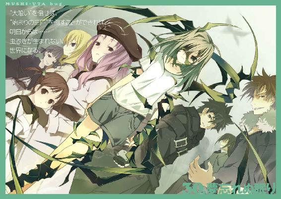
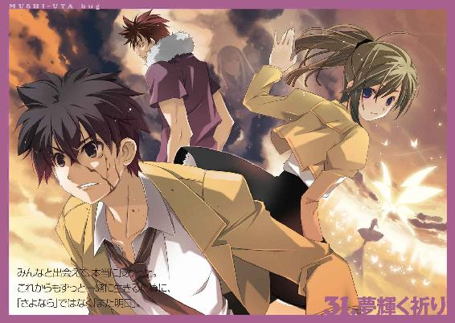
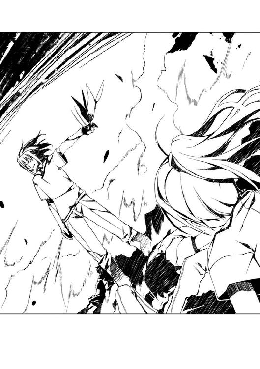

| ムシウタ ｂｕｇ ８ｔｈ．夢架ける銀蝶 | |
| 岩井恭平 | |
| KADOKAWA / 角川書店 (2014) | |


ムシウタｂｕｇ
８ｔｈ．夢架ける銀蝶
岩井恭平

角川スニーカー文庫
本作品の全部または一部を無断で複製、転載、配信、送信したり、ホームページ上に転載することを禁止します。また、本作品の内容を無断で改変、改ざん等を行うことも禁止します。
本作品購入時にご承諾いただいた規約により、有償・無償にかかわらず本作品を第三者に譲渡することはできません。
本作品を示すサムネイルなどのイメージ画像は、再ダウンロード時に予告なく変更される場合があります。
本作品は縦書きでレイアウトされています。
また、ご覧になるリーディングシステムにより、表示の差が認められることがあります。
虫憑きとは、どんな人たちなのだろう？
そんな疑問を抱いたのは、ある少女と出会い、別れてからのことだ。
「こんにちは！」
殺風景な病室のベッドで、まるで息を潜めるように横たわる少女。
花城摩理。
その少女は、最初はただの同級生の一人にすぎなかった。
見舞いに訪れた彼女──一之黒亜梨子を見つめ返す、摩理の驚いた顔は忘れない。
「あの......」
摩理は戸惑ったようだった。
──部屋を間違えているんじゃ？
そう言いたげな様子だ。
「はじめまして」
「......はじめまして」
思い返せば、そんな間の抜けた瞬間こそ、全ての始まりだったのかもしれない。
ホルス聖城学園中等部の一年生だった亜梨子と、入学当初から病弱を理由に一度も登校したことのなかった同級生、花城摩理。
考えるよりも先に身体が動くタイプの亜梨子にとって、物静かで頭が良い摩理との会話は、新鮮で楽しかった。身体だけは丈夫な自分が、ベッドから離れられない親友のためにできることなら何でもしようと思った。
摩理も亜梨子のことを親友と思ってくれていたはずだ。そのことを疑う理由はないと、今なら胸を張って言える。
だが摩理は──あっけなく病によって他界した。
亜梨子と摩理という二人の少女の関係は、そこで理不尽に断ち切られたはずだった。
しかし摩理は虫憑きだった。
かつて摩理の〝虫〟だった銀色のモルフォチョウ〝虫〟が亜梨子に宿って初めて──病死した親友が虫憑きだったことを知ったのだ。
〝虫〟。
それは思春期の少年や少女に取り憑き、その夢や希望を喰らうもの。
摩理のように夢を抱いた者たちを虫憑きにするのは、〝始まりの三匹〟と呼ばれるものたちだ。実際に摩理を虫憑きにした〝三匹目〟の他にも、〝大喰い〟や〝浸父〟と呼ばれる超常の存在がいるという。
摩理はなぜ、亜梨子に自分が虫憑きであることを明かしてくれなかったのだろう？
摩理はなぜ、亜梨子に自分の〝虫〟を託したのだろう？
その理由が知りたくて、亜梨子は虫憑きという人々を探した。
生きたい──。
そんな当たり前の夢を叶えようと、摩理は誰にも知られずにもがいていた。
主を失ったちっぽけな夢は一人歩きし、多くの人々の夢を巻き込みつつある。
亜梨子と摩理。
二人の出会いから始まった旅は、摩理がこの世を去った今も続いている。
亜梨子は、そう思っている──。
１
「海よ！」
ワンピース姿の一之黒亜梨子が、道路と白浜の境界に設置されたガードレールに身を乗り出した。
「海ね！」
Ｔシャツにジーンズ、頭にはキャップという服装の西園寺恵那も負けじとガードレールの上に飛び乗った。
「海です！」
ストライプのシャツの上にジャンパースカートという珍しくラフなスタイルをした九条多賀子が、スカートを気にしながらガードレールをよじ登った。
「──まあ、海だな」
両手にカバン、背負っているのもカバン、足元に置かれているのもカバン。四人分の荷物を押しつけられた薬屋大助が、額に汗を滲ませて真夏の太陽を見上げた。
「海！」
三人の少女が歓声を上げ、穏やかな波を揺らす海辺に向かって砂を蹴った。
ホルス聖城学園中等部は、夏休みに入った。
中学生最後の夏を迎え、亜梨子たちはある目的のために郊外の避暑地へやって来ていた。
前方にはゆるやかに湾曲した浜辺と、陽光を反射してキラキラと輝く海面。海沿いの道路を挟んだ後方には、広大な防風林。そして遠方、白浜の先にある岬には真っ白な塔──天文台が建っている。
海と太陽、防風林と天文台。
そんなシンプルな地形に亜梨子たちがやって来た最大の目的は、ただ一つ。
「海じゃなくて、流星群を見るためにここに来たんじゃなかったのかよ......」
大助のため息を道路に置き去りにし、亜梨子たち三人の少女は服を着たまま、寄せては返す波へと飛び込んだ。
ずぶ濡れになってから我に返り、水着に着替えて第二ラウンド。
「海よ！」
「海ね！」
「海です！」
「それは、もういい」
白浜に仁王立ちになる少女三人とは対照的に、不機嫌顔の大助が呟いた。だがそんな彼もなんだかんだ言って水着姿である。
「ほら、さっさとパラソルを立てなさいよ、大助！ 紫外線から私たちを守りなさい！」
亜梨子は照りつける太陽を見上げ、眩しさに目を細めた。フリルのついたビキニとスカートはドット柄で、胸元には小さなリボンがついている。
「薬屋クン！ どう、この水着？ ねえ、どう？ ほらほら、赤くなって顔をそむけるだけじゃ分からないから、ちゃんとこっちを見て──きゃあっ！ 急に見ないで！ まだ心の準備ができてないんだから！」
大胆なローライズの水着を着た西園寺恵那が、柄にもなく顔を真っ赤にして大助のみぞおちに鋭いボディブローを叩き込んだ。「ど、どうしろってんだ......」と少年が砂浜にうずくまる。
「あの、大助さん。この日焼け止め、私が持ってきたものじゃないみたいなんですけど......私、フランス製のものじゃないと肌が荒れてしまうんです。ちょっと旅館まで取りに戻ってもらっていいですか？」
同級生の中でも特に大人びたスタイルをした九条多賀子が着ているのは、花柄のワンピースだ。腹を押さえて身体を震わせている大助を、ツンツンと指先で突く。
「た、楽しくない！ なんだかオレだけ楽しめてない！ 理不尽だ！」
砂のついた顔を上げて叫ぶ大助。普段から地味な彼らしく、ありふれたボクサータイプの水着を着ている。頰に貼ったバンソウコウだけが唯一の個性といえた。
「あれ？」
胸元を両手で覆い隠した恵那が、遠方の白浜を見て何かに気づいた。
「このあたりってアタシたちだけの貸し切りじゃなかったの？ あそこに誰かいるわ。ほら見て、亜梨子」
亜梨子がそちらを見ると、二人分の人影が見えた。うっ、と頰をひきつらせる。
「え、ええ......確かにいるわね。むだに綺麗な金髪と、ふらふらと眠そうな人が」
「金髪の方が作ってるのは砂のお城──じゃありませんよね。確か肉食戦隊とかいう特撮のキャラクターでしょうか。とても素人が作ったとは思えない出来です」
「あ、眠そうな人がよろめいて、砂人形を壊しちゃったわ」
「金髪の人が怒ってるみたいですね。まあ、すごい。眠そうな人を海へ放り投げて......えっと、浮かんできませんけど、大丈夫でしょうか？」
「ところで、あの金髪......どこかで見覚えがあるんだけど。そうそう、別のクラスの御嶽アンネリーゼさんに似てるような──」
「き、気のせいよ！ 保養所の従業員じゃないかしら！」
「そうだね！ あんまりジロジロ見るのも失礼だし、気にしなくていいと思うよ！」
亜梨子と大助が慌てて恵那と多賀子の視界に割り込んだ。大助が小声で亜梨子を非難する。
「おい、亜梨子......」
「しょうがないじゃない......！ どうしても泳ぎたいって言うんだもの！」
作り笑いで誤魔化しながら、囁き合う二人。その背後では水着姿の〝霞王〟──御嶽アンネリーゼと、やっと海面に浮かび上がった夜森寧子の姿があった。
恵那は「そ、そう？」と不思議そうだったが、海岸一帯を独占できる興奮が勝ったようだ。大海原を抱きしめんばかりに両手を拡げ、目を輝かせる。
「それにしても、さすが赤瀬川財団の会長よねー。知り合ったばかりのアタシたちに、こぉんな素敵な場所を気前よくポンと貸してくれるんだから！ 七那さんもいっしょに来れば良かったのに！」
亜梨子たちがこの場へ訪れる機会をくれたのは、赤瀬川七那という少女だった。
七那は数々の企業を傘下に置く赤瀬川グループ、通称赤瀬川財団の会長職に就いている人物だ。あるパーティで恵那と意気投合したらしく、今でも交友関係があるという。
この周辺はかつて国が公務員の保養所として買い取り、ホテルや旅館、その他の関連施設をまとめて休養施設として利用していた。だが赤字経営を苦に競売に出されたのを競り落としたのが、赤瀬川財団というわけらしい。
恵那がこの夏で最大のイベントを迎える場所を探していると聞いて、七那が提供してくれたのがこの海岸だった。しかも改装工事中にもかかわらず、最低限の生活を支えるだけの従業員まで準備してくれるというサービス付きなのだから、確かに気前の良い話ではある。
多賀子が嬉しそうに両手を合わせ、亜梨子と大助も微笑んだ。
「流星群を見るためだけにこんな場所を独り占めできるなんて、とても贅沢ですね」
「ええ、そうね」
「オレたちだけが使うにしては、ちょっと広すぎる気がするけどね」
亜梨子たちがこの地へ赴いた最大の理由。
それが、ペルセウス座流星群だった。
流星群とはその名の通り、流れ星が連続して発生する現象だ。特にペルセウス座流星群は定期的に観測されることで有名だが、今年は観測史上でも最大級の活動が予想されており、巷で話題になっている。
ペルセウス座流星群の極大期、つまり最も多くの流れ星が観測されるピークが今夜だった。亜梨子たちが住む赤牧市でも見ることができただろうが、遮蔽物がなく空気が澄んでいるこの場所は絶好の観測場所だった。
「本番は夜！ でも今も本番よ、一秒だって無駄にできないわ！ 突撃ー！」
「はい！」
「きゃー、水着がとれちゃった！ どうしよう、薬屋クン！」
「うん、何か仕掛けてくるとは思ってた！ でもまだ海に入ってもいないのに気が早すぎるんじゃないかな、西園寺さん──って、わーっ！ ホントにとれてるし！ なんでだよ！」
輝く太陽と、ジリジリと灼ける砂浜。
穏やかな波間ではしゃぐ四人の水着姿が、ゆらゆらと陽炎に揺れる。
泳ぎを競い合い、ビーチボールで遊び、クーラーボックスの中身を狙って忍び寄る野良猫、もとい〝霞王〟たちを追い払い、昼食をとってまた海へ飛び込む。
ここ最近四人揃って遊ぶ機会がなかった埋め合わせとばかりに戯れる。
太陽が西に傾き始めた頃、亜梨子は恵那と多賀子に喉が渇いたと告げ、浜へ上がった。
パラソルへ戻ると、顔の上にタオルをかけて横たわる先客がいた。
「恵那が呼んでるわよ、大助」
「......あいつのセクハラを止めてくれるなら、行ってもいい」
タオルの下から、低い声で少年が言った。恵那や多賀子の前で演じている〝普通の〟少年の時とは別人の声だ。
「ホントは嬉しいクセに」
「......」
「あら、否定しないのね」
「嫌われてるのは慣れてるんだけどな」
ふてくされた声で言う大助の横に座り、亜梨子は両膝を抱えた。クーラーボックスから炭酸飲料を取り出し、プルを開けて口をつける。多賀子に見られたら「缶から直接飲むなんて、はしたないですよ」と言われそうだ。
「こういうパターンは、なんていうか......どう対応すればいいのか分からないんだよ」
「ふふっ、やっぱりイヤっていうわけじゃないんじゃ──」
笑おうとして、亜梨子の腕から急に力が抜けた。
「──」
視界がぼやけた。ストンと身体の中から何かが抜け落ちるかのように意識が混濁する。力を失った腕から、缶がこぼれ落ちた。
落下した缶が太陽で熱せられた砂の上に落ち、中身をぶちまける──かと思いきや、そうはならなかった。落ちる寸前に、横から伸びた手が缶を受け止めていた。
「亜梨子」
タオルで顔を隠しているにもかかわらず、難なく缶をキャッチした大助が呼びかける。
少年の声に意識を呼び戻され、亜梨子はハッと我に返った。
「大丈夫か？」
「......ええ、平気よ」
軽く頭をふって笑顔を作り、大助から缶を受け取る。
思うように身体に力が入らなくなることは、以前から稀にあった。だが最近は身体だけじゃなく、意識まで失いそうになる。さらに症状が現れる間隔が日に日に狭まっていた。大助も、もちろんそのことを知っている。
原因は分かっている。
「うっかり寝てなんていられないわ。もっともっと遊ばないとね」
微笑んで空を見上げると、銀色の輝きが視界に飛び込んだ。
斜陽を反射しながら、一匹のモルフォチョウが空を舞っていた。
今は亡き親友、花城摩理が亜梨子に託した〝虫〟である。誰かの〝虫〟が他者に宿るのは過去にないケースであるらしい。
「貴方もよ、大助？」
砂の上に横たわる少年に声をかけるが、彼は無反応だった。
薬屋大助は、ただの同級生ではない。彼は亜梨子を監視するために常にそばにいるのだ。彼もまた虫憑きであり、特別環境保全事務局という政府機関から派遣された戦闘員でもある。
「ご主人様が声をかけたら、返事をするものよ。聞いてるの、大助？」
「じゅうぶん、楽しんでるよ」
「じゃあもっと楽しそうにしなさいよ！ 亜梨子チョップ！」
「あだっ！ ああもう、うっせーな！」
大助が顔のタオルを払いのけた。一枚の布きれに隠されていた素顔は、照れ臭そうに見えた。意地っ張りの彼は、そんな顔を見られたくなかったらしい。亜梨子は笑う。
「なによ、本当に楽しんでたんじゃない。照れちゃって、素直じゃないわね」
「だからさっきから、そう言ってるだろーが！ ──つーか素直じゃないのは、お前のほうだろ」
「なによ？ どういう意味？」
「本当に楽しめてるのか？ こんな状況を作った本人が、よく無邪気に笑ってられるな。まったく......いつものことながら、お前の発想にはついていけないぜ」
亜梨子はきょとんとした。すぐに思い出し、噴き出す。
そういえば、そうだった。亜梨子がこれからやろうとしていることは全て、他ならぬ彼女自身が考えて計画したものだった。
だがそんなことは、完全に忘れていた。
この世を去った摩理と同じくらい大切な親友たちと過ごす時間は本当に楽しくて、それ以外のことなど頭から消し飛んでいた。友達と遊ぶ空間に、〝虫〟とか虫憑き、自分が置かれた状況など余計な事情はいらない。
「今はそんなこと、どうでもいいじゃない」
「はあ？ どうでもいいわけ──」
抗議しようとした大助が、亜梨子の顔を見て黙り込んだ。波打ち際で遊ぶ二人の同級生を見る亜梨子は、どんな表情をしているのだろう？
「......」
九条多賀子が、転んだ。元々、運動能力に乏しい彼女の体力も限界なのだろう。ホルス聖城学園に通う多くの資産家の子息の例に漏れず、箱入りのお嬢様である彼女は、今回の小旅行を親に許してもらうのに相当苦労したと聞いている。
大助が亜梨子の前に現れたことにも、多賀子が関係していた。多賀子の幼なじみが虫憑きになったことで、収拾を図るために特環からホルス聖城学園に派遣されてきたのが他ならぬ大助だったのだ。
「本当は怖いクセに、無理してんじゃねーよ」
そっけない口振りで、大助が言った。突き放す口調の裏に隠された気遣いを感じられるようになったのは、いつからだったろうか？
本当は最初から、そうだったのかもしれない。虫憑きたちに悪魔と怖れられる彼だが、確かな優しさを持っていることを亜梨子は知っている。
「怖くなんて、ないわ」
摩理以外ではじめて出会った虫憑きが彼で本当に良かったと心から思う。大助は口では任務のためと言いながらも、ことあるごとに亜梨子を心身ともに救ってくれた。彼という支えがあったからこそ──彼が何度も助けてくれたからこそ、挫けそうになっても何度でも立ち上がることができた。
大助以外にも、数多くの虫憑きたちと出会ってきた。
虫憑きと出会うたびに、それが運命であるかのように彼らとの戦いが生じた。今も遠方で小突き合っている夜森寧子や〝霞王〟とも、そうして出会ってきたのだ。
だが今や彼女たちは、紛れもない亜梨子の友達だ。
彼女たちだけではない。
時に戦い、時に傷つけ合い、時に怖れたこともあった彼ら虫憑きは──決して敵ではなかった。一度は敵になったとしても、再び手を取り合うことができた。
「だって、独りじゃないもの」
虫憑きはいつだって、何かと戦っていた。
だから亜梨子が今、自らの意志で戦いに身を投じようとしているとしても、決して独りではない。
だが、それでも──。
あり得るはずのない、あってはならない、他者の〝虫〟を宿すという運命に縛られた我が身が消耗し、心身が削げ落ちていくという状態は──。
もういないはずの摩理がモルフォチョウに宿り、亜梨子という存在にとって代わろうとするかもしれないという可能性は──。
〝虫〟という得体の知れない存在は──。
そして今まさに迎え撃とうとしている敵の強大さは──。
「怖く......ないわ──」
思い出すだけで、自然と身体を震わせる。
しかし、そんな恐怖も──すぐに消える。
「──」
砂を握りしめて震える亜梨子の手を、温かい感触が包んだ。太陽に灼かれた砂よりも温もりに満ちた手が、彼女の手を握りしめてくれていた。
「今さら強がるな、バカ亜梨子」
大助が言った。いつも通り口調はそっけないものの、その表情や声には、見逃してしまいそうなくらい小さな優しさが溢れている。
「強がってなんかいないわ」
わずかに砂に埋もれて握られた少年の手を、亜梨子は握り返した。砂の中で繫いだ二人の手は、海で遊ぶ少女たちからは見えない。
「ほら。──もう、怖くない」
怖いモノ知らずとよく言われる亜梨子だが、実際は怖いモノだらけだ。
死ぬのは怖いし、身近な人が死ぬのも──摩理が病で他界した時のように、とてつもなく怖ろしく感じる。
困難な問題に立ち向かうのは怖いし、失敗するのも怖ろしい。
だが亜梨子には、大勢の味方がいる。
今、亜梨子の恐怖を打ち消してくれた、優しい手の温もりがある。
だからこそ──亜梨子はもう、何も怖くない。
「私は、間違ってないわよね？」
亜梨子は再び顔を上げた。
視線の先にいるのは、多賀子にじゃれついて笑っている同級生。
西園寺恵那。
多賀子という親友がきっかけで動き出した、亜梨子と虫憑きをめぐる数々の問題が、ついにもう一人の親友にまで及ぼうとしていた。
だからこそ、亜梨子は決断したのだ。
「正解なんて、最初から一つもなかった」
大助が言った。
「でも──お前が、強引に正解を引き寄せたんだ。他の解決策は思い当たらない」
「......」
「もうゴチャゴチャ言わねーよ。俺の任務や、花城摩理との約束、それにもしかしたら何年も前にしたあの約束も......何もかもカタをつけてやる」
繫いだ手に力が込められるのを感じた。亜梨子はじっと大助の顔を見つめる。
「な、なんだよ」
「ねえ、大助」
真剣な眼差しで、大助を見つめる。
二人の間に、沈黙が落ちた。
亜梨子と大助はしばし見つめ合い──とうとう思い切って亜梨子は口を開いた。
「大助って、実は女たらしよね」
大助が顔を真っ赤にした。亜梨子と繫いだ手を慌てて放し、上半身を起こす。
「なっ──」
「恵那をたらしこんだのはもちろん、摩理とこっそり何かの約束したみたいだし......香魚遊や愛理衣にも手を出して。いくらなんでも、節操がなさすぎると思うのよ。このまま私の友達に手を出し続けるなら黙ってないわよ」
「な、何言ってんだ！ 俺はべつに......！ つーか、こっちは迷惑してんだ！ 見りゃ分かるだろ！ いや、分かれよ！」
「本命は誰なのよ！ 答えなさい！」
「なんだよ、本命って！ そんなモン──」
いるわけがない──。
そう言うかと思いきや、大助が言葉に詰まった。何かを言いたげな顔をしたものの、亜梨子から顔をそむける。
「なによ？」
「お前こそ、どうなんだよ」
「え？」
「多賀子は幼なじみがいるし、恵那は......俺にちょっかいかけてくるだろ。──そういう相手がいないのはお前だけだぞ？」
言われてみれば、確かにそうだ。多賀子と恵那にはそれぞれ、気にしている異性がいる。
だが大助の口から、その手の話題が飛び出すとは思わなかった。眉をひそめて大助の横顔を見つめ返すも、少年はどこか拗ねているように見えた。
「それでも一応、女のつもりなんだろ？」
「それでも、って何のことかしら......身体の一部分のことを言ってるならそのまま生き埋めにしてやるわよ」
反射的に胸を腕で隠しながら、低い声で言う。
大助の言葉ではないが、亜梨子だって一応は普通の女子中学生のつもりだ。恋愛に興味がないわけがないし、異性を意識することだってある。
そんな自分が今、こうして大助と並んで砂浜にいる状況で頭に浮かんだのは──。
ごく自然に、感じることができたこと。
「今、すっごく楽しいわ」
大助が、こちらを振り返った。
「大切な友達がいて、友達のことで悩んで、友達に助けてもらって──これからもたくさん友達ができるんだと思うと、ドキドキするの」
花城摩理という親友がいた。
西園寺恵那や九条多賀子という大切な友達ができて、薬屋大助という心強い少年がそばにいてくれる。ここにはいなくても、友達になった虫憑きたちの存在を感じていられる。
彼らと出会ったことが、たまらなく嬉しかった。
「もちろん大助もその中の一人よ？」
亜梨子が笑って言うと、大助がぽかんと間の抜けた顔をしていた。
「なによ。まさかこの期に及んで、俺はただの任務のためにここにいるんだー、とか言わないわよね？」
「俺は──」
大助が何かを言いかけて、黙り込んだ。一瞬だけ俯き、ややあってから顔を上げる。少年は苦笑いを浮かべていた。
「友達ね。......はいはい、そうだな」
「またそうやって、てきとーに答える！ 不満なら、相棒とかでもいいわよ？ そっちのほうがなんだか強そうよね」
「友達でも相棒でも、どっちだっていいさ」
投げやりな返事をして、再び砂の上に横になる。また殴ってやろうかと亜梨子は拳を振りかぶったが、少年の表情を見て思いとどまる。
「お前が選んだほうになってやるよ」
大助も、楽しそうに笑っていた。
「そう......」
亜梨子は拳を下ろし、つられて笑みを浮かべる。
「やっと従順な奴隷になる気になってくれたのね」
「二択じゃなかったのかよ、オイ」
亜梨子は微笑した。
「ねえ、大助。──〝ふゆほたる〟っていう子のこと、話してくれない？」
亜梨子の問いかけは、不意打ちだったようだ。大助がギクリとした顔をした。
ふとしたことで耳にした〝ふゆほたる〟というキーワードを口にするたびに、彼は必ず沈黙し、何かを堪えるような顔をするのだ。今の彼のように。
「やっぱり話してくれないの？」
大助が戦う時に見せる覚悟や、途方もない強さ。その根幹が〝ふゆほたる〟というキーワードにあることは、とっくに分かっていた。
亜梨子は彼のことをもっと知りたかった。
友人として。
同時に──対等のパートナーとして。
「お前には、関係ない」
大助が砂の上で寝返りを打ち、そっぽを向く。
「誰にも、関係ないんだよ。お前はもちろん、花城摩理にも、モルフォチョウにも......それを今さら──」
「大助にとっては、大切なことなんでしょう？」
「......」
「だったら私にも関係あるわ」
笑み、大助の横顔を見つめる。
「私の友達のことだもの」
二人の間に、沈黙が落ちた。
波が寄せる音がやけに大きく響き、恵那や多賀子がはしゃぐ声が耳に届く。
大助は頭をかき、迷っているようだった。
だが、やがて──。
「本当に、モルフォチョウには関係ないからな──」
亜梨子は微笑んだ。
大助が少しずつ語ってくれた。
はじめて彼が特別環境保全事務局の任務に就いた時の出来事。
この国を窮地に追い込んだ大きな危機と、それにたった一人で立ち向かった少年の話。
その全てが彼の言う通り、亜梨子や摩理の出会いから始まったモルフォチョウに関する出来事とは関係がなかったけれど──。
亜梨子は大切な人が強い理由を、ようやく知ることができた。
２
橙色に染まった陽が水平線に沈み、東の空から月が浮かぶ。
鮮やかに輝いていた海が夜闇と同化し、月明かりを反射しながら波を打つ。夜の空気は、昼よりも多くの湿気と潮の香りを含んでいる気がした。
真夜中の海辺に、砂を踏みしめる複数の音が響いた。
「懐中電灯を持ってくる必要なかったわね。月の明かりだけでじゅうぶんだわ」
「晴れて良かったですね。これなら星がよく見られそうです」
「薬屋クン、たくさん荷物もってカワイソウ......」
「はあ、はあ......四人分の懐中電灯とか夜食とかお菓子とか着替えとかカメラとか、なぜか枕とか......カワイソウって思うなら自分の荷物くらい自分で持って──ああ、全員目をそらすくらいだから持つ気ないんだね。はは、もうどうでもいいや」
ラフなＴシャツ姿の亜梨子、恵那、多賀子と、大きなバッグをいくつも背負った大助が静まり返る浜辺を歩いていく。
浜辺に沿って延びる道路には電灯があるが、電力が供給されていないのか、一つも点灯していない。休養施設は防風林の向こうにあるため、人工的な光源は遠方に見える天文台だけだ。
岬に立つ天文台は、この周辺が公共施設だった頃に建てられたそうだ。地元の大学が利用することがあるらしく、観測所としての機能はもちろん研究員が逗留するための生活設備も充実している。せっかくの機会ということで、亜梨子たちはそこで夜を明かすことに決めていた。
「がんばって、大助。天文台はもうすぐよ！」
「それ、一時間前にも言ってたよね、一之黒さん......」
「ごめんなさい、大助さん。私、お箸より重いものを持ったことがないんです」
「日頃から九条さんがもっと重いものを持ってるところを何度も見てるよ......」
「こんなんじゃダメよね......うん、覚悟を決めたわ。思う存分、アタシを叱って、薬屋クン！」
「そうはいくもんか、西園寺さんの期待に満ちた目に応えないことが、オレのせめてもの抵抗なんだ......」
亜梨子を先頭に、ホルス聖城学園中等部の同級生四人組が波打ち際を歩く。
大声で語り、笑い声が混ざり、会話が途切れて訪れた心地よい沈黙を、波音が優しく包み込んでくれる。
彼女たちの頭上には、満天の星が拡がっていた。地上で波打つ海に負けじと瞬く星を映し、光り輝く空の大海原を演出している。
夜空で楽しげに寄り添う星々も、間もなく姿を変えることだろう。
今、輝いている星も。
今は輝きを隠している星も。
その一瞬に命を燃やし、かつてない輝きを放ちながら地上に降り注ぐ。
輝いて流れる星を見て、何を思うか──。
その時が訪れ、彼らの輝きを見た時に自分は──亜梨子は一体、何を思うのだろう？
願わくは。
一瞬の輝きに命を燃やす星々に負けない、綺麗な思いでありたいと思う。
「──だあっ！ もう限界！」
順調に進んでいた四人の行進が、大助の悲鳴によって止まった。
「誰かが荷物を持ってくれないかぎり、もうここから一歩も動かないからな！ それでも行くなら、オレを殺してから行け！」
ヤケになって叫び、少年が砂の上に仰向けに倒れた。本当に疲れたのか、荒い息をついて胸を上下させる少年の口調が、素の彼に戻っていた。
亜梨子は腰に手を当て、嘆息する。
「もう、ワガママねえ。──仕方ないから、ここでしばらく休憩しましょうか」
「もうそろそろ流星群が始まる時間ですね。あ、大助さん、バッグからシートを出していただけますか？ 人数分」
「そんな野獣みたいな目で見なくても、アタシの膝枕は逃げないから安心して、薬屋クン！ うふっ、この欲しがりさんっ」
「荷物を持ってほしいって言ってるんだ！ オレか？ ワガママ言ってるのはオレなのか？ ──うわあ、気づいたら身体が勝手にシートを用意してるし！ 正気に戻れ、オレ！」
「まったく......もういいわ、このままで」
従順にシートを用意しかけていた己の腹を自分で殴っている大助を見て、亜梨子は肩を竦めた。
砂の上に腰を下ろし、そのまま仰向けに寝転がる。
潮風にあたった砂は一瞬、ひんやりと冷たい感触を背中に伝えた。だがすぐに昼間に蓄積した太陽の温もりが滲み出し、寝心地の良いベッドになる。
無造作に砂浜の上に横になった亜梨子を見て、恵那が笑った。つられたように勢いよく亜梨子のとなりに寝転がる。
箱入りのお嬢様である多賀子は少し抵抗を感じたようだが、大袈裟に覚悟を決めた様子で亜梨子たちにならった。
大助がバッグから出そうとしていたシートを引っ込めた。やれやれといった様子で、ゆっくりと三人の少女たちと同様に砂に背をつける。
「......」
それまではしゃぎ合っていたのが噓のように、誰も口を開こうとしなかった。
何も語らなくても分かった。
皆、視界を埋め尽くす星の海に、見とれてしまっているのだ。
仰向けになった亜梨子の視界には、星、星、星──それ以外には何も見えない。
今、見ているものを。
今、感じているものを。
この四人で共有できることが、たまらなく嬉しい。
この途方もない喜びを伝える言葉を亜梨子は知らないし、その必要も感じない。
伝える必要は、ない。
きっと、もう伝わっている──。
「綺麗ね......」
ポツリと呟いた亜梨子の言葉に、ため息のような三人分の同意が返された。
ここに来て、良かった──。
亜梨子は心から、そう思った。
最も大切な彼らと今、いっしょにここにいることは決して間違いではない──。
「ねえ、恵那......」
どれくらいの時間が経っただろう。
静かに星が落ちる瞬間を待っていた四人の間に、亜梨子の呟きが伝わった。
「今まで待たせて、ごめんね──」
自分の口からこぼれた言葉は、意識して呟いたものではない。
砂が擦れる音は、恵那が首を動かして亜梨子を見た音だろう。
「私と大助がずっと続けてきたこと──やっと終わったわ」
「......本当？」
恵那の声は、低かった。唐突すぎて、驚いているのが分かった。
亜梨子も首を動かし、となりに寝る恵那の顔を見て頷いた。
「ええ」
恵那の表情がようやく動いた。心から嬉しそうに笑む。
「本当？ 本当に？」
亜梨子はまた、頷く。
「じゃあ、またいっしょに遊べるようになるのね？ 前みたいに、毎日いっしょに──」
「うん、そうだね」
同意する声は、すぐそばから聞こえた。
亜梨子を囲むようにとなりに恵那と多賀子が並び、大助が頭の上に寝そべっている。
「今さらだけど......本当に今さらだけど、オレも楽しいよ」
少年の声は穏やかで──亜梨子でさえ今まで聞いたこともないくらい素直だった。
「薬屋クン──」
「オレは素直じゃないし、誰かに優しくしたこともないし......優しくできるような人間でもなかったけど──こんなオレと友達みたいに接してくれて、嬉しかった」
「みたい、じゃなくて、友達よ」
亜梨子が言うと、大助の小さな笑い声が聞こえた。少し照れたような、だからこそ本心から込み上げた笑い声だと分かる。
「ずっとこうして──ずっとここにいるのも、悪くないなって思った」
恵那が息を吞んだ。
「だから──ずっと、ここにいるよ」
純粋な少年の声を吸い込む夜空に、小さな変化が現れた。
「オレも、ここにいるみんなといっしょにいたいんだ」
かすかな輝き。
しかし紛れもない、最初の一つ。
光の帯が、星しかない夜空を横切った。
「本当......に......？」
地上にも、変化が起きた。
「アタシ──」
恵那の声が掠れ、昂ぶる感情を押し殺すように震えつつあった。
３
西園寺恵那が、こうなりたい、こうありたい、という自らの未来像を思い描かなくなったのはなぜだろう？
恵那自身が思うに、幼い頃はアニメの魔法少女に憧れたり、アイドル歌手のような華やかな職業に就きたいと願ったことがあったはずだ。
だがある時、自分を取り巻く環境が必要以上に恵まれていることに気づいた。
事業に成功した両親は大きな家で恵那を育ててくれたし、器用な自分は大抵の習い事を人並み以上にこなすことができた。
魔法少女という存在がアニメの中だけの存在だと理解し、アイドル歌手よりも上手に歌うことができるようになった頃、恵那はようやく自分が他人よりもちょっぴり多才であることを自覚できたのだ。
その時にはすでに、両親は恵那をかまってくれなくなっていた。心配せずとも彼女なら一人で何でもできると思ったのだろう。
大好きな姉たちも、恵那を甘やかしてくれなくなった。懸命にエリートコースを進む彼女たちからすれば、恵那は嫉妬の対象でしかない。それでも優しい彼女たちは、妹を遠ざけることで、かろうじて嫌いにならずにいてくれる。
社交的な恵那には多くの友人がいたが、彼らも同様だった。デートをした男の子たちは可愛げなく何でもこなす恵那に引け目を感じ、遠ざかっていった。
女の子の友達も、そうだ。恵那が持つ才能や社交性、容姿や財産などのいずれかにコンプレックスを感じ、気を遣うような仲の友人ばかりが増えた。
周りに合わせようとしたこともあった。体育の時間に転び、テストで悪い点数をとり、男の子の前でドジを演じたりした。今思うと嫌味ったらしいことこの上ないが──事実、友人たちは敏感に違和感を感じ取り、恵那をますます遠ざけた。
じゃあ、どうすればいい？
いっそのこと持てる才能を発揮して、誰よりも困難なことを成し遂げてみせようか？
邪悪な敵を打ち破り、世界を救ってみせようか？
もしそんな敵が本当にいたとして、恵那ならばそれができるかもしれない。誰よりもうまく勇者の剣を扱う自信があるし、それを成せば誰もが彼女を褒め称えてくれるだろう。
だが恵那にとって、そんなことは何の意味もなかった。
魔法少女やアイドルになることより困難な夢だったとしても、それを叶えることに何の魅力も感じない。
恵那が今さらこんなことを言ったら、親兄弟や友人は笑うだろうか？
だが、本当なのだ。
たとえ魔王を倒す実力があっても。
誰もが羨む百の才能を持っていても。
独りでは──意味がない。
夢を叶えた歓びを分かち合う人がいなければ、何をしてもつまらない。
恵那は、ごく普通の女の子なのだ。
四六時中、友達といっしょにいたい寂しがり屋で、〝虫〟のような得体の知れない化け物が大嫌いな怖がりなのだ。
それなのに他人よりも器用というだけで、誰も気づいてくれない。
誰も信じてくれない。
恵那を孤独にするのならば、誰もが羨む勇者の剣など欲しくない──。
そんな寂しがりの恵那が、一之黒亜梨子と出会ったのは中等部の二年生になった直後だった。
──私は遠慮しておくわ。
その新しい同級生に対する第一印象は、決して良くはなかった。恵那の誘いを断る少女は、何か嫌なことがあったのか、無愛想だった。
だが亜梨子は、変わった。
きっと何か辛いことがあって、それでも歯を食いしばって前を向くことを決めたのだろう。元の明るさを取り戻した一之黒亜梨子と接していくうちに、恵那は生まれてはじめて憧れと尊敬という感情を知った。
亜梨子の生き方は、ストレートだった。そのせいで傷ついたり、挫けそうになったこともあるだろう。それでも再び立ち上がり、またストレートにぶつかる強さがある。だからこそ優秀すぎるせいで他人を卑屈にさせてしまいがちな恵那と接する態度は、出会った頃と何一つ変わらない。
九条多賀子という同級生と出会えたことも、恵那の人生にとって大きな財産となった。おっとりとして物事に動じない彼女と出会って、金持ちばかりのホルス聖城学園をはじめて悪くないと思うことができた。かよわそうで実は強い芯を持っている彼女が大人になっても、今のまま純粋無垢でいてほしいと心から思う。
水を得た魚のように、恵那は二人の友達と毎日遊び歩いた。
カラオケで恵那が満点をたたき出せば、多賀子が平然と三十点の歌を楽しそうに歌い、意気込みすぎた亜梨子がマイクを壊す。
ゲームセンターで恵那が大量のぬいぐるみをキャッチすれば、多賀子がマイペースに三十分かけて操作をおぼえ、何もゲットできなかった亜梨子が筐体を蹴って店員に叱られる。
そして三人いっしょに、五段重ねのアイスクリームを頰張るのだ。
自らをセーブすることなく──自らを偽ることなく、ごく普通の中学生として遊ぶ日々。
自らが望んだものを、ようやく手に入れかけた時──薬屋大助と出会った。
亜梨子や多賀子と過ごす楽園に割って入った少年を、最初は敵と思った。からかってボロを出させ、追い出してやろうとちょっかいを出したりもした。
彼がワケありなのは、とっくに感づいていた。──というか、出会った頃の下手くそな優等生の演技で、本人は騙せているつもりだったのだろうか？ 必死に演技を続ける姿が面白くて、慌てる彼を見るのがだんだん楽しくなっていった。
──安心して、西園寺さん。
いつぞやのデートごっこで、虫憑きにデパートを占領された時のことだ。わけが分からないうちに事態が解決しており、呆然とする恵那を抱きしめて大助が笑っていた。
気づいた時には、手遅れだった。
薬屋大助という存在も、恵那にとってかけがえのない人になってしまっていた。演技でしかない彼の普段の姿──いや、彼は気づいているだろうか？ 慌て、怒り、笑う彼の演技はうまくなりすぎて、きっと隠しているであろう正体よりも、本当の彼の姿に近いのではないかと思えるほどになっていることを。
だから、演技でしかない〝薬屋大助〟を好きになってしまったことに後悔はない。からかいすぎて本気と気づいてもらえなくなってしまったのは大失敗だが。
そうして幸福な日々に、恋というスパイスが加わった。
「アタシ──」
真夜中の砂浜で見上げた夜空に、最初の流れ星が落ちた。
潤み、歪んでいく視界の中を、また一つ新たな光が流れていく。
また、一つ。
また、一つ。
流れ星はその数を、増やしていく。
ペルセウス座流星群が──始まった。
「アタシも......」
堪えきれなくなり、恵那は砂の上に横たわったまま両手で涙が溢れる顔を覆う。
数を増やしていく流星の雨。
放射状に尾を伸ばしていく、綺麗な星々。
その光景は息を吞むほど美しかったが──恵那はもっと大切なものを手に入れた。
「アタシも──」
一之黒亜梨子が、戻ってきてくれた。
九条多賀子が、となりにいてくれる。
薬屋大助が──ずっとここにいると、約束してくれた。
「ずっと──」
魔法少女に憧れ、アイドル歌手になるという幼い頃の夢も。
世界を救う役目も。
そんなものは、他の誰かに捧げよう。
それらはきっと、恵那以外の誰かが叶えてくれるから。
今の恵那には、もっと大切なものがある。
奇跡のような確率で出会った大切な友達が、すぐそばにいてくれる。
誰もが羨む才能を持っていながら、ごく普通の女の子でしかない少女。
寂しがりで怖がりな恵那が心から願った夢は、いかにも彼女らしくちっぽけで──。
かけがえのない、大切な夢だった。
「ずっと、四人いっしょにいたい......！」
星々が降り注ぐ夜空が、色を変えた。
恵那の瞳に溜まった涙が、そう見せたわけではない。
水面に一滴の絵の具を落としたように。
満天の星空が、一瞬にして鮮やかな紫色に染まっていた。
瞬く星も、流れる星も、変わらない。
ただ夜の暗闇に侵されていた空一面が、キラキラと輝く紫色の輝きに埋め尽くされた。
流れ星に混じって降り注いだ紫色の何かが、空中の一点に凝縮されていく。
「......えっ......？」
紫色の輝きが集まって形を作ったのは──一人の女の姿だった。
まん丸いサングラスをかけた女が夜空に浮かび、紅いコートをはためかせている──。
「現れたな──〝大喰い〟」
冷静な声を聞いて、恵那は我に返った。
「薬屋......クン......？」
いつの間にか、大助が立ち上がっていた。ただの荷物だと思っていたバッグの中から、漆黒のロングコートを取り出し、勢いよく身に羽織る。
「悪いな、恵那」
少年の一瞬の寂しげな笑みが、頭からかぶるように装着した機械的なゴーグルの奥に消えた。コートやゴーグルと同様にバッグから取り出した、大型の自動式拳銃の安全装置を外す。
大助の声が、別人のように低くなった。
「友達ごっこは──もう終わりだ」
恵那は表情を凍らせた。
「大助！」
少年が投げた銀色のロッドを、亜梨子が受け取った。振り払うようにしてロッドの長さを伸ばしながら、亜梨子が非難する。
「そんな言い方、ないでしょう！」
何が起こっているのか。
これから何が起きようとしているのか。
一切の状況が摑めず、恵那はその場で身を起こしたまま硬直する。となりにいる多賀子もまた、驚いた様子で周囲を見回していた。
轟音とともに、恵那の頭上を一際大きな流星が通り過ぎた。
否。──それは流星と呼ぶには激しすぎる、巨大な火の玉だ。
火炎の塊が、亜梨子や大助のそばに墜落した。業火が弾け、周囲の砂が舞い上がった。浜辺に寄せる波を一瞬で蒸発させて現れたのは、腕組みをした長身の少年だった。
「はっは、待ちくたびれたぜ」
まるで自分が王様だと言わんばかりに威風堂々と佇む少年が、灼けつく瞳で夜空に浮かぶ女を見上げた。無造作に暴れる髪と、頰に描かれたタトゥ、そして腕を組む身体全体から爆ぜる炎を噴き出す少年は、まるで火から生まれた魔人のようだった。
周囲からいっせいに砂を踏む音が響いた。
恵那は反射的に、背後を振り返る。
「......！」
心臓が停まるかと思った。
先ほどまで無人だったはずの道路に、数えきれないほどの人影が現れていた。今こうしている間も、防風林の中から次々と何者かが現れようとしている。
ガードレールを跳び越え、金髪の少女が砂浜の上を歩み寄った。真っ白なコートを身に纏い、やはり白いゴーグルを首に下げた少女を、恵那は今度こそ見間違えなかった。
「言われた通り〝Ｃ〟は置いてきたぜ、〝かっこう〟。確かにこのステージで戦うには、まだあのガキは足手まといにしかならねぇしな」
御嶽アンネリーゼだ。学校で見せる上品な姿からは想像もつかない好戦的な笑みを、ゴーグルを装着して隠す。
「さあ、貴女たちはこっちへ」
そう言って恵那と多賀子の腕を引いたのは、アンネリーゼと同じコートを纏った女性だった。──その女性が恵那の好きなインディーズバンドのヴォーカルをしていた夜森寧子という人物であることに今さら気づき、さらに頭が混乱する。
海が、弾けた。
巨大な波がせり上がり、重力を無視して夜空に向かって弾け飛ぶ。
大量の海水が膨張し、周囲一帯を囲む巨大なドームを形成した。透明な幕が、夜空から降り注ぐ星々の明かりを歪ませる。
「にやり。包囲網は任せてください。どこにも逃がしませんよ」
気配を殺し、また見覚えのある人物が背後に忍び寄っていた。
後で名前を聞いたから、知っている。頰に星形のシールを貼ったその少女は、狗狸坂香魚遊という他校の生徒である。
当たり前だが、恵那の知らない人物もいた。
「恋の戦士、伊砂姫子！ 教官の弟子代表として馳せ参じたよぉ！」
元気な声を張り上げたのは、可愛らしいデザインをした白いコートを着た女の子だった。コウモリの羽らしきアクセサリを背中につけた姿は、まさに小悪魔といった感じだ。
「にひっ。梅くんと遥香ちゃんを呼ばないなんて、彼らにとうとう見放されちゃったんですか、ハルキヨ？」
綺麗な装丁を施された本を胸に抱えた少女が、歪んだ笑みを浮かべた。人差し指で眼鏡のズレを直す。
一体、何がどうなって──。
「驚かせてゴメン、恵那」
パニックに陥りかけていた恵那を、亜梨子が振り返った。
「こうなった理由は、今は説明できないけれど──」
優しい笑みを残し、亜梨子が空に浮かぶ女を見上げた。その肩に銀色のモルフォチョウが舞い降りる。
「必ず、恵那を守ってみせるわ」
一之黒亜梨子を先頭に、大助や炎の魔人、御嶽アンネリーゼや他の少年少女たちが恵那を守るように壁を作る。
呆然と立ち尽くす恵那もまた、頭上を見上げ──ビクリと肩を震わせた。
亜梨子たちが今まさに迎え撃とうとしている、謎の人影。
その丸いサングラスの奥で揺れる虹色の瞳が、他の誰でもない恵那を見つめていた。
「ねえ──」
真っ赤なルージュに染まる女の口が、ゆっくりと動いた。
「貴女の夢を、きかせて？」
星降る夜空に、艶やかな女の笑みが重なった。
４
数週間前。
国定公園の展望台で大助、ハルキヨ、リナという強い虫憑きたちが揃い踏みを果たした時に、亜梨子はある計画を持ちかけた。
彼らといっしょならば、きっとうまくいく──。
そう、確信していた。
「〝大喰い〟を倒す──ですって？」
最初に眉をひそめたのは、リナだった。巨大な天道虫を従える少女は、砂や土で髪を汚してもなお美しかった。
「私の友達が〝大喰い〟に狙われてるのよ。そうよね、七那？」
亜梨子が振り返ると、アルファベットの〝Ｊ〟を逆さにしたような形のステッキを持つ少女、赤瀬川七那が片目を細めた。
「やはっ。西園寺恵那のことなら、間違いないわよ」
「興味ねぇなあ」
燃え盛る炎のように無造作に暴れる髪をかき上げ、ハルキヨが笑い飛ばす。
「なんで俺が、てめぇのダチを助けるのを手伝ってやらなきゃなんねぇんだ？ なんか得すんのか？ ああ？」
「手伝うつもりがないなら、その場にいるだけでもいいわよ、ハルキヨ」
「あん？」
「自分の目で見て、何をするかは自分で決めて。でもきっと思い知るはずよ──」
亜梨子は挑発的な笑みを、ハルキヨに向ける。
「貴方も結局、虫憑きだってね」
ハルキヨが薄笑いを消した。片方の眉を持ち上げ、言う。
「俺がいる場所には、〝災難〟がつきまとう。何もかも燃えちまっても、知らねぇぜ？」
「ここにいる中に、そんなもので簡単に焼き尽くされるような人間がいると思う？」
ハルキヨが、大助やリナの顔を見回した。
「──はっ。くっくっ」
炎の魔人がくぐもった笑みを漏らし、それきり何も言おうとしなくなった。
「ねえ、そうでしょ？」
亜梨子は、ずっと沈黙を守っている少年、大助に向かって訊いた。
「私はここにいる人たちよりも強い虫憑きを知らないわ。貴方は、どう？」
漆黒のロングコートを身に纏い、ゴーグルで素顔を隠した少年が口を開こうとして──何も言えず、また沈黙する。
彼らが手を取り合うことなど有り得ない。
大助はかつて、そう言った。
だが今まさに不可能が実現しつつあった。
花城摩理のモルフォチョウが、それを叶えようとしている。
虫憑きの中で最も強い者たちを引き合わせ、彼らに不器用ながらも互いの顔を見つめ合わせている。
こうして同じ場所にいるだけでも、奇跡のような出来事なのだ。
だからこそ──。
さらなる奇跡を引き起こせないとは、思わなかった。
「無理だ」
ようやく口を開き、大助が低い声で言った。
「恵那が狙われてるとは分かっていても、いつ、どんな場所で〝大喰い〟があいつの夢を喰いにくるとも分からないんだ。俺たち全員で、ずっと恵那に張りついているのか？ それにしたって街中で〝大喰い〟が現れでもしたら──」
大助が言葉を切り、周囲を見回した。
つい先ほどまで展望台だったはずの場所が、一面の荒野と化していた。山の表面が削り取られ、木々は燃え尽き、剝き出しになった土が四方に積み上がっている。
この場にいる虫憑きがほんの数分、激突しただけでこの惨状だ。彼らがもし都会で全力を出そうものなら、どれほどの被害が及ぶか想像もつかない。
「恵那を救うどころか、街一つぶち壊しかねないぞ」
「七那から聞いた、恵那の夢......」
大好きな友達と、ずっといっしょにいたい──。
そう恵那は言ったという。
ならば。
「考えたんだけれど......その夢がはっきりとした形にならない原因はむしろ──私や大助にあるんじゃないかしら」
「......？」
「だから〝大喰い〟は恵那の夢を狙いながらも、まだ喰おうとしない。──かといって、いつか必ず喰いに来るというなら、いっそのこと私たちがその時を呼び寄せるしかないのかもしれないわ」
亜梨子の言っている意味が分からず怪訝そうな大助から、七那へと視線を移す。
「ねえ、七那。誰もいない場所を用意できない？ できるだけ広いほうがいいわ」
「私にメリットがあるのなら、いくらでも用意いたしますわ、一之黒家の次期当主様」
ステッキをクルクルと回しながら、七那が嫌味を込めて言った。亜梨子は冷静に切り返す。
「〝大喰い〟と会いたいんでしょう？」
「でも貴女たちは、それを倒すと言っているわね」
「貴女は私たちが失敗するほうに賭ければいいだけよ。そうでしょ？」
七那が肩をすくめた。
「失敗するつもりなんてこれっぽちもない。──そう顔に書いてあるわよ？」
「当たり前でしょう？」
亜梨子は両手を拡げ、笑った。
「ここにいる私たちに、勝てない相手がいるはずないわ！」
大助一人がそばにいてくれただけで、どれだけ心強かったことか。彼はどんな虫憑きよりも強かったし、どんな窮状からも亜梨子を救ってくれた。
その彼と同じくらい強い虫憑き、ハルキヨとリナが今、この場にいるのだ。
今の亜梨子たちに、一体なにが不可能だというのだろう？
亜梨子の言葉につられ、ハルキヨが口元を緩めた。大助は仏頂面で、リナも複雑そうな顔をしている。
ただし誰一人として、異論を唱えようとはしなかった。
それが──答えだ。
「もし〝大喰い〟を倒せたとしても、その後、どうなるかは分からないわよ？ 私たち、今いる虫憑きがどうなるかも......」
リナが言い、目つきを変えた。
「それにあたしは、特環のクソ野郎とだけは組む気がないわ。そこの変態はまだしもね」
大助がゴーグルをリナに向ける。
「こっちの台詞だ。こいつの甘さは、味方にも甘えを生む。そこそこ使える虫憑きも、こいつがいるせいで骨抜きになりかねないぜ」
「あたしが味方を弱くするとでもいいたいワケ？ 知ったふうなクチ叩かないでくれる？」
「〝守られてる〟って意識が生まれるだけで、弱くなるんだよ。味方一人を守るために全滅したんじゃ話にならない」
睨み合うリナと大助の二人と馴れ馴れしく肩を組んだのは、ハルキヨだった。〝虫〟を使っていない状態では年上の少年が腕力に勝っているらしく、二人はそれを振りほどけない。
「まぁだ駄々こねちゃってるのか、このガキどもは？ なんだか楽しげなことになってきたじゃねぇか。せいぜい俺を楽しませてくれよ。じっくりばっちり見届けてやるぜ？ つーかさっきの聞いたか、〝かっこう〟？ 俺、お前よりもこの美人ちゃんに愛されちゃってるらしいぜ」
「気安く触るな、変態。この世で二番目に嫌いってだけよ」
「お前が捕獲対象なのは変わらないんだ。見物をするつもりなら、せいぜい流れ弾に気をつけるんだな」
亜梨子は睨み合う虫憑きたちの間に入り、大助とリナの手をとった。
自然、四人が輪を作る形となる。
「戦う時はきっと──摩理も私たちに加わるわ」
亜梨子の言葉に、大助、ハルキヨ、リナが真顔になった。
「私たちがこうして今ここにいるのは、摩理のおかげだもの」
一匹のモルフォチョウが引き寄せた、数々の虫憑きたち。
その繫がりは、意味があるはずだ。
恵那を救い、〝大喰い〟を倒す。
そして──。
「私たちなら、なんだってできるに決まってるわ」
摩理の夢の続きも、きっと見つかる──。
亜梨子はその時、確かにそう予感していた。
５
紫色の鱗粉をちりばめて輝く夜空を、絶え間なく星々が流れていく。
放射状に降り注ぐ流星群を背負って夜空に浮かぶのは、女の形をした虫憑きを生む存在。
〝大喰い〟だ。
「亜梨子！」
戦場から遠ざけようとする夜森寧子に抵抗しながら、恵那が叫んだ。
亜梨子は唇を嚙みしめる。
恵那はきっと今、何が起きているのか理解できていないだろう。
つい先ほどまで、仲良し四人組で最高の時間に身を委ねていたはずだ。
それなのに彼女たちのものだった空間が、あっという間に戦場と化してしまった。
そうなるように、亜梨子が仕組んだ。
今日この日のために、ずっと準備をしてきた。七那がこの場所を恵那に提案したのも、亜梨子がそう仕向けたからだった。
恵那を救うためとはいえ、結果的に彼女を騙すことになってしまった。
だがそれでも、親友を守るためならば──と、そう思っていた。
それなのに。
「大助......！」
なぜ彼は、あのようなことを言ったのだろう？
──友達ごっこは、もう終わりだ。
そんなはずはないのに。
彼がずっとここにいたいと言ったのは、紛れもない本心だったはずだ。大助だって恵那を友達と思い、彼女を守るためにこの場にいることに間違いはない。
「〝大喰い〟から目を離すな。少しでも油断すると、恵那を狙われるぞ」
身構える大助から、しかし亜梨子は目を離さない。
「──俺は恵那の夢を、叶えてやれない」
大助が一瞬、唇を嚙んだのが見えた。
「今夜、この戦いがどうなろうと、俺はまだ立ち止まっていられないんだ」
亜梨子の胸が締めつけられる。
彼の戦いはまだ終わらない。その理由を昼の浜辺で彼の口から聞いたばかりだ。
かつて自らの手で欠落者にした、虫憑きの少女──その帰りを待ちながら、彼はこれからも戦い続ける。
「でも、大助は......それでいいの？ 大助だって本当は、ずっとここに──」
「俺の今の気持ちなんて、どうでもいいんだ。恵那にはもっと辛い思いをさせるんだからな」
大助が拳銃を握りしめる手に、力を込めた。
「あいつの夢を叶えてやれない俺にできることは──今ここで恵那を守ることだけだ」
押し殺した声で言い、まっすぐに〝大喰い〟を見上げる大助。その横顔は、しかし亜梨子の目には苦しげに映った。
「バカ大助......！」
ハルキヨがその場に腰を落とし、あぐらをかいた。
「さぁて、約束通り特等席でじっくり見させてもらうぜ！ 気が向いたら、どっちかについてやるかもな！」
図々しいほど堂々と最前線で静観を決め込み、炎の魔人が亜梨子を振り返る。
「今のところ、てめぇにつく気はゼロだぜ。あの美人ちゃんの姿が見あたらねぇ時点で、期待外れも良いところだ。俺を動かしてーなら、これ以上ガッカリさせんじゃねぇぞ？」
怒りに燃える瞳で睨まれ、亜梨子は言い返すことができなかった。
ハルキヨの言う通りだ。
ここにやって来るはずだった最強の虫憑きの一角が、どこにも見あたらなかった。
「リナは──来ない」
代わりに現れたのは、亜梨子のそばへ歩み寄る長髪の少年だった。
「ここに来る直前で、虫憑きの子供が特環に追われているという情報が入った。リナはその子供を助けに向かったんだ。──彼女から、伝言がある」
元は特別環境保全事務局に所属していたが、リナの理想に共感して組織を離反した少年、〝アキ〟が言う。
「〝やっぱり目の前の虫憑きを見捨てられない。──ごめんなさい〟」
亜梨子は唇を引き締める。
期待していた最大戦力の一人が現れないと知り、焦りと落胆がないといえば噓になる。
だが──いかにも、リナらしい。
一人でも虫憑きを見捨てた時点で、リナはリナではなくなってしまう。彼女の強さと誇りを失ってしまう。
他のどんな事情やしがらみにも関係なく、目の前にいる虫憑きを全力で救う。
そんな彼女だからこそ、多くの虫憑きが彼女に惹かれて集まっていくのだ。
彼女の存在意義を歪めてまで、この場へ引き込むことはできない。
亜梨子は笑み、力強く頷いた。
「ええ、分かったわ」
「だから──代わりにオレたちが来た」
道路や防風林から続々と姿を現しつつある虫憑きの集団は、リナの仲間たちのようだ。
「リナはギリギリまで迷ってたんだ」
〝アキ〟が亜梨子から、そばにいる大助へと視線を移した。かつての戦友を見つめる横顔には、少なからず迷いの色が見える。
「正直、オレは──何が正しいのか、分からなくなってきた。〝かっこう〟を裏切って特環を離れ、リナといっしょに虫憑きの居場所を創ろうとしたはずだった。キミと戦ったことだって、その時は正しいことだと思っていた......」
大助が〝アキ〟を一瞥した。だが何も言わず、すぐに〝大喰い〟へ視線を戻す。
元戦友に無視され、少年が少し悲しげな笑みを浮かべた。
「でも今、〝かっこう〟はキミとともにいて、リナもここにやって来ようとした。──今さら、とキミは思うかもしれないけれど......確かめたいんだ。〝かっこう〟やリナが、キミに力を貸そうとする理由を」
亜梨子は頷いた。
「分かってるわ」
この戦いに、特別環境保全事務局の協力は得られない。大助曰く、特環という組織は〝大喰い〟との戦いに消極的だという。勝算が不確かな戦いに同機関は戦闘員を投入しない。
だからこそ〝アキ〟をはじめとする虫憑きたちが駆けつけてくれたことは心強かった。
そして、それ以上に──たくさんの虫憑きが、今この場に集まってくれたことが嬉しかった。
「ありがとう」
亜梨子は微笑む。
摩理が亜梨子に夢を託し、亜梨子が大助たち強い虫憑きの手を繫ぎたいと願った。
そして今、強い虫憑きたちにならって、数多くの虫憑きがここに集まった。
繫がっている。
一匹のモルフォチョウが呼び寄せた人々の想い。
それは間違いなく繫がっていて、今も輪を拡げつつある──。
「──」
亜梨子は紫色の鱗粉で彩られた空を見上げ、銀色のロッドを構えた。
流星群を背に浮かぶ〝大喰い〟が亜梨子の視線を受けて赤い唇を動かした。
「懲りない子たちね。本当に──」
虹色の瞳で見つめられ、亜梨子の背筋に冷たいものが走った。
星が降り注ぐ夜空が、真っ二つに裂けた。
いや、違う──。
星空に現れたのは、途方もない大きさのアゲハチョウだった。ゆっくりと巨大な翅を拡げ、雪崩のような紫色の鱗粉を撒き散らす。
「邪魔をするなら、容赦しないわよ？」
「私の友達の夢は、貴女なんかには渡さないわ」
亜梨子の肩にとまったモルフォチョウが、目映い銀光を放った。
弾けるようにモルフォチョウの躰が歪み、無数の触手となってロッドと同化する。一瞬にして銀色に輝く槍と化すが、モルフォチョウの勢いはそれだけに止まらなかった。
「摩理──」
銀色の槍から、触手が伸びた。亜梨子の身体にまとわりつき、銀色に輝く模様となって全身に染み込んでいく。
銀色の模様が、片手と片脚、そして首を通って片眼まで侵食する。
モルフォチョウとの同化によって、全身に力が漲っていく。同時に亜梨子の意識が引っ張られるようにして、別の何かに押し潰されそうになる。
「──私を、呼んだわね」
顔半分に銀色の模様を浮かべた亜梨子の口が、勝手に動いた。
「亜梨子」
自分のものではない、静かな声。
それは紛れもない、モルフォチョウの本当の宿主──今は亡き花城摩理の声だった。
今までの同化とは違う、暴力的なまでの支配力が亜梨子を襲った。
模様が放つ銀色の輝きが、夜空を包み込む紫色の鱗粉を弾き飛ばした。モルフォチョウの模様が身体をさらに侵食していくにつれて輝きは強くなり、周囲の空気がビリビリと震える。亜梨子を中心に砂が舞い上がり、海面がいっせいにさざ波を立てる。
「摩理──」
奥歯を嚙みしめ、亜梨子は自我を取り戻す。顔を歪めながら、空に浮かぶ〝大喰い〟を睨む。
「亜梨子──」
強引に意識を奪い取った摩理が、亜梨子の口で微笑んだ。
〝大喰い〟に向かって、銀光に包まれた少女が槍を高々と掲げた。
〝虫〟によって侵食されゆく亜梨子と、夢の続きを求めてこの世に舞い戻った摩理。
「答え合わせを、しましょう──」
星降る夜空の下、両者の声が重なった。
６
紫色の輝きと銀色の光がせめぎ合う海岸線の先に、その天文台はあった。
半球状の開閉式の屋根は閉ざされ、その下に設置された望遠鏡は息を潜めたままだ。本来ならば流星群が極大期を迎えた今こそ果たすべき使命を全うできずにいる。
亜梨子たち四人組が訪れるはずだった、今は誰も使っていない天文台。
その屋根の頂点に、一人の少年が無造作に座っていた。
スーツ姿の少年が口にくわえた煙草が、一息で根元まで灰と化した。
星々が降り注ぐ夜空を見上げるでもなく。
空に浮かぶ人にあらざるものに驚くでもなく。
ぼんやりと砂浜を見下ろしながら──。
くは、と少年が真っ白な煙を吐いた。
虫憑きとは、何なのだろう？
病室のベッドで孤独な日々を過ごしていた花城摩理は、ずっと考えていた。
生きたい──。
病という死神が常にそばにいた摩理が、そんな夢を抱いたのは必然だった。
夢を抱き、そして虫憑きになった。
摩理を虫憑きにしたのは、〝三匹目〟と呼ばれる存在だった。
人の姿をしたそれは、摩理に〝虫〟というものが何かということを語ってくれた。
〝虫〟。
思春期の少年や少女に取り憑き、その夢や希望を喰らうもの。
夢を抱いた者たちを虫憑きにするのは、〝始まりの三匹〟と呼ばれるものたちだ。摩理を虫憑きにした〝三匹目〟の他にも、〝大喰い〟や〝浸父〟と呼ばれる存在がいるという。
摩理にとって、虫憑きになったことは不幸ではなかった。
むしろ幸運だった。虫憑きになったことで摩理は病室の外の世界を自由に駆け回ることができたし、もしかしたら寿命も延びていたのかもしれないから。〝三匹目〟だった青年は彼女を虫憑きにしたことに罪悪感を抱いていたが、摩理は彼を恨んではいない。
恨むとすれば──自分の運命だけだ。
生きたいと願う摩理にとって、彼女の身体に許された時間はあまりに短かった。
「こんにちは！」
自暴自棄になりかけていた摩理のもとに、一人の少女が現れた。
一之黒亜梨子。
不条理な世界を恨み、すでに多くの罪を犯していた自分とは対照的に、亜梨子は無垢で眩しかった。同情ではなく一人の友人として接してくれる亜梨子が、自分にとって唯一無二の存在になるまで時間はかからなかった。
きっと亜梨子も、摩理のことを親友だと思っていてくれたと思う。
二人の間に〝虫〟や虫憑きという存在は何の意味もなかった。そう思ったからこそ摩理は、亜梨子とそれらについて一言も語らなかった。
〝虫〟が摩理の世界を変えてくれたというのならば──。
亜梨子は、摩理そのものを変えてくれた。
孤独な病人でもなければ、〝ハンター〟と呼ばれる残虐な虫憑きでもない。
ごくありふれた──摩理が憧れてやまなかった、普通の女の子になることができた。
だが、それでも。
生きたいと願う己の夢だけは、どうしても諦めることができなかった。
虫憑きだということを隠していた摩理を、亜梨子は嫌うだろうか？
摩理が自分の夢の続きを勝手に託したことを、亜梨子は恨むだろうか？
摩理が一之黒亜梨子になれば、新たな生命を得ることができる。
だが〝花城摩理〟という人間が生きていたことの証人は、親友の亜梨子しかいない。亜梨子の人格が葬り去られれば、花城摩理という存在そのものが消えてなくなってしまう。
新たな生か、花城摩理という一人の少女が生きていたということの証明か。
相反する二つの願いは、摩理が死んだ今も自分の中で揺れ動いている──。
花城摩理は、そう思っている。
１
真夜中の海岸線に、輝く雨が降り注いだ。
満天の星が次々と、地上に向かって光の軌跡を描く。
ペルセウス座流星群。
星降る夜に、少女の謳うような声が響いた。
「摩理──」
砂浜の上に二本の足で立ち、一之黒亜梨子は空を仰いだ。銀色に輝くロッドを両手で握りしめる亜梨子の左半身に、銀光を放つ模様が浮かび上がる。
亜梨子の唇が勝手に動き、別人の声を紡いだ。
「亜梨子──」
親友の身体を借り、一度は失ったはずの生にしがみつく少女は──花城摩理だ。
一つの身体に二つの人格を宿す少女が握りしめたロッドの先で、光り輝く翅が羽ばたいた。翅がねじれ、尖り、銀色の鱗粉を撒き散らす穂先と化す。
「答え合わせを、しましょう──」
亜梨子と摩理、二人の声が重なった。トレードマークのポニィテールが逆立ち、吹き荒れる鱗粉が海岸の砂を舞い上がらせる。
モルフォチョウが変化した槍を構える亜梨子のそばには、頼もしい仲間たちがいた。
特別環境保全事務局に所属する最強の虫憑き、〝かっこう〟こと薬屋大助。誰よりも心強い亜梨子のパートナーは、漆黒のロングコートを纏い、大型の自動式拳銃を握りしめ、今この時も彼女のとなりにいてくれる。
不敵な笑みを浮かべ、砂浜の上であぐらをかいているのは炎の魔人、ハルキヨだ。彼のそばには、一冊の分厚い本を胸に抱えた少女──〝司書〟も控えている。
上品な顔立ちに漲る闘志を湛える金髪の少女、〝霞王〟もいた。恋のために試練を乗り越えたコウモリ羽の少女、伊砂姫子もいる。過去視の能力を持つ自称占い師、狗狸坂香魚遊の姿もあった。
爆撃を操る歴戦の戦闘員、〝アキ〟の本名を亜梨子は知らない。彼が率いているのは、数十人にも及ぶ分離型の虫憑きたちだ。
そして──。
「亜梨子......！」
「亜梨子さん──」
海岸沿いの道路わきで泣きそうな顔をしているのは、西園寺恵那と九条多賀子だ。
二人ともホルス聖城学園の中等部に通う、亜梨子の大切な親友だ。中学生で最後の夏休みに流星群を観察するため、保養所や天文台のあるこの場所へやって来た。
彼女ら二人は、虫憑きではない。
虫憑きにしてミュージシャンの夜森寧子に守られているとはいえ、彼女たちは何が起きているのかも理解できず、混乱しているようだった。
亜梨子の身体に浮かぶ銀色の模様が、右半身をも侵食していく。
「さあ、亜梨子──」
口が勝手に開き、摩理の声が言った。
「貴女の答えを、教えて」
星が降り注ぐ夜空を見上げる。
百を超えようという数の虫憑きたちも、彼女と同じものを睨んでいた。
「私のことを、拒絶するの？ それとも──」
空に浮かぶは、真紅のロングコートに身を包む麗人。
否──。
西園寺恵那が思い描いた夢に誘われて現れた、人にあらざる超常の存在。
少年少女の夢を喰らい、虫憑きを生むとされる〝始まりの三匹〟の一つ。
流星群を隠す巨大なアゲハチョウを背負い、空に浮かぶ女性の形をした化け物。
亜梨子たちはそれを──〝大喰い〟と呼んでいた。
「私を受け入れて、夢の続きを見せてくれるの？」
「私にも、聞かせてくれるかしら？」
ルージュをひいたように紅い唇を動かし、耳に響く声で〝大喰い〟が言った。
「興味があるわね。──モルフォチョウの亡霊に、貴女がどう応えるか」
〝大喰い〟の髪が、風に煽られたように横になびいた。長い腕を水平に持ち上げる。
夜空に浮かぶ巨大なアゲハチョウから降り注ぐ鱗粉が、〝大喰い〟の指先で渦巻いた。それを皮切りに、一つ、また一つと鱗粉の渦が数を増殖させていく。
星空が、輝く渦に埋め尽くされた。
「だって、亡霊さんには──私と戦う理由なんてないはずですものね？」
海岸線が、無数の咆哮に包まれた。
〝大喰い〟が生み出した渦が弾け、輪郭のぼやけた〝虫〟と化したのだ。
〝大喰い〟の周囲だけではない。夜空全体に生み出された〝虫〟の数は──数百匹はいるだろう。形も大きさも異なる紫色の〝虫〟の軍勢が、海岸線を覆い尽くす。
「......！」
亜梨子は奥歯を嚙んだ。槍を握る腕に、無意識に力が入る。
分かっていた。
百の味方を連れようと、〝大喰い〟に対して数の上で有位に立つことは有り得ない。
なぜなら、〝大喰い〟の能力は──。
「どうして──オレと同じ〝虫〟がいるんだ！」
驚愕の声を上げたのは、〝アキ〟だった。
彼は分離型の虫憑きで、爆発能力を持つルリハムシを操る。その彼と全く同じ形をした、紫色の〝虫〟が空に浮かんでいた。
「ふふ......」
自らが生み出した軍勢に守られ、〝大喰い〟は虹色の瞳を細めた。
「俺の〝虫〟だけじゃない......見たことがある〝虫〟が、どうしてこんなに──」
大助が口を開いた。
「自分で生み出した分離型の〝虫〟をコピーして操ることができる。──それが〝大喰い〟の能力だ」
「なん──だって......？」
動揺と戦慄が入り混じった〝アキ〟の声は、たちまち彼の仲間たちに伝染した。彼らの多くは分離型の虫憑き──つまり〝大喰い〟によって虫憑きにされた者たちである。
〝大喰い〟は自ら虫憑きにした者たちの能力を、全て操ることができる──。
以前に〝大喰い〟と戦った経験がある亜梨子は、そのことを知っていた。
大助や〝霞王〟も同様で、微塵も動じていないところをみるとハルキヨや〝司書〟も知っていたのかもしれない。寧子、香魚遊、姫子たちは驚いた様子だが、特殊型の虫憑きである彼女たちの戦意は衰えていない。
だが──。
〝アキ〟と彼の仲間たちの動揺は大きかった。指揮官の〝アキ〟が硬直していることもあって、圧倒的な戦力差を前に統制を失いつつある。
亜梨子は、ぎゅっと唇を嚙みしめた。
〝アキ〟たちの本当のリーダーにして、最強の虫憑きの一角であるリナならば、残酷な現実にも立ち向かえると確信していた。
リナの代わりに〝アキ〟と大勢の仲間たちが駆けつけてくれたのは、嬉しい誤算だった。しかし同時に大きなリスクも生んでしまった。その場にいる人間が多ければ、それだけ混乱が拡がる可能性も増えてしまう。
「みんな！ 落ち着い──」
亜梨子はパニックに陥る前に、声をかけようとするが──。
「──亜梨子！」
顔に浮かぶ模様が、右半身を侵食した。
亜梨子の意識が遠のき、摩理の人格が彼女の身体を奪う。
亜梨子が──摩理になる。
「答えを、聞かせてくれるんでしょう？」
亜梨子の口を使い、摩理は問いかけた。
「さあ、早く聞かせて──」
亜梨子が友人の恵那を守り、虫憑きにさせたくないのは分かる。
だが、それはつまり──。
亜梨子は虫憑きという存在を、否定しているということだろうか？
同じ虫憑きである摩理をも、亜梨子は在らざるべき存在と思っているのだろうか？
「──摩理！」
銀色の模様が、左半身へ押し返された。
「分かっているわ。でも──」
摩理の意識が遠のき──亜梨子の人格が、身体を取り戻した。
「摩理の答えから、先に聞かせて」
モルフォチョウが変化した銀色の模様が、亜梨子の身体を奪い合う。
「私の答えを、先に......？」
「ええ、そうよ。摩理は今、どうしたいの？」
「そ、それは──」
「今までに色んな人たちから、摩理のことを聞いたわ。怖ろしい〝ハンター〟だって言う人もいたし、貴女が私の身体を奪うためにモルフォチョウを遺したと言う人もいた。摩理が本当にいたのか疑う人だっていたわ。大助だけは何も決めつけないで、ずっと見守っていてくれたけれど、本当は──」
亜梨子は微笑む。
「私はずっと──こうして摩理とお喋りがしたかったの。だってまた明日ねって約束したのに、摩理は──」
──また、明日ね。
そう約束した次の日、摩理は病によって他界してしまった。
あれから一年以上の月日が経ち──。
亜梨子はようやく、親友と再会できた。
「ありがとう、摩理。約束を守ってくれて。──やっと、摩理と会えた気がする」
「......！」
「だから摩理の口から、はっきりと聞かせて。──摩理の言葉なら、私も信じられる」
「わ、私の答えを聞いてから、答えを選ぶつもりでしょう！」
「そんなことは、しないわ」
亜梨子は穏やかな声で言った。
いや、声で語り合っているのかどうかも、分からない。
亜梨子と摩理の会話は、二人の間だけで交わされていた。誰にも邪魔をされない、他には誰もいない世界で、二人の少女は正面から向き合い、その指先を絡ませる──。
「そんなこと、しない」
亜梨子が繰り返した。
「──」
摩理は、言い返せなかった。
亜梨子は後出しジャンケンをするような人間ではない。そのことは他の誰よりも、親友の摩理がよく知っていた。
「私は──私の答えは──」
摩理の声が、遠ざかっていく。
亜梨子はゆっくりとまぶたを開いた。いつの間にか、目をつむっていたようだ。
「待ってるわよ......摩理」
摩理は逡巡しているようだ。
何かを言おうとして口ごもってしまうのは、摩理の癖だった。そういう時、亜梨子はいつも、親友が口を開くまで待ったものだ。
だから亜梨子は、待つ。
親友が導き出す答えを、ゆっくりと待とう。かつてそうしていたように。
それは二人の間だけで決められた、暗黙の約束事なのだから──。
「──思い出して、みんな！」
亜梨子は大きく口を開き、声を振り絞った。
「今まで、どんな辛い思いをしてきたか！」
凜とした声が、戦場と化した海岸線に響き渡った。
「今まで、どんなに傷ついてきたか！」
大助を含む虫憑きたちの視線が、亜梨子に集まった。
「虫憑きは誰もが戦っているんでしょう？ そのせいで痛い思いをして、身を守るために誰かを傷つけて──自分と同じ虫憑きが倒れていくのを見てきたんでしょう？ 次は自分かもしれないと思いながら！ 虫憑きになってから、ずっとそうだったんでしょう？」
銀色に輝く槍を砂浜に突き刺し、夜空を見上げた。
「私は、虫憑きじゃないわ！」
紫色の〝虫〟の大群に守られ、〝大喰い〟が可笑しそうに下界を見下ろしていた。
「だから本当は──戦いたくなんかない」
味方の虫憑きたちが、どよめいた。
「だって、怖いもの！ こんな場所からは、今すぐに逃げ出したい！ 痛い思いなんかしたくないし、死にたくなんかないわ！ 当たり前じゃない！」
紛れもない本音だ。
もしこの場にいるのが亜梨子一人だけだったら、とっくに逃げ出している。
「でも本当は、みんなだって同じなんでしょう？ 本当は怖いクセに、逃げたいクセに、傷ついたり、傷つけたりしたくないクセに、虫憑きだから仕方ないって自分を納得させているだけなんでしょう？ 虫憑きじゃない私と、何も変わらないんでしょう？」
亜梨子は声を嗄らし、叫んだ。
「私たちは戦いたいんじゃないわ！ ──勝ちたいのよ！」
〝大喰い〟を睨みつける。
「怖いけど、逃げたいけど、傷つけ合いたくないけど──欲しいモノがあるの！ 叶えたいことがあるの！」
〝大喰い〟に向かって、槍を振り上げる。
「〝大喰い〟は強いし、怖いわ！ もし倒すことができたとして、その後、どうなるかも分からない──それでも、勝つの！ 勝ち続けるの！ そうすれば欲しいモノを、絶対に手に入れられる」
亜梨子の叫びが、海岸線に響き渡る。
「私たちが叶えたい夢は、きっと──逃げずに戦ったその先にあるわ」
砂浜にいる虫憑きたちから、動揺が消えた。
しかし、まだ足を踏み出すには至らない。
戦いに臨む、最初の一歩。
それを踏み出すに相応しい人物は、亜梨子のすぐそばにいた。微笑みかける。
「そうよね？」
漆黒のロングコートを纏った少年、薬屋大助は無言だった。
ただいつものように──黙って一歩、前に進み出る。
亜梨子を何度も救ってくれた頼もしい背中が、虫憑きたちの先頭に立った。
「この中に、俺を悪魔と呼んだヤツはいるか？」
大助の低い声に、しんと虫憑きたちが静まりかえった。
「俺が怖いヤツはいるか？ 俺を恨んでいるヤツは？ 憎んでいるヤツは？」
特別環境保全事務局の悪魔、〝かっこう〟。
誰よりも多くの虫憑きを倒し、欠落者にしてきた彼を怖れない者はいない。砂浜を包む静寂が、そのことを証明していた。
「──それでいい」
大助の身体に浮かぶ緑色の模様が、眩い輝きを放った。
「今日だけは、俺がお前たちといっしょに戦ってやる」
〝大喰い〟を見上げ、大助が言い放つ。
「この俺が死ぬところを想像できるヤツだけ、この場から消えろ」
これまでずっと争い、戦い、憎み合ってきた虫憑きたち。
決して相容れることのなかった者たちの顔つきが、一つになった。
虫憑きではない亜梨子によって呼び集められ、誰よりも虫憑きを怖れさせてきた大助が先頭に立つ。
その場から逃げ出す者は──一人たりとも現れなかった。
「〝霞王〟！ 姫子！ 〝アキ〟！ 分かってるだろうな！ お前らは一人につき、最低でも百匹は倒せよ！」
「たった百匹で足りるわけねぇだろうが！」
「はいっ！」
大助の声に、〝霞王〟と姫子の勇ましい声が応えた。
「本当に、〝大喰い〟を倒せるのか......？ 倒したら──どうなるんだ？」
亜梨子の横で、〝アキ〟が呟いた。
「分からないわ。でも、少なくとも──」
亜梨子は微笑む。
「明日から、虫憑きが生まれることはなくなるわね。──少なくとも、分離型の虫憑きだけは」
「そうか......そうだな」
〝アキ〟が笑った。心から嬉しそうな笑みだった。
「キミは、すごい人だったんだな」
「え？」
「〝ハンター〟や〝かっこう〟、それにリナや──」
少年が振り向いた先で、ハルキヨがつまらなそうに手を振り払った。炎の魔人は、まだ動くつもりがないようだ。
「こんなにも強い虫憑きたちを、一つにまとめてしまったんだから。はじめて会った時は、〝ハンター〟の亡霊に取り憑かれた、運の悪い人としか思わなかった」
「......」
〝アキ〟の言葉を、亜梨子は肯定も否定もしなかった。
虫憑きでもないのに、虫憑きの力を使う──。
そんな自分に一体、何ができるのか？
何ができたのか。
その答えが出るのは、これからだ。
「いくぞっ！」
大助が〝大喰い〟に銃口を向けた。
鬨の声を上げる虫憑きたち。
「やっぱり、邪魔をするのね？」
嗤う〝大喰い〟。
道路のそばに立ち尽くす恵那と多賀子。
亜梨子も槍を構えようとして──。
「──亜梨子」
亜梨子の身体に浮かぶ模様が、弾かれたように侵食を開始した。
亜梨子は目を見開く。
「摩──理──」
「答えが──出たわ」
銀色の模様が、あっという間に亜梨子の全身に染み渡っていく。
急速に意識が乗っ取られていく亜梨子の視界の中で──。
大助の銃撃が、決戦の火蓋を切った。
２
「──また絵本を読んでいるのかい？」
誰も訪れることのない病室のベッドの上で、摩理は絵本を閉じた。絵本には〝魔法の薬〟と題をつけられている。
顔を上げると、〝先生〟がいた。まだ若く、白衣を着ていても威厳より初々しさが先に立っていた。それもそのはずで、当時の彼はまだ先生ではなくただの研修医にすぎなかった。
「......」
亜梨子と出会う前の摩理は、持病よりも孤独に病んでいた気がする。
無表情に窓の外を眺めるのも、いつものことだった。毎日代わり映えのしない景色に、どう笑い、どう驚けばいいのか、摩理には分からない。
〝先生〟も黙って花瓶の水を取り換えた。主治医は別にいるのだが、はじめての担当患者である摩理のもとに、忙しい研修の間を縫っては会いに来てくれている。
摩理が思うに、〝先生〟は医者という職業に向いていなかった。
彼は、優しすぎる。
一患者にすぎない摩理に感情移入し、そのせいで自らが彼女にした行為に罪悪感を抱き続ける。──己にそんな選択をさせた相手を恨むこともできない。そんな青年だった。
「桜の苗のほうがいいって？ ダメダメ、鉢は〝根付く〟から縁起が悪いよ。アリアは妙なところで世間知らずだな」
誰にともなく〝先生〟が呟いた。摩理が振り向くと、「あっ」と口を押さえる。
「しまった、また声に出しちゃったな。コレのせいで、同期の連中にもおかしな目で見られてるんだ。困ったもんだよ、まったく」
「アリア・ヴァレィは、まだ〝先生〟の中にいるの？」
〝先生〟は平凡な研修医だった。ごく普通に生まれ、学生生活を送り、医学部を卒業した。戸籍もあるし、家族だっている。
だが同時に、彼は──〝始まりの三匹〟の一つである〝三匹目〟でもあった。
人にあらざる存在。同化型の虫憑きを生むとされる、原虫指定の化け物。
そのことを彼は、摩理に教えてくれた。
アリア・ヴァレィとは〝三匹目〟と呼ばれる原虫の、本当の名前だという。
「私を虫憑きにしたんだから、もういなくなるはずじゃなかったの？」
「だとさ、アリア。この噓つきめ」
優しすぎるということ以外に〝先生〟に変わったところがあるとすれば、どこか浮世離れした物言いをするところだ。
正確に言うなら、彼自身が〝三匹目〟なのではない。
〝三匹目〟という別の存在が、彼の中に居座っているのである。
「こんなイレギュラーは、ボクもはじめてなんだ！ 何度も言っただろ！ ──だってさ」
〝先生〟が摩理に向かって言った。彼の中にいる存在の台詞を代弁したようだ。
「......」
化け物に見初められ、その容れ物にされてしまった青年。そんな彼は摩理と同じくらい──いや、もしかしたら彼女以上に不幸なのかもしれない。
それなのに彼は、平然と笑うのだ。
「〝三匹目〟は誰かを虫憑きにすると、宿主から離れ、別の器を見つけるまで眠りにつく」
〝先生〟が言った。摩理が言葉を引き継ぐ。
「そして、元の宿主は──虫憑きにした人間に関する記憶を失う......」
「僕ら二人とも、すっかり騙されたね。この僕の中にいる、僕そっくりの詐欺師に」
〝先生〟が自分の胸を指で叩き、笑った。
〝三匹目〟ことアリア・ヴァレィには人格というものがない。だから誰かの中に宿るたびに、その人間の性格をコピーし、宿主とコミュニケーションを図るのだという。
他の〝始まりの三匹〟である〝大喰い〟や〝浸父〟とは全く違う、やっかいなシステムだよ──そうアリア自身は言ったらしい。
「うはっ、すごい猛抗議だな、アリア。耳を塞いでも聞こえるんだから、やめてくれよ」
「イレギュラーだったのは......私が病気だったから？」
「アリアはそう見てるね。同化型の虫憑きになる瞬間、その人間は身体が作り替えられる。だから元から普通の状態じゃない人間を虫憑きにしたことで、なんらかのエラーが生じたんだろうって。──どうせ生まれ変わるなら、君の病気も治せたら良かったのに」
口調は冗談じみているが、〝先生〟の横顔には、はっきりと罪悪の念が見えた。
──すまない。僕は君に、なんてひどいことを......！
虫憑きになった摩理の前で、青年が泣き崩れたのはたった一度きりだ。
「贅沢は言わないわ。虫憑きにしてもらわなければ、あの時の発作でとっくに心臓が停まっていたんだから」
「......」
「まさか虫憑きになるくらいなら、あの時に死んでいたほうがマシだったなんて──言わないわよね？」
「僕からは、もう何も言えないさ」
青年が笑った。
「いつか君が決めてくれればいい。僕を許すか──それとも、断罪するか」
覚悟は、とっくに出来ている──。
そんな口振りだった。
「僕の中にいるアリアの力も、だいぶ弱ってしまった。このまま消えるか、それとも残り少ない力でまた虫憑きを生んでしまうか。もし復讐するなら、急いだほうがいいかもね」
花瓶を置き、冗談っぽく青年が言った。
「君にかかれば、アリアなんてイチコロさ。アリアだけじゃない。ディオはもちろん、エルにだって勝てるかもしれない」
〝浸父〟と〝大喰い〟。
他の〝始まりの三匹〟に、この時の摩理は興味がなかった。青年が〝不死〟の虫憑きについて口を滑らせる前だったこともある。
そう、この時。
摩理は、思いついてしまったのだ。
「──羨ましいわ」
「なんだって？」
「アリアは、天使の薬を飲んだのね」
姿を変え。
時を超え。
〝三匹目〟は永遠に生き続けるという。
不治の病という鎖に縛られた摩理にとって、それはまさに一つの理想だった。
「──私にも、できるかしら」
その時、〝先生〟が浮かべた表情を、摩理は決して忘れない。
彼はとてつもなく驚いたようだった。
そして、それ以上に──ひどく悲しそうな顔をしていた。
「このモルフォチョウは私の夢が形になったんでしょう？ ──もう一人の私なんでしょう？」
摩理が手を差し伸べると、どこからともなく銀色に輝くモルフォチョウが舞い降りた。
「だったら、このモルフォチョウに私の全てを託せば──この身体を捨てて、誰かの中に生き続けることができるんじゃないかしら？ そう、アリアみたいに」
アリア曰く、摩理は虫憑きの中でも特別なのだそうだ。全力を出した彼女には、誰も敵わないという。
そんな自分なら、もしかしたら──。
「それも一つの方法なのかもしれない。もし出来るものなら、それをしてみるのもいい。──でもね、誰かの中で生きるというのは、そういうことじゃないと思うよ、摩理」
どこが違うというのだろう？
摩理には青年の言葉の意味が分からない。
「憶えておいてくれ、摩理」
それは摩理が虫憑きになったばかりの頃のこと。
摩理はその後、不死の虫憑きという存在を知り──嫉妬に近い思いで、それを探す日々を送ることになる。
「これからも辛いことはあるだろうけれど、本当に大切なことだけは見失わないでくれ」
赤牧市に潜む虫憑きを狩り続けるうちに、〝ハンター〟と怖れられるようになった。
「アリアはただそういうふうに生まれ変わってしまっただけの、もういない存在なんだ。でも君は違う。確かに、ここで生きているんだよ」
そして──一之黒亜梨子と出会った。
花城摩理という少女が生きていたことを憶えていてくれる、たった一人の親友。
「君は、アリアとは違う。もうどこにもいないはずの存在なんかじゃないし、誰かのコピーでもない。花城摩理という人間は、ちゃんとここに生きているんだよ」
いつになく強い口調で言った〝先生〟。
「君は君のまま、これからも生きていくんだ」
彼はきっと、もういない。
今頃はどこかへ去り──自分で言っていたように摩理のことを忘れ、違う人生を送っているのだろう。
そしてアリアは決められたプログラムのように、また別の人格を得て、自らの宿命に身を任せているのだ。もしくは力を失い、とっくに消滅してしまっているかもしれない。
摩理はその後、死という完全なる孤独へと突き落とされた。
「私は、生きたい──」
右手に、天使の薬。
左手に、悪魔の薬。
両手に魔法の薬を持つ摩理は──。
あの日、〝先生〟が教えてくれた言葉の意味が、まだ理解できずにいた。
だから──。
「たとえ、亜梨子になってでも──」
失った肉体を得るための選択を、摩理はようやく決めた。
３
轟音を撒き散らし、かっこう虫と同化した拳銃が火を噴いた。
反動で大助の足元の砂浜が舞い上がり、波打ち際の水面が放射状に弾け飛ぶ。
「懲りないわね、〝かっこう〟ちゃん」
嗤う〝大喰い〟のまん丸いサングラスが、夜空を満たす光を反射した。
数百を超える紫色の〝虫〟の軍勢が、大助が放った銃弾に向かって一斉砲火を浴びせたのだ。火や電撃など、ありとあらゆる特殊能力が、大助の銃弾を迎撃して霧散させる。
だがその時には、大助の姿が地上から消えていた。全身に緑色の模様を浮かべた少年が跳躍し、進路を塞ぐ〝虫〟を拳で打ち砕きながら、〝虫〟から〝虫〟へ跳び移っていく。
「──うおおおおっ！」
大助が吠えた。ついに〝大喰い〟に迫った大助が、緑色の輝きを放つ拳を〝大喰い〟に向かって振り下ろす。
だが拳が命中する寸前、両者の間に紫色の〝虫〟たちが割って入った。
隕石が墜ちたかのような衝撃とともに、大助の拳が無数の〝虫〟を木っ端微塵に打ち砕く。
「──ちっ」
あと一歩のところで〝大喰い〟への攻撃を阻まれ、大助が砂浜に着地する。
「ふふ......貴方たちの相手は、ディナーの後でゆっくりしてあげるわ」
〝大喰い〟の虹色の瞳が、地上を見下ろした。その視線の先にいるのは──。
「っ──」
西園寺恵那だ。九条多賀子とともに寧子に守られた少女が、ビクリと肩をすくめた。
恵那の夢を喰らうことが、〝大喰い〟の目的だ。それが果たされてしまえば恵那は虫憑きになり、〝大喰い〟はこの場を去るだろう。それは恵那を守り、さらに〝大喰い〟を倒すために集まった者たちの完全敗北を意味する。
夜空を埋め尽くす〝虫〟の大群が、恵那に向かって降下した。
「ナメんなよ、雑魚どもがぁっ！」
大地震が砂浜を揺るがした。
弾け飛ぶ大量の砂、蒸発する海面。そして──一瞬にして跡形もなく引き裂かれる紫色の〝虫〟たち。
「この〝霞王〟様に近づくヤツは、味方だろうとぶち殺すぞっ！」
白いロングコートを纏った金髪の少女、〝霞王〟が吼えた。青い瞳を輝かせる彼女を覆う霞が無数の爪を生み出し、迫り来る〝虫〟たちを次々となぎ倒していく。
「御嶽......アンネリーゼさん？」
恵那のとなりで、多賀子が驚きの声を上げた。監視者としてホルス聖城学園に潜伏していた〝霞王〟を、今まではただの同級生と思っていたのだろう。
「私がディフェンスに回るなんて納得がいきませんガ、今日だけは我慢してあげマス」
〝霞王〟が恵那たちに向かって、にっこりと上品な笑みを浮かべた。
「認めたくねぇが、オレ様の能力は守りに徹したほうが強ぇしな！ てめぇらには指一本、触れさせねぇよ！ ──おらあっっ！」
雄叫びとともに繰り出された爪の一閃が、紫色の〝虫〟たちを消し飛ばした。さらに周囲を覆う霞が防壁としての役割を果たし、押し寄せる〝虫〟たちの侵攻を防ぐ。
「サポートは任せてっ！ 敵の数を減らすよぉっ！」
コウモリ羽の少女、伊砂姫子が叫んだ。人差し指、親指、小指を立てた右手を野球選手のようにふりかぶる少女の足元から、噴水のように緑色の霧が噴き出した。螺旋状に巻き上がる霧が、緑色のヤスデに変わる。
「やぁっ！」
姫子が右手を振り下ろした。
実体のないヤスデが宙を走り、空中で躰を分裂させた。数十匹もの小さなヤスデが、散弾銃のように敵の〝虫〟たちに命中する。
〝大喰い〟が生み出した〝虫〟たちが、悲鳴のような咆哮を上げた。ヤスデに囚われた〝虫〟が制御を失い、同士討ちを始める。
「やぁっ！ やぁっ！ やぁっ！」
右手、左手と姫子が腕を振り下ろすたび、大量のヤスデが宙に放たれた。〝大喰い〟が生み出した〝虫〟たちの間に混乱が生じる。
一方的な進軍を阻まれた軍勢に、さらなる追撃が襲いかかった。
流星群に混じって降り注いだ小さな影が、いっせいに爆発を起こした。爆撃の雨が、次々と敵の〝虫〟たちを霧散させていく。
「今だ！ かかれっ！」
〝アキ〟だ。爆撃能力を持つルリハムシを操る少年の号令に従い、仲間の虫憑きたちが反撃に転じた。空中で、あるいは地上で、〝大喰い〟の鱗粉によって作られた〝虫〟たちと戦い始める。
「〝ねね〟！ 恵那たちは〝霞王〟に任せて、怪我人の処置に回れ！」
「分かったわ......」
大助の指示に、恵那と多賀子のそばにいた寧子が頷いた。
「〝ころろ〟！ ──分かってるな？」
「ニヤリ。任せてください。ここなら媒体の水も大量にありますし、存分に力を発揮してみせますよ。くすくす」
頰に星形のシールを貼った狗狸坂香魚遊が、両手を前に突き出した状態で笑んだ。彼女が海岸を覆うドーム状の水膜を維持しているのは、〝大喰い〟がこの場から逃げ出すのを防ぐためである。
大助が頷き、視線を変えた。
「亜梨子！」
〝霞王〟や姫子、香魚遊、寧子、恵那、多賀子、〝アキ〟と彼の仲間たち、そしてハルキヨと〝司書〟──砂浜にいる全員が、こちらを見た。
だが彼女は動かない。
彼らが待ち望む少女──一之黒亜梨子は、ここにはいない。
「......」
いるのは、花城摩理だ。
全身に銀色の模様を浮かべた摩理は、槍を持ったまま仁王立ちして動かなかった。
ここにいる人々は誰一人として、摩理という存在を知らない。
本当の意味で摩理のことを知っているのは、たった一人の少女だけだ。
だから──。
「私は」
亜梨子よ。
そう言えば、誰もが彼女を一之黒亜梨子と信じ込むだろう。
花城摩理という存在は消え去るが、死という恐怖から逃れることはできる──。
摩理が今ここで亜梨子を名乗り、この身体の持ち主である少女の人格を葬り去る。
それが、摩理の選んだ答え。
死の運命から逃れ、生き続けるという自らの夢を叶えるための唯一の方法──。
「──いや」
大助が視線を〝大喰い〟に戻した。
「まだ、摩理みたいだな」
摩理は目を見開いた。
「どうして、分かっ──」
「亜梨子はお前に先に答えを出すように言ったんだ。お前の口から、はっきりと答えを言え」
大助が言い放ち、拳銃を構えた。
「お前たちが答え合わせとやらをするまでは──意地でも持ちこたえてやる」
銃声が轟き、燃える銃弾がまとめて数匹の〝虫〟たちを消し去った。
「てめぇ、今さら亜梨子になりすまして誤魔化そうとしてるんじゃねぇだろうなっ！」
ビクリと肩を震わせ、摩理は振り返った。
「花城摩理！」
襲い来る〝大喰い〟の〝虫〟を迎え撃ちながら、〝霞王〟が叫んだ。
摩理は言葉を失う。
「花城摩理さん......！」
負傷者を能力で治癒していた寧子が、顔を上げた。じっと摩理の顔を見つめる。
「決定的な力を持つ虫憑きがかっくん一人じゃ分が悪いですね。どうするんですか、花城摩理さん？ ニヤニヤ」
「花城摩理さんが答えを出すまで戦って戦って、少しでも敵を減らしておくよぉ！」
「〝ハンター〟！」
死闘に身を投じる誰もが、摩理の名を呼んでいた。
彼らは、摩理のことを知らないはずだ。
彼女の存在など、誰も知りもしなかったはずなのに──。
「お友達がいっぱいできたのね、亡霊さん？」
悠然と嗤う〝大喰い〟さえも、摩理を見ていた。
「花城......摩理？」
「もしかして、亜梨子さんが言っていた......亜梨子さんのお友達のことですか？」
恵那と多賀子まで、摩理の名を呼んだ。
摩理の心臓が、高鳴った。
生前の摩理にとって激しい鼓動は、発作の前触れだった。急速に鼓動が速まるにつれ、過去に捨て去ったはずの恐怖が蘇った。
そう、恐怖だ。
今まさに、摩理の周りで、理解不能の事態が生じている──。
「どうして──」
大助が再び〝大喰い〟に立ち向かうも、割って入った〝虫〟たちに弾き返された。額から血を流しながらも、何事もなかったように砂浜に降り立つ大助。
恵那と多賀子を守る〝霞王〟が呻き声を漏らした。圧倒的な数の遠距離攻撃によって、少しずつ霞を削り取られつつある。
「どうして......！」
全能力を攻撃に集中する姫子は、砂浜を駆けて〝虫〟の攻撃を避けるのに必死だった。コウモリの羽の片方がすでになく、腕や脚に裂傷を刻まれながらヤスデで反撃する。
香魚遊、寧子、〝アキ〟も苦戦していた。仲間の虫憑きたちも傷ついては、寧子に回復を受けている。
「どうして、私の名前を呼ぶの......！」
怒号と〝虫〟の咆哮が飛び交う戦場に、摩理の叫びが響いた。
だが誰も、摩理を振り返らない。
何かを信じる顔つきで、〝大喰い〟に立ち向かっていく。
「今になって......どうして、私の名前をっ！」
彼らは亜梨子が呼び集めたはずだ。
彼らが求めているのは、亜梨子のはずだ。
だから──摩理は亜梨子になる。
そう答えを出そうとした今になって、彼らは摩理の存在を信じ、彼女の名前を呼ぶ。
「私は......！」
一之黒亜梨子よ！
そう叫ぼうとしたのに、言葉が出ない。
亜梨子になれば、これからも彼らとともに生きていけるのだ。
ずっと。
病に苦しむこともなく。
亜梨子がそうしていたように──たくさんの人々に囲まれ、笑って生きていくことができる。
「私は──」
だが、それならば──〝花城摩理〟はどうなる？
亜梨子という証人を失い、生きていた頃の摩理を知る者は誰一人としていなくなる。
誰もこない。
誰にも知られない。
孤独という牢獄で、永遠に生き続ける自分の姿を思い浮かべ、ぞっとした。
「私──は──」
それでも良かったはずだ。
なぜなら摩理は、最初から孤独だった。
そんな孤独な少女が消え去っても、誰も気づかない。
だから摩理は、そんな名前など簡単に捨て去ってしまえると思ったのに──。
「おい、花城摩理」
破壊音が飛び交う中、存在感の塊のような低い声が、はっきりと摩理の名を呼んだ。
「今さら、なかったことにしてんじゃねーだろうな？」
ハルキヨだ。
「目ぇそらしてんじゃねぇぞ」
頰にファイアパターンのタトゥを彫った男は、まだ動くつもりがないようだ。彼に襲いかかろうとした〝虫〟たちが、見えない熱波によって消し炭に変わった。
「てめぇが、呼び寄せたんだろうが。この俺を含めて、この場にいる全員をな」
燃える瞳で凝視され、摩理は息を吞んだ。
「違うなんて、言わせねぇぞ？ 亜梨子が集めたなんて言わせねぇぞ？ ──花城摩理が！ てめぇのモルフォチョウが！ てめぇが捨てきれなかった夢が！ 俺たちをここに呼び寄せたんだ！ 今、起きてることは全部、そのおまけみてぇなもんだろうが！ ドサクサで亜梨子になりすまして、逃げだそうとしてんじゃねぇぞっ！」
ハルキヨの怒りが熱風となり、摩理に吹きつけた。肌が焦げるほど熱い突風が、ポニィテールを舞い上がらせる。
「──」
摩理は言葉を失い、立ち尽くした。星降る夜空の下で繰り広げられる戦いを見上げる。
これが。
こんなにも多くの虫憑きを巻き込み、〝虫〟という存在の命運をも決めかねない戦いが。
虫憑きのいない未来へと、世界を変えかねない決戦が。
摩理が夢の続きを望んだことの、たんなる延長上の出来事だというのだろうか？
「それとも今のお前が、答え合わせをした結果なのか？」
炎の魔人が、ゆっくりと立ち上がった。たったそれだけの動作で、周囲を取り囲む〝虫〟たちが一匹残らず燃え尽きる。
「もし、そうなら──名乗りやがれ」
摩理は息を吞む。
「答え合わせをした〝一之黒亜梨子〟だと、ここにいる俺たちに名乗ってみせろ」
牢獄のような病室で一生を終えた少女、花城摩理。
誰の記憶にも残らない孤独な少女、花城摩理。
そんな寂しい名前に、未練はないはずだった。
それなのに──。
「──」
喉が詰まったように、言葉が出ない。
黙り込む摩理から、大助が顔をそむけた。ゴーグルに浮かぶ光点が残像を描き、空にいる〝大喰い〟を見上げる。
「──おおおおっ！」
漆黒のロングコートが、高々と跳躍した。
空を飛ぶ〝虫〟たちの上を跳び移り、一直線に〝大喰い〟目がけて突き進む大助。その顔面や腕は、血で染まっていた。彼が一度でも退けば、紫色の〝虫〟たちの勢いを止められなくなる。そのことが分かっているから、彼は一度も寧子の治癒を受けていなかった。
「〝かっこう〟さんをサポートするよぉっ！」
姫子が防御を捨てた。襲いかかる敵に肩を切り裂かれながらも放ったヤスデが、大助の進路にいる〝虫〟たちを無力化する。
「いけっ、〝かっこう〟！」
〝アキ〟の爆撃が、大助に襲いかかろうとする〝虫〟を駆逐した。仲間の虫憑きたちも、大助の進路上にいる敵を排除していく。
大助と〝大喰い〟の距離が、見る間に縮んでいく。
今度こそ、〝大喰い〟まで到達する──。
誰もがそう思った時だった。
「ふふ......」
妖艶に笑む〝大喰い〟の周囲から、忽然と紫色の〝虫〟たちが消えた。
「なっ......？」
地上にいる虫憑きたちに動揺が拡がった。
〝大喰い〟が生み出した〝虫〟が、波が引くかのように次々と消え去っていく──。
「もう忘れちゃったのかしら、〝かっこう〟ちゃん？ 一度、お仕置きしたはずよね？」
一匹残らず、紫色の〝虫〟が姿を消した。
〝大喰い〟の前に紫色の鱗粉が収束した。鱗粉が固まり、一匹の巨大な〝虫〟が現れる。
半球状の躰に七つの斑点を浮かべた、その〝虫〟は──。
〝アキ〟が、掠れた声を漏らした。
「そ、その〝虫〟は──リナの──」
〝大喰い〟によって生み出された巨大なナナホシテントウが、勢いよく翅を拡げた。
キュンッ──という甲高い音とともに、海岸線の空気が急速に凝縮する。
大助が叫んだ。
「〝ころろ〟っ！」
「ニヤリ！ 了解ですっ！」
香魚遊が胸の前で両手を重ね、何かを丸めるような仕草をとった。
海岸線全体を覆っていた水のドームが、その範囲を狭めた。水膜が圧縮され、〝大喰い〟とナナホシテントウを包む檻となる。
「ふふ──」
〝大喰い〟は妖艶な笑みを崩さない。
ナナホシテントウが、巨大な翅を羽ばたかせた。
光が、弾けた。
見えない衝撃波が、香魚遊が生み出した水膜を跡形もなく弾き飛ばす。
視界に映る海面が爆発した。砂浜がめくれ上がり、圧倒的な破壊の奔流が地上にいる全員に襲いかかる。
「くっ！」
摩理はとっさに槍から鱗粉を噴き出し、衝撃を相殺する。
「ぐおっ......！」
〝霞王〟が、自らの霞を膨張させた。爪で寧子を引き寄せ、恵那や多賀子とともに衝撃波から守る。
「っ──」
「うっ──」
〝霞王〟の爪が届かなかった二人、姫子と香魚遊がなす術なく吹っ飛んだ。押し寄せる砂と高波に吞まれ、姿を消す。
「ぐあぁっ！」
〝アキ〟が軽々と宙を舞い、砂浜と道路を隔てる防波堤に叩きつけられた。彼の仲間たちもそれぞれの手段で身を守るが、その多くが衝撃波を防ぎきれずに弾き飛ばされる。
「クソがっ！」
ハルキヨもまた防御態勢をとった。紅蓮の炎を噴き出し、〝司書〟もろとも身を守る。
衝撃波が海岸線を突き抜けたのは、一瞬だった。
余波によって舞い上がった土砂と海水が、豪雨となって砂浜に降り注ぐ。
虫憑きたちの呻き声が海岸を包み──。
「うおおおおおっっ！」
大助の咆哮が、星降る夜空に響き渡った。
ナナホシテントウの衝撃波をまともに喰らったのだろう。空中で逆さまになった状態で拳銃を構える大助は、満身創痍だった。ロングコートは擦り切れ、ゴーグルにはヒビが入っている。
しかし──〝大喰い〟を、射程距離に捉えている。
香魚遊の能力で完全に衝撃波を防ごうとは、最初から考えていなかったのだろう。大助が反撃できるように、わずかでも威力を弱めることが目的だったのだ。
砲撃音が、海岸を震わせた。
海を割り、ナナホシテントウをかすめ、業火に包まれる弾丸が〝大喰い〟に命中した。
真紅のロングコートを纏う女性の上半身が、轟音を撒き散らし──砕け散った。
「おおおおっっ！」
大助は攻撃の手を緩めない。
半身を失った〝大喰い〟を、次々と弾丸が撃ち抜いた。残る躰を打ち砕いた弾丸が海に着弾し、巨大な水柱を立てる。
銃声は、大助が海に落下するまで続いた。
「──はあっ！ はあっ！」
受け身もとらずに波打ち際に落ちた大助が、勢いよく立ち上がった。髪から海水を滴らせながら、夜空を見上げる。
大助の視線の先。
つい数秒前まで〝大喰い〟が浮かんでいた場所には──何もない。
静寂に包まれる海岸に、〝大喰い〟の残骸が海に落ちるパラパラという音が響いた。
沈黙を打ち破ったのは、〝霞王〟の歓声だった。
「──うっしゃあ！」
だが大助、ハルキヨ、そして摩理の三人だけは、無言だった。海に落ちる〝大喰い〟の残骸を凝視する。
「──それじゃ、ダメなのよ」
ぽつり、と摩理は呟いた。
その声に反応したように──。
ピタリ、と海に落下しつつあった〝大喰い〟の残骸が空中で停止した。
「......！」
大助が顔を歪めた。〝大喰い〟の残骸が膨れあがり、さらに火山が噴火したかのように海面から紫色の物体が噴き出す。
夜空で一つに集まり、不気味に蠢くそれは──親指ほどの大きさの〝虫〟の大群だった。何百、何千、何万という数のそれら、甲殻に覆われたクマムシが密集し、あっという間に人型をとる。
腰、胸、両腕、そして首から頭と、早送り映像のように、クマムシが女性の形に変化した。長い髪とまん丸いサングラスを再生するまで、数秒とかからない。
「──私の食事の邪魔をするのは無駄だって、教えてあげたはずでしょう？」
掲げた人差し指の先にクマムシをとまらせ、〝大喰い〟が妖艶に笑んだ。
「これでも──ダメか」
大助が、掠れた声で呻いた。
〝不死〟の虫憑きが存在するかぎり、〝大喰い〟を倒すことはできない──。
その事実を知っていながら、大助たちは一縷の望みに賭けたのだ。一度は勝利を確信した〝霞王〟たちも、ショックを隠せない様子である。
「これでおしまいにして頂戴ね？」
夜空を泳ぐようにたゆたう〝大喰い〟の前に、また紫色の鱗粉が集まっていく。
鱗粉がゆっくりとナナホシテントウの形になっていく──。
「くっ......！」
大助が、周囲を見回した。
立っている仲間たちは、彼を含めてほんの一握りしかいない。香魚遊と姫子の二人も、砂に半身を埋もれさせて気絶している。
こんな状況で、もしナナホシテントウの一撃を喰らったら──。
全滅の二文字を予感させる海岸線に、涼しい声が響いた。
「さて、と......」
前に進み出たのは、本を抱いた〝司書〟だった。
三つ編みを揺らして砂浜を歩く少女を、ハルキヨは正面を見つめたまま見送らなかった。
「てめぇの強さはもったいねぇ。止めてもいいか？」
「残念、私はもう彼らの物語を気に入っちゃいましたから。もうちょっとだけ先を続けてくれないと物足りません。──約束は憶えてますね？」
「筋は通す。てめぇが集めたコレクションは、この俺が一生守ってやるぜ」
「結構。ひさしぶりに本気を出すに値する、世界最強の保管場所です」
「......じゃあな、〝司書〟」
〝司書〟が、本を掲げた。風がないにもかかわらず、ぱらぱらとページがめくれる。
「にひっ。あなたも参加してくれたら、もっと面白くなるんでしょうね、ハルキヨ」
歪んだ笑みを浮かべる〝司書〟に対し、ハルキヨは無言だった。
本を掲げた少女の背後が、陽炎のように歪んだ。何もなかった空間に巨大な物体が現れる。天使と悪魔のレリーフが刻まれた荘厳な扉だ。
さらに空中にいる〝大喰い〟の背後にも全く同じ扉が現れる。
二つの扉が、勢いよく開いた。
「私の司書室にご案内しますよ。〝大喰い〟」
司書の背後の扉から、アンティーク調の椅子が飛び出した。司書が椅子に腰を下ろす。
一方、〝大喰い〟の背後に現れた扉から飛び出したのは──巨軀の怪物だった。ファンタジー映画に登場するような角と牙を生やした巨人が、太い腕で〝大喰い〟を抱き込む。
「二人きりで、読書会などいかが？ ──にひっ」
〝大喰い〟は抵抗しなかった。愉しげに虹色の瞳を細める。
〝司書〟が椅子によって、〝大喰い〟が怪物の腕によって、扉の奥へと引きずり込まれた。
二人の姿が扉の向こうへ消えると、扉そのものも忽然と姿を消す。
「今のうちに回復するなり、態勢を立て直すなり、好きにしろよ」
敵の姿が消えて静まりかえった砂浜に、ハルキヨの低い声が響いた。
「いくら〝司書〟でも、長くはもたないぜ」
〝大喰い〟が消えると、紫色の鱗粉によって創られたナナホシテントウも霧散した。
九死に一生を得た面々が、呆然と立ち尽くす。
真っ先に動いたのは、大助だった。
「──〝ねね〟は、無事だな！」
「ったりめぇだ！ ──おい、ぼさっとしてねぇで、さっさと回復しやがれ！」
疲弊して膝をつきながら、〝霞王〟が背後を振り返った。さすがに戦い慣れているだけあって、再生能力を持つ寧子を最優先で守ったようだ。
夜森寧子がハッとした。高らかに声を上げて歌い出す少女の背後に、再生能力を持つキリギリスが浮かび上がる。
自らの怪我を顧みず、大助が叫ぶ。
「あとのことは考えるな！ とにかく全力で治せ！ 一秒でも早く、一人でも多く治すんだ！」
砂浜にいる虫憑きたちの怪我が、少しずつ癒えていく。姫子と香魚遊が意識を取り戻し、かすかな呻き声を漏らした。
「動けるようになったら、臨戦態勢を整えておけよ！ いつ〝大喰い〟が戻ってくるか分からないぞ！」
「な、なに......？ なんなの、コレ──」
〝霞王〟に守られたおかげで、恵那と多賀子は無事だった。多賀子は思い当たる節があるのか無言だったが、恵那はそうはいかない。
「なにが起こってるの......？」
「じっとしてろ」
大助が言い放つ。
恵那がビクリと肩をすくめた。その怯える顔を見て、大助は口調を変える。
「遠くにいると、西園寺さんを守ってあげられない。オレたちのそばにいたほうがいい」
「薬屋クン──なの？ 本当に......？」
「西園寺さんが大嫌いな虫憑きになりたくなければ──オレの言う通りにしてくれよ」
大助が、寂しげに口元を緩めた。だがすぐにロングコートをはためかせ、背を向ける。
「ハルキヨ！」
漆黒の悪魔が、炎の魔人に向き直った。
「お前──この期に及んで、まだ動かないつもりじゃないだろうな？」
「俺に指図してんじゃねぇぞ、〝かっこう〟。俺をここへ呼んだのは、てめぇじゃねぇ」
ハルキヨが怒りの形相で、摩理を睨んだ。
「てめぇらが呼んだんだ、この俺を」
摩理は息を吞む。
「花城摩理なら、〝大喰い〟との戦いなんて知ったこっちゃねぇよな？ 〝大喰い〟が言った通り、花城摩理にとっちゃこんな戦いは意味がねぇ。てめぇ自身に俺を呼び寄せた落とし前をつけてもらうぜ」
「......」
「だが、一之黒亜梨子なら──」
ハルキヨが不敵に笑んだ。
「あいつの口車に乗って、いっしょに踊ってやるのも悪かねぇ」
流星が降り注ぐ夜空に、紺碧の光が突き抜けた。
「っ......！」
傷ついた地上の虫憑きたちが、びっくりして星空を見上げた。
空中に再び巨大な扉が出現していた。扉を破って放たれる青い熱線が空を暴れ、破壊された扉の中から紫色の塊がいっせいに飛び出す。
昆虫の複眼に人間の眼が埋まった、異形の物体だ。それらがいくつも宙を舞い、眼の部分から眩い熱線を放射する。
無数の〝眼〟を従えて扉の奥から現れたのは──〝大喰い〟だった。
砂浜に立つ虫憑きたちが、浮き足立った。寧子が歌い始めてから数分しか経っていない。倒れた虫憑きたちの半数が、今も昏倒したままである。
だが──。
扉から飛び出したのは、〝眼〟だけではなかった。数体の巨人が上半身を現し、〝大喰い〟にしがみつく。
「しつこいわね──」
〝大喰い〟が眉をひそめた。
砂浜に、もう一つの扉が出現した。椅子に座った少女が姿を現す。
「お休みになっている皆様のご迷惑になります。お部屋にお戻りくださいますよう──」
現れた〝司書〟は眼鏡がすでになく、額から血を流していた。左肩を抉られ、だらりと腕を垂らしている。三つ編みがほどけ、長い髪が血で身体に張りついていた。
「にひっ」
壮絶な笑みを残し、〝司書〟が再び扉の向こうに吸い込まれていった。
〝大喰い〟もまた、巨人によって扉の奥へ引き込まれた。夜空に浮かぶ〝眼〟が、ただの鱗粉に戻って消え去っていく。
〝大喰い〟が解き放たれるのは、時間の問題だ──。
そのことが分かったのだろう。〝ねね〟の歌声がさらに力強さを増し、姫子と香魚遊がふらつきながらも立ち上がる。
「摩理！」
大助とハルキヨが、こちらを見た。
摩理は立ち尽くしたまま、動けなかった。
「分かっているのよ──」
自分の表情が、崩れるのが分かった。唇を嚙みしめる。
「みんなには亜梨子が必要だってことは──でも──」
摩理の喉の奥から、嗚咽が漏れた時だった。
大助が顔つきを変えた。
「そこから離れろ、摩理っ！」
「......！」
摩理の足元から、間欠泉のように黒い物体が噴き出した。突然の襲撃を避けきれず、衝撃とともに吞み込まれる。
「ううっ......！」
摩理の身体が、ざわざわと蠢く不定形の物体に捕らえられた。両手両足を伸ばした状態で、磔にされる。
「そんな、まさか......〝大喰い〟はここにいないはずだよぉ！」
姫子の叫びが、その場にいる全員の驚きを代弁していた。
摩理を縛る黒い物体の正体は──黒いクマムシの群れだった。〝大喰い〟が自らの躰を再生する時に生み出したものと全く同じ〝虫〟である。
摩理を磔にしたクマムシが、さらに増殖した。津波となって砂浜にいる虫憑きたちに覆い被さろうとする。
「現れやがったな──」
海岸線に、熱波が吹き荒れた。
「〝不死〟野郎っ！」
吼えるハルキヨの全身から、業火が立ち上った。高層ビルほどもあろうかという火柱が、左右で牙の長さが違う炎のオオエンマハンミョウと化す。
夜空を覆うクマムシの大群を、紅蓮のオオエンマハンミョウが押し返した。躰を焦がしながらも炎を喰らうクマムシと、喰われながらもクマムシを灼くオオエンマハンミョウが空中でせめぎ合う。
「──勝手に特環局員を率いて〝大喰い〟と戦うとはな」
磔にされた摩理のそばで、クマムシがせり上がった。形を変え、少年の姿をとる。
左右で色の異なるサングラスと、こめかみの小さな三つ編み。十代半ばの外見に不釣り合いな、黒いスーツ。
〝大喰い〟が操るコピーの〝虫〟ではない。
クマムシの本当の宿主にして、かつて摩理が探し求めていた、〝不死〟の虫憑き──。
「これは重大な規律違反だぞ、〝かっこう〟」
特別環境保全事務局本部長、一玖皇嵩が裂けた口を歪め、嗤った。
大助が身を低くして、身構える。
「規律違反だったら──どうするんだ？」
「今すぐに退けば、大目に見てやる」
「ずいぶん優しいな。本部長ともあろう人間が、ルール違反を許すのか？」
「特別だ。なにしろ貴様は一号指定だからな」
「なんだと？」
訝る大助には答えず、一玖が摩理を睨んだ。
「花城摩理。貴様には天使の薬と、悪魔の薬──そのどちらを選ぶチャンスも与えてやったはずだぞ」
夜空に、また〝司書〟の扉が現れた。
砕けた扉から、紺碧の熱線、火炎、電撃など、あらゆる衝撃が吹き荒れた。扉を隔てて轟く破壊音と怪物の咆哮が、地上にいる虫憑きを動揺させる。
司書が〝大喰い〟を異空間に閉じ込めていられるのも、限界が近い──。
「だが貴様は死の直前、悪魔の薬を捨てた」
一玖の瞳がギラリと輝いた。人のものとは思えない眼光が摩理を貫く。
摩理は、顔を歪めた。
──天使の皮をかぶった悪魔に騙されては、いけない。
そう告げた〝不死〟の虫憑きは、やはり一玖皇嵩だったのだ。別人のように穏やかな口調だったため、今まで疑っていたのだ。
「モルフォチョウを通じて再び舞い戻った貴様の手にはもう、天使の薬しかない。──それを飲む時間は、たっぷりと与えてやったはずだぞ」
「うっ......！」
クマムシによる拘束が強まった。槍を手放さないように握りしめるのが精一杯だった。
「振りほどけまい。迷い続けた今の貴様は、ただの夢の残りカスだ。生前の力を取り戻すには──その肉体を完全に奪う他にないぞ」
大助が一歩、足を踏み出した。一玖が振り向き、人外の双眸で睨みつける。
「動くなよ、〝かっこう〟。どうしても特環に反逆するというなら、後で髪一本残さず喰らってやる。おとなしく待っていろ」
「反逆だと？ 特環の本分は、虫憑きの捕獲だったはずだ。──だったらその元となる〝大喰い〟の存在を絶つのは、最優先の任務のはずだろう！」
「捕らえろ、とは命令した。だが──」
一玖が、嗤った。
「虫憑きという存在を絶て──そう命令した憶えは、ないな」
「......！」
大助や〝霞王〟たち、特別環境保全事務局の局員が絶句した。〝アキ〟と彼の仲間たちも同様に、目を見開く。
「なん──だと──」
「俺の言っていることの意味が分からないか？ いずれ、分かる日が来る。火種一号局員〝かっこう〟。そして、ハルキヨ──貴様らが一号指定であり続けるかぎり、な」
「......！」
大助がハルキヨを振り返った。炎の魔人が嫌悪を剝き出しにして吐き捨てる。
「この俺にも、一号指定とやらの称号をいただけるってか。光栄だ。燃やすゴミの日が今から待ち遠しいぜ」
「一号指定の資格を持つのは、貴様も同じだ。──花城摩理」
摩理の腕を伝い、クマムシの群れが銀色の槍に巻きついた。鱗粉を放つ穂先を縛る。
「かつて貴様が欲しがっていたのは、新たな命だったはずだ。少なくとも〝大喰い〟を倒すことではあるまい」
降り注ぐ、ペルセウス座流星群。
夜空に浮かぶ扉を突き破り、溢れ出す轟音と衝撃。
夜空で弾ける光の洪水の下──。
「今の貴様は、何を望む？」
〝不死〟の虫憑き、一玖皇嵩の問いかけが、摩理の心臓を突き刺した。
４
摩理ならば、〝大喰い〟を倒すことができる──。
〝先生〟が、そう教えてくれた。
「私なら、〝大喰い〟を倒せる......？」
「アリアがそう言ってるだけだよ。倒せるかもしれないってね」
摩理と〝先生〟の二人しかいない、いつもの病室。
どうしても眠れない時、摩理はよく〝虫〟や虫憑きの話を〝先生〟にせがんだ。
時間が停滞した殺風景な病室で、質問と回答を繰り返す──。
その光景はまるで、小さな授業のようでもあった。
「君は強いし、それができる能力を持っているからね」
「私の、能力......」
「〝始まりの三匹〟によって生み出されながら、親ともいうべきそれらを倒すことができる虫憑き......これまで、そんな虫憑きは現れなかった。──ひょっとしたら永遠に現れないはずだったのかもしれない」
「......」
「〝虫〟が生まれ続ける連鎖現象に生じた、小さな欠陥──欠陥だからこそ、二度とこんなことも起こらないだろう。君みたいな虫憑きが生まれることや、アリアが眠りにつかないなんていうことも......」
欠陥持ちの〝虫〟。
不治の病を持つ摩理にふさわしい、皮肉な〝虫〟だ。だが──。
「それは私に、〝大喰い〟を倒せと言っているの？」
今を生きるだけで精一杯の摩理にとって、〝虫〟や虫憑きのことなど関係がない。
子守歌代わりに話だけ聞くならともかく、摩理自身がそのような血腥い世界に干渉しようとは、これっぽちも考えていなかった。
「それが私の──使命だとでもいうの？」
「そんなことは言わないよ」
「噓。だったらどうして、そんなことを教えてくれるの？」
「気をつけろ、と言いたかったんだ」
〝先生〟の口調はあいかわらず優しくて、あいかわらず拍子抜けするほど気楽だった。
「〝大喰い〟はまだ、君の力のことを知らない。小さなバグにすぎない僕らは、何もしなければ平穏に生きられるだろう。だけど、もし僕ら自身が何かを引き起こすことがあれば──タダじゃすまないかもしれない。バグは拡散し、ヒビは亀裂に変わり、この虫憑きがいることが当然になってしまった世界に致命的な影響を与えかねない」
「......」
「そうなれば、それを正そうとする者が現れるだろう。欠陥を修正し、〝虫〟があり続ける世界を守ろうとする人々との戦いになるかもしれない。──それが嫌なら、その能力は使わないようにしたほうがいい」
「......私にしか倒せないっていうのは、どういうことなの？ 〝大喰い〟には特別な力があるということ？」
「〝大喰い〟には──〝不死〟の力があるんだ」
その言葉は、うっかり口から出てしまったのだろう。アリアに口止めされていたのかもしれない。しまったという顔で、〝先生〟が口を押さえたのを憶えている。
「〝不死〟......？」
案の定、摩理は身を乗り出した。
「それは、死なないということ？」
「いや、正確には違うらしいが──ええと」
「ねえ、教えて。〝大喰い〟は自分が生み出した虫憑きの力を使えるんでしょう？ それはつまり、〝不死〟の力を持つ虫憑きがいるということ？」
常に死に怯えていた摩理は、〝不死〟の一言を聞き逃すことができなかった。
「お、おっと、そろそろ往診の時間が──」
「待って！ ダメよ、続きを話して！」
必死な自分を思い出すと、今でも恥ずかしさを覚えた。
だが同時に、なつかしさが込み上げた。
そういえば──と苦笑混じりに思い出す。
〝先生〟と取っ組み合いをしたのは、あれが最初で最後だったな──と。
５
思い返してみても、分かる。
摩理にとっては〝大喰い〟よりも〝不死〟──死なない肉体のほうが重要だったのだ。
そんな自分が今、〝大喰い〟との決戦の場にいて、選択を迫られている。
答えは──決まり切っているはずだった。
「分かっているな、花城摩理？ お前の答えが、何を意味するのか」
一玖皇嵩の操るクマムシが、モルフォチョウが変化した銀色の槍を覆い尽くした。
「一号指定の資格がある花城摩理なら、見逃してやる。しかし一之黒の娘なら──容赦はしない。虫憑きでもないのに〝虫〟と関わってきた因縁を、ここで断ち切ってやる」
もし摩理が亜梨子という存在をここで消し去らなければ、亜梨子は、〝大喰い〟を倒そうとするだろう。一玖はそれを良しとしない。
摩理は、顔を歪めた。
「私は──」
亜梨子の身体を人質にとられた味方の虫憑きたちは、身動きがとれずにいた。
ただ一人。
大助だけが、摩理を見て言った。
「正直に答えていいぞ、摩理」
──俺たちが、本当の花城摩理を見つけ出してやる。
摩理の人差し指を握り、そう言ってくれた少年が、他でもない彼女を見つめていた。
「どんな答えだろうと──亜梨子は必ず、お前の選択を受け入れるだろうからな」
「......！」
摩理は目を見開いた。
後出しジャンケンは、しない──。
亜梨子はそう言ったし、摩理も彼女がそんな人間ではないと思った。
だが。
果たして、本当にそうだろうか？
一之黒亜梨子という少女は、自分自身のためならば決して卑怯な手を使わないだろう。どこまでもまっすぐで、回り道や近道をすることを嫌うのが彼女なのだから。
しかし、自分以外の人間のためなら？
それが親友の選んだ答えなら、どうだろうか？
「狡いわ、亜梨子......さっきから、ずっと黙っているのも──」
摩理に答えを委ねてから、一度も自我を取り戻そうとしないのも。
「今まで、一度も私を責めなかったのも──」
本当ならば、とっくに恨まれているはずだった。嫌われ、憎まれて当然なのだ。
なぜならモルフォチョウを亜梨子に託したのは、摩理のワガママでしかないのだから。
それなのに亜梨子は、一度も摩理を責めない。
「ずっと、私の答えを待っていてくれたのね──」
何が、答え合わせをしましょう、だ。
摩理の自慢の親友は、かつてあの病室でそうしていたように。
何かを言いかけては言い淀んでしまう摩理の言葉を、いつも待ってくれていたように。
ずっと、待っていたのだ。
摩理自身の口から、答えを聞くのを。
そして摩理の言葉でそれを言うならば、たとえそれがどんな答えだろうと──。
「やっぱり私なんかよりも、亜梨子のほうがずっと変わってるわ......」
他の誰からも馬鹿馬鹿しいと笑われようとも。
頷いてくれるつもりだったのだ。
最後の最後で、摩理のために卑怯な後出しジャンケンをしようとしている──。
「もしお前が亜梨子になり代わるなら、それでいい。約束通り、俺が見届けてやる」
摩理と同じ同化型の虫憑き、薬屋大助が言った。
「そして──お前を倒すまで、どこまでも追いつめてやる」
〝先生〟と亜梨子以外で、はじめて摩理の存在に気づいてくれた人。彼だけはたったの一度たりとも、摩理の存在を疑わずにいてくれた。
何度も亜梨子を救い、一方で、こっそり摩理のことを助けてくれたこともあった。
そんな彼が、いつまでも追いかけてきてくれるなら──。
「それは、素敵ね」
いつまでも続く、追いかけっこの人生。
それも悪くない──。
そう、心から思った。
「──」
唇を嚙む摩理を、たくさんの虫憑きが見守っていた。
〝霞王〟が、摩理を見ていた。暴れん坊の少女の扱いには頭を悩まされたものだ。
姫子が、摩理を見ていた。泣き虫だった彼女がたくましくなったのは、彼女らしく、恋のおかげなのだろう。
寧子が摩理を見ていた。いつも眠そうにしている彼女の歌声が、大好きだった。
香魚遊が摩理を見ていた。勝手にライバル視し、顔を合わせるたびに意地悪なことを言う彼女が、しかし嫌いではなかった。
恵那と多賀子が摩理を見ていた。大切なクラスメートで、かけがえのない親友。二人がいてくれるだけで、学校での生活が毎日楽しかった。
〝アキ〟と仲間たちが摩理を見ていた。〝かっこう〟としての大助と決別した彼らだが、いつか手を取り合ってほしいと心から思う。
そして。
ハルキヨが、摩理を見ていた。その燃える双眸に隠した期待は、出会った頃とは全く別のものに変わってしまったことに彼は気づいているのだろうか？
「ごめんなさい──」
そんな彼らとの思い出は、全て──一之黒亜梨子という少女のものだ。
摩理のものでは──決して、ない。
「本当に......ごめ......さい......」
しかし──。
摩理も、そばにいたのだ。
亜梨子とともに、モルフォチョウという姿をとって、いつもそばにいた。
奥歯を嚙みしめ、掠れる声を漏らす。
「......とう......」
花城摩理という少女は、孤独だ。
本当に──そうだっただろうか？
違う。
本当は、孤独ではなかった。
孤独だった花城摩理という少女は、その人生を終える間際で、そうではなくなっていた。
一之黒亜梨子という少女によって、摩理は孤独の牢獄から解き放たれていた。
摩理は、とっくに孤独ではなくなっていたのだ。
「──がとう」
そして今、亜梨子のおかげで、摩理の名を呼んでくれる人たちがいる。
彼らはきっと──いつまでも、摩理のことを憶えていてくれる。
大きな口を開け、摩理は叫んだ。
「ありがとう！」
摩理の誘いに集まってくれて。
寂しかった摩理のワガママにつきあってくれて。
今ここにいる自分が、果たして本当に生きていた頃の花城摩理なのかは自分でも分からなかった。ひょっとしたらアリア・ヴァレィと同じように、ただのコピーとしての人格でしかないのかもしれない。
だが、そんなことは関係ない。
摩理はようやく、思い出すことができた。
「ありがとうっ！」
摩理の瞳から、涙が溢れ出した。
命の灯が消える直前、民家の屋根から親友を見下ろした、あの時。
自分の命に、未練はなかった。
亜梨子がいてくれれば、自分は孤独ではなかったから。
ただ──ワガママな願いを抱いてしまった。
新しい夢を、思い描いてしまった。
──また、明日ね。
亜梨子と生きる、明日が欲しかった。
親友との約束を守り、たった一日だけ、彼女とともに生きたかった。
「ありがとう──亜梨子......」
そんなちっぽけな摩理の夢の続きが──。
寂しい虫憑き、花城摩理を、こんなにも多くの人々に囲まれる幸福で満たしてしまった。
花城摩理。
一人ぽっちではなくなった自分の名が、たまらなく愛おしかった。
捨てることなど、できない。
もう孤独ではない花城摩理という少女は、確かにこの世界に生きていたのだ。
摩理は大助をはじめ、砂浜にいる全ての人々に向かって微笑んだ。
「亜梨子を、よろしくね」
あの時、交わした約束。
──また、明日ね。
あと一日だけ、亜梨子と生きる明日。
そんな摩理の願いは──。
もう、叶った。
「──それが、答えか」
低い声が、砂浜に響いた。
空と地面が割れるような大音響が響き、夜空に浮かぶ巨大な扉が、完全に破壊された。
粉々に飛び散った扉の向こうから現れたのは──〝大喰い〟だ。
「さらばだ、花城摩理の亡霊よ」
大助とハルキヨが、同時に砂浜を蹴る。
だが彼らが助け出すよりも早く──クマムシが銀色の槍に喰らいついた。
「──」
ここにいてくれる彼らが、花城摩理という少女のことを憶えていてくれる。
孤独の檻から解放された摩理は。
モルフォチョウの槍を喰い破られ、今度こそ訪れた本当の死を──。
笑顔で、受け入れた。
６
病に臥せるパトリシアのもとへ、魔法使いが訪れました。
魔法使いは、言いました。
ここに天使からもらった薬と、悪魔からもらった薬がある。天使の薬を飲めば、大切な人を失う代わりにお前の病が治りいつまでも生きられる。悪魔の薬を飲めば、お前はそのまま息絶えるだろう。でも大切な人がいつまでもお前のそばにいて慰めてくれる。さあ、お前はどちらを飲む？
パトリシアは、言いました。
わたしは悪魔の薬がほしい。
魔法使いはパトリシアのお願いをききました。
パトリシアは、大切な人たちに見守られながら覚めることのない眠りにつきました。
でもパトリシアはさびしくありません。丘の上に眠る彼女のことを、いつまでも大切な人たちが見守ってくれているのです──。
心地よい風が、頰を撫でた。
いつもの病室。
いつものベッドの上で。
摩理がまぶたを開くと、白衣を着た青年が窓辺に佇んでいた。
〝先生〟が、また見舞いに来てくれたようだ。窓を開け、停滞した室内の空気を入れ換えてくれている。見慣れた背中はどこか頼りなく、それが彼らしくて、ほっとする。
枕元には、お気に入りの絵本。
〝魔法の薬〟と題されたそれに触れると、青年が振り向いた。
「大丈夫。君が寝るまで、そばにいるよ」
摩理は微笑んだ。
今日も虫憑きとしての力を使って、たくさん外の世界を駆け回った。
親友の亜梨子と、たくさんお喋りをした。
幸福な気分とともに、再び両眼を閉じる。
摩理はすぐに眠気に包まれ、夢の入り口に迷い込んだ。
そこには、摩理がよく知る女の子。
パトリシアが立っていた。
笑顔で差し伸べられた手を、摩理もまた笑顔を浮かべて握り返す。
「おやすみ、摩理......」
優しい〝先生〟の声を聞きながら──。
幸福のうちに悪魔の薬を選んだ、花城摩理という女の子は──。
パトリシアとともに、夢の奥深くへ駆けていった。
光の中を駆けていく背中が見えた。
「摩理！」
一之黒亜梨子は手を伸ばし、今は亡き親友を呼び止めた。ポニィテールを揺らして必死に追いかけるが、摩理の背中には届かない。
置いてきぼりにされるのが怖くて、悲しくて、亜梨子の瞳に涙が滲んだ。
「待って、お願い......！」
花城摩理が、立ち止まった。長い髪をなびかせ、振り向く。──その顔は病室のベッドで絵本を開いていた頃と変わらず、とても綺麗だった。
「摩理──」
無言で佇む親友を見て、喉が詰まった。訊きたいことがたくさんありすぎて、何から口にすればいいのか分からない。
答えは、出たの？
どんな答えを見つけたの？
これからも私といっしょに居てくれるのよね？
二人でいっしょに、夢の続きを見るのよね？
「──ありがとう、亜梨子」
亜梨子は目を見開いた。
摩理が浮かべた微笑みは、晴れやかだった。
「亜梨子が──亜梨子たちが私のことを憶えていてくれるなら、私はもう怖くないわ」
「え......？」
「もう一度、訊いていい？」
呆然とする亜梨子を見つめ返し、摩理がほんのわずかに首を傾げた。
「〝私の夢、あなたに託してもいい？〟」
あの日、病室で摩理が言った言葉。
思えば、あれが全ての始まりだった。
摩理の命。
夢。
迷い。
たった一言の問いかけに、摩理が抱いていた想いの全てが詰まっていた。
あの時、亜梨子は何も答えられなかった。摩理の言葉の意味が分からなかったのだ。
そして──運命が、ねじれた。
この世を去ったはずの摩理が自らの〝虫〟であるモルフォチョウに宿り、亜梨子に受け継がれた。
今にして、思う。
亜梨子が、あの時。
摩理の問いかけに答えられなかったから、何もかもがねじれてしまったのではないかと──。
「私は......」
そして今もまた、亜梨子は答えられずにいた。
答えてしまえば、摩理がいなくなってしまいそうで。
大切な親友と、二度と会えなくなってしまいそうで。
途方もない寂しさと不安が、亜梨子の口を塞ぐ。
摩理が、少し困った顔をした。
「亜梨子も──もう大丈夫よね？」
「──え？」
驚く亜梨子を見て、摩理がクスリとおかしそうに微笑んだ。かつて亜梨子がテストの成績が悪かったことをぼやいた時も、そんな顔をしたのを憶えている。嫌なことがあると亜梨子はよく、ベッドに横たわる摩理の膝に頭を載せたものだった。
そんな時、摩理は言うのだ。
「亜梨子は、大丈夫」
大丈夫、と。
優しい声で。
ほんの少しだけ、羨ましそうな声で。
そう言われると、亜梨子は思うのだ。
摩理の分まで、がんばろう──と。
ベッドから動けない摩理の代わりに、亜梨子は自分にできることをやろう。
そんな気になるのだった。
「摩理......？」
微笑を残し、摩理が身を翻した。髪を弾ませ、軽い足取りで遠ざかっていく。
「摩理！ 待って......！」
どうしようもない不安にかられ、亜梨子は摩理を追いかけた。だが見えない壁が立ち塞がり、摩理のもとへ近づくことができない。
摩理が、去ってしまう。
亜梨子のそばから、いなくなってしまう。
「いかないで──」
大丈夫、とはどういう意味だろう？
大切な親友が消えてしまって、亜梨子が大丈夫なはずがないのに──。
「摩理......！」
すがる思いで伸ばした手の先で、摩理が光の中を駆けていく。
その背中が小さくなり──。
眩い輝きに包まれて、弾けた。
１
夜空から降り注ぐ光の雨は、ペルセウス座流星群。
大きく湾曲した砂浜に並び立つのは、大勢の虫憑きたち。
ロングコートを身に纏い、大きなゴーグルで素顔を隠しているのは、漆黒の悪魔と呼ばれる特別環境保全事務局の戦闘員、〝かっこう〟──薬屋大助だ。
紅蓮の業火に包まれ、真っ赤な髪を逆立てているのは炎の魔人ハルキヨである。
最強の虫憑きと並び称される彼ら二人の他にも、〝霞王〟、夜森寧子、狗狸坂香魚遊、伊砂姫子、そして──〝アキ〟と数十人もの仲間たちが勢揃いしていた。
この国にいる虫憑きの中でも、屈強の戦士たちが一堂に結集した。そう胸を張って断言できる。彼らに勝てない相手はいないはずだった。
それなのに──。
「──ふふ」
夜空に出現した巨大な扉を破壊し、女のシルエットが宙に浮かんだ。
長い髪を風になびかせ、まん丸いサングラスの奥で虹色の瞳を輝かせる麗人は、まるで羽衣を纏う天女のようだ。しかし美しい顔立ちにサディスティックな笑みを浮かべたそれは、天地を裂かんばかりに青白い熱線を迸らせる醜悪な〝眼〟たちを従え、悠然と地上の虫憑きたちを見下ろしている。
人の形をしながら、人にあらざるもの。
虫憑きを生む原虫指定、〝始まりの三匹〟の一つ──。
〝大喰い〟が、真っ赤な唇を動かした。
「また、珍しいお客さんが一人......まるでパーティ会場ね」
「これがパーティなら、余興はすでに終わった」
海面を埋め尽くす黒いクマムシの群れが盛り上がり、人間の上半身になった。
特別環境保全事務局本部長、一玖皇嵩が左右でガラスの色が違うサングラスをかけ直して、くは、と白い息を吐いた。若々しい声色とアンバランスな大人びた口調で言う。
「さっさとメインディッシュを喰らって──お開きにするんだな」
「あら、手伝ってくれるのかしら？」
空に浮かぶ〝大喰い〟と、海に浮かぶ〝不死〟の虫憑き。──異形なる怪物たちの双眸が、地上に立つ虫憑きたちの後方を見た。
「っ──」
防波堤のそばで手を取り合う二人の少女が、身を竦めた。
西園寺恵那と、九条多賀子。どちらもホルス聖城学園の中等部に通う、亜梨子の同級生だ。恵那が抱いた夢が、〝大喰い〟をこの場へと誘ったのである。
恵那を守る。
そして──〝大喰い〟を倒す。
その目的の下に、大助やハルキヨをはじめとする多くの虫憑きたちが集まった。
その呼びかけを行ったのは、他ならぬ──。
「亜梨子っ！」
大助が叫んだ。
「亜梨子なんだな！ しっかりしろ！」
仲間たちの視線が集まる中、彼女は──一之黒亜梨子は、砂の上に両膝をついた。
「......」
呆然と目を見開く亜梨子のそばに、銀色の槍が倒れた。
親友が遺した〝虫〟、銀色のモルフォチョウが変化した槍は──見る影もない姿に変わり果てていた。穂先はクマムシに喰い破られ、輝きが失われている。強大なパワーを感じた柄も力を失い、ただの無機質なロッドに戻りつつあった。
「亜梨子！」
大助の呼び声も、亜梨子の耳には入らなかった。指先で槍に触れると、輝きが欠片となって弾け、虚空へと溶けていく。
亜梨子は震える手で、槍を摑んだ。
今までは触れるだけで暴力的なまでに亜梨子の身体を奪おうとした槍が、何の反応も示さない。破れた穂先が輝きの残滓を散らすだけだ。
モルフォチョウが──死につつある。
そのことが、はっきりと分かった。
「摩理が──」
顔を歪め、大助の顔を見つめ返す。
大助や仲間の虫憑きたち、さらに〝大喰い〟と一玖皇嵩の視線が、亜梨子に集まった。
「摩理が──いないのよ──」
花城摩理の存在が、どこにも感じられなかった。
今まで、いつでもそばにいたのに。
常にモルフォチョウが近くにあり、摩理が見守ってくれているのを感じていた。
だが今はもう──それが感じられない。
「そんなはず、ないのに──」
砂浜にいる仲間たちが、息を吞んだのが分かった。
一玖皇嵩が、くは、と裂けた口に嘲笑を浮かべる。
「花城摩理の人格が消えたにもかかわらず、力の残りカスだけが消えずにいるのか。──そこまでしてこの世に在り続けたいか、見苦しい〝虫〟め」
「てめぇ──ふざけんじゃねぇぞ」
低い声で呟いたのは、ハルキヨだった。燃える双眸で、亜梨子を睨みつける。
「花城摩理は答えを出したんだろうがっ！ 自分自身の意志で、笑って逝ったんだろうがっ！ なのにどうして、てめぇが驚いてやがる！」
「違うわ！」
亜梨子は顔を上げ、思わず叫ぶ。
「そんなはず、ないわ！ だって摩理が私を置いていなくなるはずないものっ！」
「亜梨子......お前、まさか──」
亜梨子の取り乱しようを見て、大助が愕然とした。掠れた声を絞り出す。
「摩理が、お前の身体を奪うことを......望んでいたのか？」
彼の言葉に硬直したのは、味方の虫憑きたちだけではなかった。
亜梨子自身、ハッとして言葉を失う。心臓が鷲づかみにされたように、呼吸ができなくなっていた。
大助に言われて、気づいた。
はっきりと、そう願っていたわけではない。
だが亜梨子は、摩理との〝答え合わせ〟で無意識に一つの答えを望んでいたのかもしれない。
「だって、そうすれば──」
亜梨子の口が、勝手に動いた。自分のものとは思えない硬い声がこぼれる。
「これからも......二人でいっしょにいられるじゃない──」
そう。
亜梨子は心の奥で、願っていた。
──また明日ね。
そう約束したのに、摩理はこの世を去ってしまった。
でも摩理は、彼女との約束を忘れてはいなかった。
親友は──モルフォチョウに姿を変え、戻ってきてくれたのだ。
だからこれからも、二人で生きていく。
摩理が亜梨子にとって代われば、完全にモルフォチョウの力も復活すると思った。そうなれば大助とハルキヨに加え、摩理という強力な虫憑きが味方となり、〝大喰い〟を倒すことができるかもしれない。
恵那を救い、〝大喰い〟を倒した上で──。
また摩理と二人、笑い合って生きていける日が来る。
誰もが幸福な未来だ。
たとえそれが死者が蘇るという、ねじ曲げられた運命だとしても。
たとえ亜梨子の人格が摩理に消し去られ、身体だけがこの世に残っているのだとしても。
その未来には、全員、揃っている。
亜梨子と、亜梨子の大切な人たち。
そこに哀しい〝別れ〟は──ない。
「誰とも、別れずにすむじゃない──」
摩理が、いない。
モルフォチョウとなって戻ってきてくれたはずの親友が、どこにもいなくなってしまった。
どうしようもない不安と哀しみで、身体が震えた。予想もしなかった現実を、受け入れられない。
こんな答えは、望んでいなかった。
自分はどこかで何かを間違ったのだろうか？ そもそも答え合わせをしようとしたこと自体が、間違っていたのだろうか？
これだけ多くの人々を誘ったのだ。これからも、ともに進んでいくはずだった。
それなのに、なぜ今になって。
正しくないならば、それでも構わなかったのに。
ねじ曲げられたはずの運命が、今さら正常に戻ろうとするのだろう──。
「──くはっ」
静寂に包まれた海岸に、一玖皇嵩の嗤い声が響いた。
「はーっはっはっはっはっはっはっはっはっはっは！」
地獄の底から響くような高笑いが、砂浜に立つ虫憑きたちを嘲笑う。
「亜梨子──」
「て、てめぇ──」
大助やハルキヨはおろか、〝霞王〟たちもが絶句していた。
この場にいるのは、本来は衝突し合い、敵どうしでしかなかった虫憑きばかりだ。そんな彼らを呼び集めた張本人が打ちひしがれる姿を見て、誰もが動くきっかけを失ってしまっていた。
「摩理......」
力を失いつつある槍に呼びかける亜梨子の声が、虚しく砂浜に響く。
「摩理......！」
「滑稽だな、見るに堪えん！ まさに貴様に似合いの様だな、一之黒の娘よ！ はーっはっはっはっはっ！」
摩理は応えない。一玖皇嵩の嘲笑がことさらに高まるだけだ。
虫憑きたちが並ぶ砂浜に、ボロボロに破壊し尽くされた扉が出現した。ゆっくりと開いた扉から、アンティーク風の木製椅子に座る少女が姿を現す。
ハルキヨが奥歯を嚙みしめた。
「〝司書〟......！」
「──」
にひっ、と。
例の不気味な笑い声が聞こえそうな笑みを浮かべた少女の身体が、グラリと傾いた。少女が椅子から転げ落ちる。
それきり──〝司書〟はピクリとも動かなかった。味方を壊滅の窮地から救った少女の周囲に、鮮血の染みが拡がっていく。
無残な姿になり果てた〝司書〟を目の当たりにして、亜梨子はペタリと尻餅をついた。すぐに寧子が〝司書〟に駆け寄り再生能力を発動するも、彼女が再び立ち上がることはなかった。
「この様子じゃ、リナちゃんの〝虫〟を使うと美味しい夢まで壊してしまいそうね？」
〝大喰い〟の周囲に、紫色の鱗粉が吹き荒れた。鱗粉が集まって形をなし、大小様々な〝虫〟となって夜空を埋め尽くす、〝司書〟が時間稼ぎをしている間にある程度回復したとはいえ、大助たちが消耗しきっているのを見てとったのだろう。
「そろそろ閉幕とするか。嗤いすぎて、顎がおかしくなる前にな」
そう言って裂けた口を撫でる一玖皇嵩の身体から、無数のクマムシが湧き出した。次々と増殖する黒い〝虫〟の大群が、砂浜に向かって押し寄せる。
「亜梨子！」
拳銃を構え直し、大助が叫んだ。
亜梨子は、立ち上がることができない。
「ムカつくぜ──」
溶岩が噴き出したかのごとく、夜空に向かって業火が迸った。炎のオオエンマハンミョウを従えたハルキヨが、殺意を込めた眼差しで亜梨子を睨みつける。
「これが、てめぇが見せたかったものなのか？ 花城摩理にがっかりさせられたどころじゃねぇぞ......今まで生きてきた中で、ぶっちぎり一位の期待外れだぜっ！」
一玖皇嵩が嗤う。
「ふん、貴様には言ったはずだがな。こいつらは中途半端だと！ まだ未練がましく期待していたのか、愚か者め！」
「俺も言ったはずだぜ──てめぇは死ぬほど嫌いだってな！ ノコノコとまた俺の前に現れて、灼かれずにすむと思ってんじゃねぇだろうな、〝不死〟野郎っ！」
夜空に浮かぶ〝大喰い〟に立ち向かう大助と、一玖皇嵩と対峙するハルキヨ。
そうして再び始まった戦闘の最中、一之黒亜梨子は──。
「......摩理......」
その場から、一歩も動くことができなかった。
２
星降る夜空が、急に分厚い雲に覆われた。
否。雲に見えたそれらは、小さなクマムシの群れだった。海上を埋め尽くす黒い山の頂上に佇む一玖皇嵩から湧き出したクマムシが空まで拡がり、巨人の手のように砂浜を覆い尽くそうとする。
あまりの数に圧倒される仲間たちの中央を、紅蓮の火球が突き抜けた。
「目障りなんだよ、てめぇはっ！」
砂を舞い上がらせ、海を割き、炎に包まれたハルキヨが一玖に迫った。オオエンマハンミョウが高らかに咆哮し、見えない熱波によってクマムシの黒雲を蒸発させる。
ハルキヨの拳が、一玖の胸を貫いた。衝撃と熱風によって海が一面、爆発する。
「いつも人がムカついてる時を狙って、ピンポイントで姿を現しやがって！ そんなに八つ当たりしてほしいのか！ ああん？」
「見苦しいのは貴様だ、世果埜春祈代」
一玖皇嵩の身体が崩れ落ちた。クマムシが海上を移動し、ハルキヨの背後に回り込む。
「失せろ、といったはずだが？ 貴様がいるだけで周りの人間がどうなるか──忘れたわけではあるまい。焦熱地獄の住人が、人間気取りで友達づくりか？」
クマムシが集まり、一玖の上半身に変化した。ハルキヨが一瞬、顔を強ばらせる。
「──殺すぞ、てめぇ」
「聞き飽きたぞ、その言葉はな」
ハルキヨは一玖皇嵩の相手をすると決めたようだ。〝大喰い〟には目もくれず、無限に湧くクマムシを業火で迎え撃つ。不可視の熱波で身体を支えているのか、海上に立つ少年の足元は火口のように沸騰する海水と火炎が噴き出していた。
「......摩理......」
「──ちっ」
呆然としたまま動かない亜梨子を一瞥し、大助が一玖皇嵩に向き直った。
「どうして特環の局長が、〝大喰い〟を守る！〝始まりの三匹〟は特環の敵じゃないのか！」
叫びつつ、襲い来る〝虫〟を拳で粉々に粉砕する。
一玖が、くは、と白い息を吐いた。
「勘違いするな、〝かっこう〟。俺は〝大喰い〟を守っているわけではない」
ハルキヨが吼えるたびに海を割って巨大な火柱が天地を擊ぎ、一玖が圧倒的な数のクマムシで炎を喰らっていく。その光景は虫憑きどうしの戦いという枠を超え、天変地異でしかなかった。
「世界は、すでに虫憑きという存在を受け入れた後なのだ。虫憑きが存在することが当然となり、もう変わりようがない。変わりようがないならば──もっと先へ進むしかないだろう？」
「先......先だと？ なんのことだ！」
「貴様には、理解できんか。それでもいい。貴様らはただ一号指定であり続けるだけでいいのだ。しかし、もし虫憑きがいる世界を受け入れられないというなら──今の世界を変えようと無駄に足搔き、先へ進む我々の邪魔をしようというならば──」
ハルキヨの灼ける掌が、一玖の身体を真上から押し潰した。しかし、すぐに離れた別の場所でクマムシが盛り上がり、一玖の身体を再生する。
「特環の敵として、貴様らを一人残らず殲滅してやろう」
裂けた口で嗤う一玖の姿が、大きな縦揺れによってブレた。
「！」
亜梨子は砂に手をつき、背後を振り向く。
「うおおぉおぉおおおおっ！」
〝霞王〟の絶叫が、衝撃音と地響きにかき消された。恵那を守る〝霞王〟目がけて、夜空に浮かぶ〝眼〟が熱線を一斉放射したのだ。
昆虫の複眼を分解した欠片を神経のような赤い糸で繫ぎ合わせ、その中央に人間の眼を埋め込んだ〝眼〟──その瞳から放たれる熱線の威力は凄まじかった。
「くぅっ......！ 降りて来やがれ、クソ野郎が......！」
数十匹もの〝眼〟が放つ青白い熱線に、黒い霞が削り取られていく。反撃しようにも、空に浮かぶ〝眼〟に〝霞王〟の攻撃は届かない。
「〝霞王〟！」
とっさに拳銃を持ち上げる大助を、金髪の少女が青い瞳で睨みつけた。
「こっちに構うんじゃねぇっ！ 一匹や二匹倒したところで、何も変わりゃしねぇんだよっ！──てめぇもだ、〝ねね〟！ オレ様に構うな！ 他の弱っちぃ連中のために力を温存しておけよっ！」
「で、でも......！」
恵那や多賀子とともに霞に守られながら、夜森寧子が戸惑う。彼女が逡巡するのも無理はない。強がっているが、〝霞王〟が急激に消耗しつつあるのは明らかだった。
大助が顔を歪め、波打ち際を振り向いた。
「前に出るな、姫子！ お前も〝霞王〟のところまで戻れっ！」
背中にコウモリの翅を生やした伊砂姫子が、砂浜を駆けて敵の攻撃をかいくぐっていた。大助の命令を無視し、夜空に向かって己のヤスデを放ち続ける。
大助が舌打ちし、再び口を開こうとした時だった。
ペルセウス座流星群が、夜空で分裂した。光の帯が向きを変え、砂浜に向かって降り注ぐ。
それらが星屑ではないことを、周囲に響いた轟音が思い知らせた。ナパーム弾のような絨毯爆撃が砂浜を襲い、爆炎が舞い上がる。
「っ......！」
亜梨子が直撃を免れたのは、幸運以外の何物でもなかった。余波に吹き飛ばされて砂浜を転がる亜梨子の手元に、変わり果てた姿の銀槍が落ちる。
「お、俺の能力をっ......！」
仲間たちを襲う爆撃の雨を見て、〝アキ〟が悔しげに歯嚙みした。
夜空から降り注いだのは、〝大喰い〟が生み出したルリハムシの群れだった。爆発能力を持つそれは、本来ならば〝アキ〟の〝虫〟でもある。
「きゃあっ！」
防御能力を持たない姫子が、爆発のあおりを受けた。小さな身体が、人形のように砂浜を転がる。
「姫子！」
「──ヘーキだよぉっ！」
駆け寄ろうとした大助を姫子が制した。ムクリと身を起こし、ヤスデを生み出す。──だがその額からは鮮血が流れ、右腕がだらりと垂れていた。
「あたししかいないんだからっ！ 〝かっこう〟さんのための活路を作れるのは！」
「......！」
「だから〝かっこう〟さん、もう一度......！」
「ボケッとしてんじゃねぇよ、〝かっこう〟！ さっさと、もう一度──」
〝霞王〟も叫んだ。だが夜空を見上げ、厳しい顔つきをする。
「もう一度──」
姫子や、他の虫憑きたちも同様だった。唇を嚙み、その言葉の先を口にできない。
「ふふ──」
流星雨を背にした〝大喰い〟が、虹色の瞳を細めた。
ハルキヨは一玖皇嵩と一対一で戦い、〝霞王〟や〝アキ〟と仲間の虫憑きたちは防戦一方だ。攻撃能力を持たない香魚遊が立ち尽くしている今、姫子が〝虫〟の包囲網を混乱させ、大助が直接〝大喰い〟を攻撃する他に反撃の糸口はない。
しかし──。
砂浜に立つ虫憑きたち全員が、同じことを考えていた。
もう一度、と〝霞王〟たちは言った。
たとえ大助の攻撃がもう一度、〝大喰い〟を粉々にしたとして──その後は、どうなるのだろうか？
また何事もなかったように、クマムシによって〝大喰い〟が蘇ることは目に見えている──。
「くっ......」
大助が〝大喰い〟に向かって走り出そうとしないのも、そのためだ。彼が征けば、仲間たちは彼のために道を作るだろう。最後の力を振り絞って。
しかし、その道の先に──希望はない。
〝不死〟の力を使い、またも〝大喰い〟は蘇るだろう。
「！」
亜梨子に一匹の〝虫〟が襲いかかった。とっさに銀色の槍を摑む。
「このっ......！」
モルフォチョウの槍が、襲い来る〝虫〟を薙いだ。
「えっ──」
しかし槍から噴き出した鱗粉は、〝虫〟の躰に小さな傷を刻みつけただけだった。
「亜梨子！」
大助が振り向いて拳銃を持ち上げるも、間に合わない。
「ま、摩理──」
迫る敵も、叫ぶ大助も、亜梨子の視界に映らなかった。輝きが失われていく槍を、信じられない思いで凝視する。
呆然と立ち尽くす亜梨子の頭を、顎を開いた〝虫〟が嚙み砕く──その直前だった。
瑠璃色の爆発が、〝虫〟を吞み込んだ。
「──しっかりしろっ！」
〝アキ〟だ。力なく佇む亜梨子に駆け寄り、叱咤する。
「君が俺たちを呼び集めたんだろう！ その君がいつまでもそんな調子でどうするんだ！」
分かっている。
この場所に皆を集めたのは、亜梨子だ。それなのに彼女自身が身動きをとれずにいるせいで、皆の士気が低下していることも理解していた。
でも。
亜梨子が彼らを呼び集めたのは、他ならぬ摩理がいたからであって──。
「いや......いかないで、摩理──」
すがりつくように抱きしめたモルフォチョウの槍が、温もりを失っていくのが分かった。
「亜梨子！」
襲いかかる〝虫〟を薙ぎ倒し、大助が亜梨子を振り返った。
「摩理は──もういない」
「っ......！」
ビクリ、と亜梨子は肩を震わせた。
「〝ありがとう〟。──そう言って笑っていた」
摩理の、笑顔。
──亜梨子も......もう大丈夫よね？
そう笑った親友の言葉が蘇った。
亜梨子が、大丈夫？
あれは一体、どういう意味だったのだろう？
摩理がいなくなって、亜梨子が大丈夫なはずがない。
ずっといっしょだったのだ。
これからもずっといっしょにいられると思っていたのだ。
摩理がいるかぎり、何でもできる気がした。
それなのに──。
「うそ──摩理が、いなくなるはずがないわ......」
亜梨子は涙を浮かべた瞳で、大助を見つめ返した。
「だって、まだお別れも言ってないもの......あの時だって、また明日ねって......だから、今度もまた摩理はきっと......」
かつて摩理が病によって他界した時も、突然だった。いつものように見舞いに訪れた病室で、物言わぬ親友が待っていた時と同じ感情が蘇る。
頭が真っ白に染まる感覚。
その後、言いようのない不安が込み上げるのだ。
あの時からずっと、心の奥底に封印してきたはずなのに──。
亜梨子はそれを、思い出してしまった。
「摩理はまた、戻ってきてくれるわ──」
それまで当然のようにそばにいた友達が、いなくなってしまう恐怖。
思い出してしまった以上、亜梨子は一歩もその場から動けなかった。
あの時、病室で立ち尽くしたように──。
「ま、まさか、お前──」
大助が金縛りにあったように硬直した。
「ずっと──そう思ってきたのか？」
また明日ね、と。
二人で、そう約束したのだ。
摩理は──約束を守ってくれた。
「摩理が病死した時からずっと、そう思ってきたのか......？」
大助は出会ったばかりの頃、言った。亜梨子がモルフォチョウを親友の遺した夢だと確信していることについて、根拠がないと。
「当たり前じゃない。だって──」
根拠など、いらない。
亜梨子には、分かっていたのだ。
摩理がいつもそばにいてくれるのを、はっきりと感じていた。
そう、亜梨子が望んだ通りに──。
「摩理とは出会った頃から、一度も別れたことなんてないもの......」
弱々しい笑みを浮かべる亜梨子を見て、大助の表情が固まった。絶句して立ち尽くす。
「今までずっと、そばにいてくれたのよ。それなのに──何も言わずにいなくなるはずがないじゃない」
はじめて出会った、胸を張って親友と呼べる女の子だった。
──こんにちは！
──ごめんなさい。私、クラスメートの名前も顔も知らなくて......。
大切な友達。
だからこそ摩理が病のせいで他界したのは、亜梨子にとってはじめての〝別れ〟だった。
いや──別れではない。
摩理はモルフォチョウに宿り、戻ってきてくれたのだから。亜梨子をほんの少し、寂しくさせただけの出来事にすぎない。
「摩理は......また戻ってきてくれるわ......」
そう。
大切な人と別れたことなど、亜梨子には未だかつて一度たりともない──。
大助が自らの頭を押さえ、震える声で呻いた。
「お、俺はずっと──とんでもない勘違いをしていたのか......？」
常に冷静な彼が、なぜそんなにも動揺しているのか──亜梨子には理解できない。
「いや、俺だけじゃない......！ モルフォチョウに関わったヤツらはどいつもこいつも、最初から最後まで思い違いを......！ 俺たちは花城摩理に全て原因があるとばかり──くっ！」
呆然とする大助に、〝虫〟の大群が襲いかかった。圧倒的な数の差に、さすがの〝かっこう〟といえど身を守ることで精一杯になる。
〝霞王〟や姫子、香魚遊や寧子、〝アキ〟と大勢の仲間たちの誰もが限界に近かった。ハルキヨですら、いくら灼いても減ることのないクマムシに苦戦しているようだった。
亜梨子の視界に、砂浜の上に倒れて動かない〝司書〟が映った。
このままでは皆、彼女と同じように──。
亜梨子が最も怖ろしい、別れの道へと突き進むことになる──。
「に──」
無意識に出た言葉だった。
「逃げましょう──」
死闘を繰り広げる仲間たちに向かって、亜梨子は言った。
それ以外に、思いつく言葉がなかった。
もう誰かが傷つくのは見たくない。
大切な人たちがいなくなるのは、耐えられない──。
「逃げましょう！ 今すぐに、ここから逃げましょうっ......！」
必死に叫ぶ。
「もう、戦うのをやめて......！ 早く、ここから逃げて......！」
「あら、やっと諦めてくれるのね」
夜空に浮かぶ〝大喰い〟が、真っ赤な唇を笑みの形に吊り上げた。
「──貴女一人だけ、みたいだけれど」
「！」
亜梨子は目を見開いた。砂浜を見回す。
仲間たちは誰一人として、戦うことをやめようとしなかった。傷つき、今にも倒れそうになりながらも歯を食いしばり、目の前にいる敵に立ち向かっている。
「ど、どうしたの、みんな！ 早く、ここから逃げないと......！」
戦いに夢中で気づかないのだろうか？
戦闘の音にかき消され、聞こえないのだろうか？
亜梨子の呼びかけに応じて集まってくれたはずの仲間たちが、なぜか今、亜梨子の声に耳を傾けてはくれなかった。
「──亜梨子。お前、自分が何を言ってるか分かってるのか？」
大助の低い声が、亜梨子の心臓を鷲づかみにした。襲いかかる〝虫〟を力任せに殴って打ち砕く少年は、こちらを振り向こうともしない。
「恵那を、見捨てるつもりか？」
〝霞王〟に守られている西園寺恵那が、ハッとして大助を見た。
亜梨子は息を吞む。
「そ、そんなわけないじゃない！ 恵那も連れて、みんなで逃げ──」
「それは困るわね」
〝大喰い〟がおどけた動作で人差し指を顎にあて、首を傾げる。
「その子は、置いていってもらわなきゃ......ね？」
「......！」
「俺たちは仲間でもなんでもない。お前が呼び集めたっていうだけで、いつもなら顔を合わせただけで戦ってるようなヤツばかりだ。でもな──」
大助が亜梨子を一瞥し、言った。
「俺たちは、虫憑きなんだよ」
亜梨子は目を見開いた。
「虫憑きになって、今まで虫憑きとして生きてきて、この先、いつか──虫憑きとして死んでいくかもしれない。それだけは、俺たちの誰もが同じなんだ」
死にものぐるいで戦う仲間たちの姿が、亜梨子の網膜に焼きついた。絶望的な戦いに挑む彼らだが、誰一人として戦意を喪失していない。
「そんな俺たちが、目の前で虫憑きが生まれるのを黙って見ていられると思うか？」
「......っ！」
輝きを失っていく槍を握りしめ、亜梨子は呻き声を上げた。
そうだった。
亜梨子が呼び集めたのは、虫憑きなのだ。
たった一つの夢を抱き、その夢のためだけに苦しみ、傷つき、戦う者たちを、亜梨子が呼び集めてしまった。
「はっ！ 見誤ったな、一之黒亜梨子！」
一玖皇嵩が裂けた口をさらに大きく開き、嗤う。
「これが、虫憑きだ！ 叶わぬ願いを夢見て、破滅へと向かうしかない生き物！ 自滅しか知らない、馬鹿げた存在だ！ こんなものがいる世界が当然になってしまったのだから、嗤うしかないだろう！ もっと先へ進むしかないだろう！」
「うるせぇよ、クソガキがぁっ！」
ハルキヨの真っ赤に燃える手が、一玖の顔面を握り潰した。黒い灰を握りしめるハルキヨの背後に、嘲笑を浮かべる一玖が再生する。
「てめぇもだ、クソ女ぁっ！」
炎の魔人が、亜梨子を振り向いた。
「わざわざてめぇの口車に乗って、こっちは良い夢見てんだよ！ 今さら水さしてんじゃねぇぞ！」
「良い──夢？」
「ああ」
答えたのは、〝アキ〟だった。
「〝大喰い〟を倒せば──〝始まりの三匹〟を倒すことができれば、明日からは......虫憑きが生まれない世界になるかもしれない」
迫り来る敵から亜梨子を守りながら、少年が笑った。味方が傷つき、勝ち目がない戦いになおも挑みながらも──屈託のない笑みを浮かべる。
「まさに、夢みたいな世界だよな」
亜梨子は言葉を失う。
──言ったでしょ？ 貴方一人じゃ無理でも、虫憑き全員ならってね。
大助。
リナ。
ハルキヨ。
そして──摩理。
最強の虫憑きたちが勢揃いした時、亜梨子はそう言ったのだった。
あの時は、心から確信したのだ。
皆でなら何でもできる、と──。
「その夢を見せてくれたのは、君だぜ？」
〝アキ〟の言葉に、亜梨子の膝から力が抜けた。
脱力し、砂浜に両膝をついて、眼前で繰り広げられる光景を凝視する。
「う──おおぉぉおっ！ オレ様のことは放っておけっつったろうが、〝ねね〟！」
「だからって、このままじゃ......！」
「て、敵が多すぎるよぉ！」
「も、もう保ちません、かっくん......！」
「〝ころろ〟！ お前も〝霞王〟のところまで退け！ ──くっ！」
亜梨子は無意識に、彼らに向かって手を伸ばす。
「あ......ああ......」
血みどろになりながらも退くことのない、虫憑きたちに向かって。
彼らは、もう止まらない。
他の誰でもない、亜梨子がそうさせてしまった。
「ご......」
もう認めるしかなかった。
〝大喰い〟に勝つことなど、はじめから無理だったのだ。
大助がせっかく警告してくれたのに、できると言い張った自分が馬鹿だった。
摩理がいて、たくさんの仲間たちもいてくれれば勝利することができると思っていたのは、どうしようもない過ちだったのだ。
「ごめんなさい──」
もう、どうすることもできない。
亜梨子の視界が、涙で歪んだ。
彼らの戦う姿に──希望が見えない。
「私の、せいで──」
亜梨子のせいだ。
彼女のせいで、これからも生き続けるはずだった彼らの未来を閉ざしてしまう──。
「私が間違ったの──私たちなら、勝てると思って──」
「──間違いじゃないっ！」
戦場に響いた声に、亜梨子はハッとした。
叫んだのは、大助だった。
〝大喰い〟との決戦を目論んだ亜梨子に対し、真っ先に反対したはずの少年が、声を張り上げた。
「お前のしようとしたことは、間違いじゃない！ 間違っていたのは──俺だ」
「大......助......？」
次々と〝虫〟をなぎ倒しながら──負傷と疲労に喘ぎながら、大助が奥歯を嚙みしめる。
「虫憑きどうしで戦い続けるうちに、俺たちは戦う相手を間違ってたんだ......！ どうせ〝虫〟に殺される──そう思って、〝虫〟に勝つことを諦めていた......〝始まりの三匹〟に勝つこともな！」
「勝つために来たって言ったのは、てめぇだろうが！」
〝霞王〟が叫んだ。綺麗な顔を歪め、恵那や多賀子を死守するために全力を行使する。
「てめぇのせいだぁ？ ふざけんな！ ここにいる連中が、てめぇごときにそそのかされただけで動くようなヤツらだと思ってんのか？ てめぇがやろうとしたことは──本当は虫憑きの誰もがやりたかったことなんだよ！」
亜梨子は言葉を失う。
「怖くて、言えなかった......できるはずないって思ってたの......！ でも、本当は──」
夜森寧子も、叫んだ。普段は小さな声でしか喋らない少女が、押し殺していたものを解き放つかのように、声のかぎりに張り叫ぶ。
「〝虫〟がいる世界を、変えたかった！ 夢を願っただけなのに〝虫〟なんかに殺されるなんて、おかしいもの......！」
「亜梨子さんは、間違ってないよぉ！」
「ニヤリ。間違っていると思ったら、大嫌いな貴女なんかの誘いに乗っかりませんよ」
「間違ってるとしたら──」
姫子、香魚遊、そしてハルキヨが亜梨子を振り返り、言う。
「今のてめぇだけだ。──戦えねぇってんなら、チアガールでもして応援しろよ。それが筋ってモンだろうがっ！」
亜梨子は唇を嚙みしめ、もう輝きのほとんどを失っている槍を握りしめる。
「そんなこと......！ 言われなくても分かっ......！」
喉が詰まり、うまく言葉が出せない。
言われるまでもない。
こんなにもどうしようもない状況で、亜梨子が間違っていないと言ってくれる。
そんな素敵な人たちを、応援したくないはずがない。
「でも──」
本当は、声のかぎりに叫びたい。
喉が破れてもいい。
誰よりも大きな声で、叫びたいのに──。
「勝って、なんて......私......」
戦えない自分が、あまりに情けなくて。
立ち向かう敵が、あまりに強大すぎて。
為す術もなく倒れようとしている彼らを見るのが、辛くて。
今の自分がそう願ってしまうのは、どうしようもなく都合が良すぎる気がして、大きな声を出せない──。
「......私......」
うなだれる亜梨子の肩に、誰かの手が置かれた。
「〝かっこう〟！」
〝アキ〟だ。今にも力なく倒れそうな亜梨子を支えながら、最前線で〝大喰い〟の〝虫〟を駆逐する戦友に呼びかける。
「もう一度、〝大喰い〟を攻撃して──今度こそ倒せるか？」
亜梨子は顔を上げた。
「やるしかない」
大助が、はっきりと言った。こちらを一瞥する顔には、真っ赤な血がこびりついている。
「──それ以外に、俺たちが生き延びる方法はないんだからな」
「ああ、そうだな......お前が言うなら、間違いない。ここぞという時のお前の判断に、何度も救われたんだ。昔からな」
場違いに懐かしそうな笑みを浮かべる〝アキ〟を見て、亜梨子は眉をひそめた。
「〝アキ〟......？」
「で、でも、〝かっこう〟さんを〝大喰い〟まで近づけるには、敵の数が多すぎて......！」
大助とともに前線で戦う姫子が、紙一重で敵の攻撃を避けながら呻いた。
「ああ、ようは敵の数が減ればいいんだろう？ 一匹でも少なくなれば、な」
「......え？」
「驚かないでくれよ。──リナがここにいたらどうするか、考えただけさ」
〝アキ〟の表情は、晴れやかだった。傷ついて血を流しているのに苦痛の欠片もなく、どこか嬉しそうですらあった。
亜梨子の胸中に、嫌な予感が込み上げる。
「間違っていたのは......俺も同じだ。〝虫〟そのものと戦うことを忘れて、どうやって生き残るかだけを考えてた。──リナにも伝えたかったな。虫憑きどうしで戦うよりも、こうして手を取り合ったほうが......もっと先のことが見えるって。──なあ、みんな？」
〝アキ〟の声に、彼が連れてきた仲間たちが振り向いた。何かを決意した表情で頷きあう。
「これでも仲間の中で強い虫憑きだけを連れてきたつもりだ。今も生き残っているのが、その証拠さ。──まさか自分とうり二つの力が、敵に回るとは思わなかったけどな」
少年の言葉は、その通りだった。〝大喰い〟と戦いながらも、仲間のほとんどが生き残っている。戦い慣れているのが一目で分かった。
そういえば──と亜梨子は思い出す。
いつか〝アキ〟のそばにいたコノハムシの使い手の少女がここにいないのも、戦闘能力に秀でたタイプではないからなのだろう。今頃、武闘派ではない他の仲間たちとともに、リナのそばにいるはずだ。
〝アキ〟に言葉の意味を訊き返すよりも先に、亜梨子のすぐそばで爆発が起きた。
何匹もいるルリハムシの一匹が、爆発したのだ。
だがそれは、〝大喰い〟が生み出した偽りの〝虫〟ではなく──。
「〝アキ〟......？」
迷いのない視線を交わす彼らを見てギクリとしたのは、亜梨子だけではなかった。
「お前──まさか──」
大助が凍りついた。
「俺たちは、勝つために来たんだ。それだけは──間違いじゃないぜ」
亜梨子を見て、〝アキ〟が笑んだ。
彼の仲間たちも皆、亜梨子を見ていた。
「や、やめて──」
彼らがしようとしていることを悟り、弱々しく首を振る亜梨子の視界で。
それが、始まった。
３
一体、何が起こっているのか──。
理解するのを、感情が拒絶した。
頭が真っ白に染まり、目の前で繰り広げられている光景を、言葉もなく凝視する。
「うおおおぉぉおおおっっ！」
〝アキ〟が吼えた。自らのルリハムシを操り、次々と〝虫〟を爆破していく。
それらは〝大喰い〟が生み出した、偽りの〝虫〟ではない。
「や──やめ──」
喉からこぼれた声が、自分のものとは思えないほどに掠れていた。
「──おおぉぉおおっ！」
爆音が響くたびに、砂浜の上に一人、また一人と倒れる者が現れた。
脱力して動かなくなった彼らの瞳から生気が失せ、感情のない表情で亜梨子を見つめる。
奈落の底に落ちるかのような。
落下感をともなう恐怖が、亜梨子の脚を竦ませる。
「や、やめて──」
「おおおおっ！」
〝アキ〟のルリハムシが、次々と爆破していく〝虫〟。
それは──仲間たちの〝虫〟だった。
彼自身が引き連れてきたはずの味方を、手当たり次第に吹き飛ばしていく。
仲間たちは、〝アキ〟の攻撃を避けなかった。ある者は大助を、ある者はハルキヨを、ある者は〝霞王〟たちを、そしてある者は亜梨子を見つめながら、直立不動でルリハムシによる洗礼を受け入れる。
爆発が起き、仲間が一人倒れる。
同時に分離型の〝虫〟が一匹、虚空に溶けるように消える。
すると〝大喰い〟が生み出したうり二つの〝虫〟もまた、一匹ずつ消えていく。
なんだろう、この奇妙な光景は──。
亜梨子や大助たち、残された虫憑きたちの誰もが啞然と立ち尽くしていた。
何かを託すように。
大切な思いを委ねるかのように。
自分たちを見つめる瞳が次々と輝きを失っていく様を、ただ凝視することしかできない。
「──くはっ」
皮肉にも最初に事態を把握したのは、敵であるはずの男だった。
「はーっはっはっはっはっはっはっはっはっっはっは！」
〝不死〟の虫憑き、一玖皇嵩が裂けた口をめいっぱいに拡げ、哄笑していた。
「自滅して、少しでも〝大喰い〟の力を殺ごうというのか？ なんと浅はかで──なんと滑稽な！ 救いがたい愚か者どもだ！ はーっはっはっはっはっは！」
響く悪魔のような嗤い声。
続々と倒れていく仲間の虫憑きたち。
それはまさに、亜梨子が怖れていた光景に他ならず──。
「──〝アキ〟ぃっ！」
夜空を引き裂く叫び声に、目の前の現実を受け入れられずにいた亜梨子は、ビクリと肩を震わせた。
「やめろぉっ！ そんなことをして、俺たちが喜ぶとでも思ってるのかっ！」
大助が我を忘れて叫んでいた。乱暴にそばにいた仲間に摑みかかるが、爆音が響くと同時にぐったりと脱力してしまう。己の〝虫〟を失い、感情も記憶も失った欠落者の暗い双眸に見つめられ、大助が言葉にならない叫び声を上げた。
「なんだ、そりゃあ......？」
海上のハルキヨも、一玖の存在を忘れ、ひきつった顔で砂浜を振り返った。
「ふざけんじゃねぇ......！ なに勝手なことしてんだっ！ なに勝手に諦めてんだっ！ あとは残りの連中に任せてハイさよならって、ナメてやがんのかよっ！ てめぇでてめぇの〝虫〟を殺すなんて理解できねぇぞ、くそったれがぁっ！」
理解できないのも当然だ。常に自らのためだけに戦い、自らのために人生を謳歌すると広言するハルキヨにとって、自滅という手段は頭の隅にも浮かばなかったに違いない。それだけに、炎の魔人がかつて見たことがないほどに動揺していた。
大助とハルキヨの制止にも、立て続けに起きる爆音は止まなかった。
砂浜に、続々と生ける屍が増えていく。
憔悴しきっていたはずの〝霞王〟が、怒りに顔を歪めた。
「てめぇらのお情けで生き残れとでも言うつもりか、コラァ！」
傷ついた姫子も、涙を浮かべて張り叫ぶ。
「こんなの......こんなの、戦いでもなんでもないよぉっ！」
「イライラ......イライライライラ......」
香魚遊が爪を嚙み、眼前の光景を睨む。
「待って......！ 待って、みんな......！」
寧子が余力が少ないのも構わず、高らかに歌い出した。しかし一撃で欠落者になっていく者たちを、誰一人として救うことができない。
「はーっはっはっはっはっはっは！」
「そんなことをするくらいなら、逃げろ！ お前らがそんなことしなくても、俺が〝大喰い〟を倒してやる......！ 今すぐにやめろぉっ！」
「畜生がぁっ！ 結局、こうなるのかよっ！ なんで俺に、こんな光景ばかり見せつけやがるっ！ なんで俺以外のヤツはどいつもこいつも、本気で生きようとしねぇんだっっ！」
一玖皇嵩の高笑いに、大助やハルキヨたちの悲鳴のような叫びが重なる。
しかし、ばたばたと。
仲間たちは次々と倒れて──動かなくなっていく。
「や、やめて......」
そんな光景を、〝大喰い〟は嗤って見下ろしているだけだ。
「やめてぇっ！」
亜梨子も、叫ばずにはいられなかった。
仲間とともに、自らのルリハムシもまた一匹ずつ自爆させているのだろう。急速に衰弱し、顔色を失っていく〝アキ〟にすがりつく。
「お願い、やめてっ！ こんなの......こんなのって、あんまりだわ......！」
亜梨子はこんなことをさせるために、彼らを呼んだわけではない。
これではもう、勝ちも負けもない。
たとえこの戦いに勝つことができたとしても、そこに彼らがいないのならば──亜梨子が望んだ未来の姿でもなんでもない。
「リナは、本当に......ここに来たがっていたんだ」
亜梨子によって身体を揺さぶられながら、〝アキ〟が力なく微笑んだ。そんな少年の手が、瑠璃色のルリハムシを摑む。
「〝あのコの言うことは途方もなくて、想像もつかないところがあるけど──実現できたら、きっとみんなシアワセになれるんでしょうね〟。──そう言って、笑っていた」
亜梨子はハッとして振り返った。
とうとう〝アキ〟を除く仲間の虫憑きが、一人残らず砂浜に倒れ臥していた。
彼が摑んでいるルリハムシが、最後の一匹である。
「──」
亜梨子は少年に向き直り、首を横に振る。
力を使い果たす寸前で、すでに亜梨子が見えているかどうかも分からない少年に対して、かける言葉が思い浮かばない。
「みんな、考えることはいっしょなんだ。だって俺たちは皆──同じ虫憑きなんだから」
皆、同じ虫憑き。
リナが言っていた言葉と同じ台詞を口にする、少年の手の中で──。
「君が俺たちを一つにしてくれたんだ。──ありがとう」

最後のルリハムシが、自爆した。
亜梨子は。
大きく口を開き、叫んだはずだった。
だが声にならず、ただ見上げるしかできない。
「──」
その場に直立したまま、瞳を濁らせ、動かなくなった少年を。
鼓動は聞こえるのに、なぜか温もりを感じない。
つい先ほどまで通じ合っていたはずなのに、その瞳は亜梨子を見ても何も感じていない。
欠落者になり果てた〝アキ〟の胸に顔を埋め、亜梨子は慟哭する。
砂浜を、静寂が包んだ。
夜空には、流星雨を背にした〝大喰い〟。
海上には、対照的な表情をしたハルキヨと一玖皇嵩。
地上には──骸のような欠落者の群れ。
誰一人として身動きしない砂浜で、亜梨子は二度と笑うことのない少年の胸に額を押しつけ、嗚咽を漏らす。
虫憑きのことが、大好き──。
亜梨子は、そう言った。
彼らも、亜梨子が間違っていないと言ってくれた。
とても、嬉しかったのだ。
たまらなく嬉しかったからこそ──こんな姿に変わり果ててほしくなかった。
今の亜梨子には、彼らを救う方法が何一つ、思い浮かばない。
「......理......」
一玖皇嵩の嘲笑に打ちのめされ、己の無力を嚙みしめる亜梨子は──。
「......ねえ、摩理......」
こんな状況でさえ、もういない親友にすがるしかなかった。
「......虫憑きって......なんなの......？」
全てが始まった時、抱いた疑問。
ずっと抱き続けてきた疑問だ。
答えの見つからない問いかけが、亜梨子の口から虚しくこぼれる。
「......教えて......ねえ、摩理......」
亜梨子は途方に暮れ、誰にともなく疑問を繰り返すことしかできない──。
今までしてきたことの何もかもが。
今まで歩いてきた道の全てが。
ただの無駄でしかなく、一周まわってスタートラインに戻ってしまったかのようだ。
「──うああぁああぁぁああっ！」
甲高い咆哮が、砂浜に響き渡った。
姫子だ。星降る夜空に向かって絶叫する少女の全身から、緑色の影が迸る。
「戦え！ 戦え、戦え、戦え、戦え......！」
激情を押し殺し、姫子が自分に言い聞かせるように叫んだ。闘志で瞳を輝かせ、夜空に浮かぶ〝大喰い〟に向かって、次々とヤスデを放つ。
大助が身構えた。いつでも空を飛ぶ〝虫〟に跳び移ることができる体勢をとる。
「ハルキヨっ！」
「気にくわねぇ......気にくわねぇが、手段は選ばねぇ！ それしかねぇってんなら、てめぇとだって手ェ組んでやるぜ、〝かっこう〟っ！」
ハルキヨが身体の向きを変え、一玖から〝大喰い〟に向き直った。
〝大喰い〟を直接叩くならば、敵の数が減っている今しかない。
〝アキ〟がくれた、わずかなチャンスに賭けるしかない──。
そのことを、地上にいる誰もが理解していた。
しかし一玖皇嵩が立ちはだかる。
「俺を殺すんじゃなかったのか、世果埜春祈代！」
「香魚遊！」
大助が叫んだ。唇を嚙んで一瞬、黙り込み──低い声で言う。
「──頼んだぞ」
「ニヤリ。かっくんが頼ってくれるなら、喜んで」
海面が爆発し、巨大な水柱が上がった。ハルキヨに背後から襲いかかろうとした一玖を、真下から包み込む。
「くはっ、つまらん攻撃だ。──むっ！」
一玖皇嵩が表情を変えた。
海面から、波が消え去っていた。凪というにも静かすぎる水面は、まるで鏡のようだ。
香魚遊が、歪んだ笑みを浮かべた。
「ニヤリ。特環の局長が虫憑きだとは思いませんでした。──さぞかし重大な記憶を持っているんでしょうね。その記憶、見せてもらいますよ？」
海面がざわめき、ノイズが周囲に響いた。
そして──。
『これからは、虫憑きが存在する世界になるのか──』
広大なスクリーンに変貌した海面に、一玖皇嵩の姿が映し出された。
ただしその姿はスーツを着た現在の彼ではなく、サングラスをかけてもいない。外見の年齢こそ今と変わらないものの、絶望に包まれた顔で跪いている。
『オレのような出来損ないの〝不死〟が、またいつか生まれてしまうのか──』
香魚遊の能力は──〝虫〟に刻まれた記憶を掘り返す〝過去視〟である。
「〝ころろ〟、貴様ぁっ！」
一玖皇嵩が、憤怒の形相を浮かべた。よほど見られたくないのか、凄まじい勢いでクマムシが水柱を喰らっていく。
『だったらオレは......オレたちは──』
「亜梨子！」
大助が振り返った。
「お前は、逃げろ......！」
亜梨子は目を見開いた。
「花城摩理がお前を縛ることは、もうない。お前が──摩理を引き止める必要も、な」
亜梨子が？
摩理を引き止める？
彼の言っている意味が、分からなかった。
分からないのに──大助の言葉が、灼けた剣のように亜梨子の胸を貫く。
「お前はもう、大丈夫だよな？」
ずっとそばにいてくれた少年が、一瞬だけ──。
優しく、笑んだ。
──亜梨子も......もう大丈夫よね？
摩理の笑顔が、大助に重なった。
「......あ......？」
ぽつり、と亜梨子の口から声が漏れた。
摩理と大助の笑顔が──二人の声が、亜梨子の中に眠っていた、ある記憶を掘り起こした。
「うおぉおおぉおっ！」
〝霞王〟が最後の力を振り絞り、恵那と多賀子、そして寧子を守る霞を膨張させた。今にも〝眼〟が放つ熱線が消し去ろうとしていた霞の防壁が、寧子の歌声によるサポートを受けて厚みを取り戻す。
耐える〝霞王〟の頭上で、〝眼〟の数が減っていく。
「あら......また眠りについちゃったかしら？ 微睡むのが好きな子ね」
消えゆく〝眼〟を見て、〝大喰い〟がクスリと嗤い声を漏らした。
「やあっ！ やあっ！ やあぁああっ！」
姫子が血の唾を飛ばしながら、実体のないヤスデを次々と乱射した。──〝アキ〟が強い仲間を引き連れてきたという言葉通り、彼らの〝虫〟が失われたことで、〝大喰い〟が生み出す偽りの〝虫〟の勢いが衰えていた。
だが──。
「──うっ」
混乱して共食いを始める敵の中で一匹だけ、ヤスデによる攻撃をかいくぐった。襲いかかった巨大な〝虫〟を避けられず、姫子が真横から鋭い牙に嚙みつかれる。
「う──ああぁぁあっ！ 〝かっこう〟さぁんっ！」
特環のロングコートが高い耐久性を持つとはいえ、〝虫〟が嚙む力までは防ぎきれない。牙の餌食となった少女が鮮血を吐く。
大助が跳躍した。姫子の能力によって制御を失った〝虫〟たちを次々と飛び移り、〝大喰い〟に猛然と迫る。
彼の行く手を塞ぐ〝虫〟は──もはや、いない。
「無駄なことをっ......！」
怒りにまかせて嘲笑う一玖のクマムシが、巨大スクリーンと化した海面を喰らっていく。過去の一玖皇嵩を映し出す映像が文字通り、虫食い状態となって失われていく。
「うぐっ......！ うぅうううっ......！」
香魚遊が急激に顔色を失いつつあった。
〝不死〟にして、〝虫〟喰い──。
それが一玖の能力なのだろう。クマムシが喰らっているのは香魚遊の〝虫〟そのものだ。
誰もが一縷の望みに懸け、残る力の全てを絞り出していた。
誰もが叫び、誰もが戦っているこの状況の中で、亜梨子は──。
「ああ......あああ──」
思い出してしまった。
気づいてしまった。
目を見開き、両手で顔を覆う。
「あああ......！」
血塗れになって戦う仲間たちの姿がグルグルと暗転し、過去の光景が閃光のようにフラッシュバックする。
いつものように訪れた病室で、二度と笑うことのない摩理を見て立ち尽くした。
あの時、亜梨子は今と同じことを考えたのではなかったか？
別れたくない──。
こんなにも悲しい別れが、現実であるわけはない。
自分は、悪い夢を見ているだけではないだろうか──。
目の前にある、避けられない運命を受け入れられなかった。
──また明日ね。
こんな運命が本当であるはずがない。摩理は約束を守り、明日にはきっと戻ってきてくれるに違いない。
そう思ったのでは、なかったか？
「......わ、私......なの......？」
そして、運命がねじ曲がった。
摩理が約束を守ろうとしてくれたのは事実だ。彼女が生きたいという夢を諦められなかったのも、その通りなのだろう。
だが、摩理だけではなかった。
亜梨子もまた、願ったのだ。
「私......私が......！」
二人でいっしょに生きる、明日を。
そんな二人の願いが──。
繫がってしまった。
「摩理をっ......！ 私が、引き戻したっ......？」
他者の〝虫〟が、亜梨子に宿る。
あり得るはずのないそんな状況に、誰もが翻弄された。
全ての原因は、花城摩理というたった一人の少女にあると考えた。亜梨子自身でさえそう思って、摩理が見た夢の痕跡をずっと探し続けたのだ。
だが、違った。
モルフォチョウをこの世に繫ぎ止めていたのは、花城摩理による一方通行の願いだけのせいではない。
花城摩理と、一之黒亜梨子。
生きたいと願い、摩理がこの世界に伸ばした手を──。
亜梨子が、摑んだ。
生まれてはじめての辛い〝別れ〟を受け入れられず、孤独と不安に怯えた亜梨子が、摩理の手を摑んで──引き戻した。
「私が、摩理をっ......！」
そして運命が、ねじ曲げられた。
失われた命を諦められないというあってはならない二人の願いが、あってはならない〝虫〟をこの世界に繫ぎ止めた。
〝虫〟でありながら、〝虫〟という存在を消し去りうる可能性を持つモルフォチョウ。
それが摩理から亜梨子に継承されたのは、当然のことだったのだ。
なぜなら今いるモルフォチョウは、摩理の願いが生み出した〝虫〟であり、亜梨子の願いがこの世に引き戻した〝虫〟でもあるから。
二人で一つの、モルフォチョウ。
運命の逆流を願って生じた世界の欠陥は、一度は消えるはずだった宿命さえも翻し、再び蘇った。
そうして生まれたバグは、今も続いている──。
「ごめんなさいっ......！ 摩理......！」
亜梨子の双眸から、涙が溢れ出した。顔を覆う指の隙間から見える死闘の光景が歪む。
亜梨子は、巻き込まれたのではない。
再び現世に舞い戻り、己の夢を思い出せないと泣いていた摩理。
親友にそんな涙を流させていたのは、亜梨子の責任でもあったのだ。
「ごめんなさい──」
足元に転がる銀色の槍を見下ろす。
槍から完全に──。
輝きが、失われた。
「──ありがとう」
亜梨子が心細さのあまりに伸ばした手に、摩理が指をからめてくれた。
二人で生きる〝明日〟をくれた。
摩理は、約束を守ってくれたのだ。
亜梨子がほんの少しだけ、強くなるまでの時間をくれた。
「ありがとう......摩理......」
答えを出せなかったのは、亜梨子も同じだ。
摩理が病でこの世を去った、あの時から。
別れを怖れて一歩も前に足を踏み出すことのできなかった亜梨子に、摩理が前に進むためのチャンスをくれた。
そして今──。
摩理は、答えを出した。
パキン──と、輝きを失った槍が小さな音をたてた。
「うおおぉおぉおおぉぉおおっっ！」
「おらあああぁあああぁああっっ！」
大助とハルキヨが、同時に吼えた。
圧倒的な破壊力を秘めた銃弾が〝大喰い〟の躰を木っ端微塵に打ち砕いた。
さらに夜空から舞い降りた巨大なオオエンマハンミョウが、躰の破片を灼き尽くす。
あまりの衝撃に、大地が震えた。地響きが海岸全体を揺らし、〝大喰い〟の背後にあった海面が一瞬にして蒸発する。海に穿たれた底の見えない空洞に海水が流れ込み、巨大な滝を生み出した。
一号指定の虫憑き二人による、渾身の一撃。
これ以上の攻撃は、この世界にいる他のどんな虫憑きにも不可能に違いない──。
「──」
亜梨子は泣き濡れる顔を上げた。顔を覆う両手を、ゆっくりと降ろす。
潮が引くように。
〝大喰い〟が生み出した紫色の〝虫〟たちが、次々と消えていく──。
蒸発した海面が轟音とともに新たな海水によって満たされ、空洞が姿を消していく。
「──」
一縷の希望に懸けた。
多くの犠牲を払い、未来に向かって手を伸ばした。
その果てに、訪れたのは──。
「──くはっ」
絶望という名の、黒点だった。
流星が降り注ぐ夜空に浮かび上がったのは、一匹の小さな〝虫〟。
クマムシの形をしたそれが、爆発するように増殖した。急速に人の形をとっていく。
「はーっはっはっはっはっは！」
一玖皇嵩の嘲笑に祝福され、クマムシが女性の裸体を創り出し、紫色の輝きとともにロングコートを纏う。三日月のように紅い唇を湾曲させる顔に、まん丸いサングラスを生み出す。
バシャリ、と水を弾く音が響いた。
波打ち際をよろめく伊砂姫子の身体が、ゆっくりと傾いた。全身を血で染めた少女がふらふらと前に進み──倒れる。
砂が軋む音が響いた。
狗狸坂香魚遊が脱力し、両膝を砂浜についていた。一玖皇嵩のクマムシに自らの〝虫〟を喰い尽くされた少女の瞳から──生気の輝きが消える。
呻き声が響いた。
残る力を振り絞った〝霞王〟が、ガクリと膝を折って四つん這いになっていた。〝霞王〟を援護していた寧子もまた、同様だ。掠れた息を喉から絞り出し、苦しげに倒れる。
自らの足で立っているのは、たったの三人だけだ。
浅瀬に立ち尽くす、大助とハルキヨ。
そして、一之黒亜梨子。
たった三人しかいない生き残りを見下ろして──。
「──うふふ」
地獄から舞い戻った人あらざる存在が、虹色の瞳を細めて嗤った。
「はーはっはっはっは！」
狂ったように嗤い続ける一玖皇嵩の嘲笑に包まれる海岸で。
パキン、と。
亜梨子は足元に転がる槍が、また小さな音を立てるのを聞いた。
４
累々と横たわる虫憑きたち。
〝アキ〟や彼の仲間たちは自ら〝虫〟を殺し、残った者たちに望みを託した。
〝司書〟や姫子、香魚遊は反撃の糸口を摑むために奮闘し、次々と倒れていった。
〝霞王〟と寧子は守るべき者たちを守り通し、昏倒する寸前だ。
そして、大助とハルキヨという両雄も──ついに力尽きた。
「ハルキヨ......亜梨子たちを連れて、逃げろ......俺が時間を稼ぐから──」
額から鮮血を流す大助は、拳銃を握る腕に力がなくなっている。
「はっは......お断りだぜ、やっと、俺好みの──この上なく最悪のステージになったんだぜ？ てめぇこそ、いらねぇんだよ......女連れてさっさと消えやがれ......」
一方、ハルキヨの全身を覆っていた業火は種火に変わり、今にも燃え尽きそうだ。
全滅──。
〝虫〟という存在のない未来を求めて結集した虫憑きたちが、〝大喰い〟という災厄の根源の前に一人残らず屈してしまった。
「ああ......」
亜梨子は、慟哭する。
自分が目の当たりにしている光景は、悪夢に他ならなかった。
大切に思っていた人々が、今にも未来を閉ざされようとしている──。
「良い顔だ、一之黒亜梨子」
一玖皇嵩が、裂けた口で亜梨子を嘲笑った。
「絶望とともに──死ね」
死ぬ。
皆、ここで死んでしまう。
亜梨子の黒い瞳から、大粒の涙がとめどなく流れる。
「くっ......！ 亜梨子──」
「てめぇ......俺たちをシカトしてんじゃねぇぞ......！」
色めき立つ二人の少年。
しかし──。
来るべき〝大喰い〟による攻撃は、いつまで待っても訪れなかった。
一玖皇嵩が嘲笑を消した。顔を歪め、夜空に浮かぶ〝大喰い〟を見上げる。
「〝大喰い〟？ 貴様、なにを──」
大助とハルキヨもまた驚いた顔で、頭上を見た。
〝大喰い〟は妖艶に笑んだまま、動かない。
「──亜梨子ちゃん？」
真っ赤なルージュをひいた唇を開いた。
「貴女から、とても美味しそうな香りがするわよ？」
「っ......！」
海にいる男たちが、顔つきを変えた。
亜梨子は呆然と立ち尽くし、ただ涙を流し続けていた。
「大助......」
自分に向かってくる少年たちを見る。
「ハルキヨ......」
彼らもまた、ここで死んでしまうというのだろうか？
虫憑きだから？
摩理のように──。
砂浜に倒れた者たちのように──。
亜梨子の前から、いなくなってしまう。
「ダメだ、亜梨子っ！ 何も考えるなっ！」
「ふざけんな......！ こんなモン、最悪ってレベルじゃねぇぞっ！」
「〝大喰い〟、貴様......！ 最初から、これを狙って手加減をっ......！」
口々に叫ぶ男たちと、艶やかに嗤って地上を見下ろす〝大喰い〟。
何も考えるな、と大助は言う。
だがこんなにも酷い状況を見せつけられて、何も思わずにいられるだろうか？
絶望しろ、と一玖は言った。
それは、逆だ。
未来を夢見て倒れていった仲間たちを見て、絶望などできるはずがない。諦められるはずがない。
「亜梨子ちゃん」
〝大喰い〟が、優しく囁いた。
「──」
涙を流しながら、亜梨子は思う。
亜梨子はただ、大切な人たちと生きる未来を夢見ただけだった。
虫憑きとは何か──。
その答えは、分からない。きっと永遠に見つからないだろう。
だが、はっきりと分かることがある。
今、亜梨子が見つめている人々こそ──虫憑きなのだ。
夢のために戦い、傷つき、倒れていった彼らを見て思うことは、たった一つの願いしかなかった。
「貴女の夢を、きかせて？」
〝大喰い〟が、問いかける。
「私は──」
亜梨子の口が、勝手に動いた。
願わずにはいられない。
胸に生まれた小さな願いを、口にせずにはいられなかった。
「答えるな、亜梨子っ！」
「こんなのは認めねぇぞ、亜梨子っ！」
自分に向かって張り叫ぶ少年たちに、亜梨子は微笑みながら──。
「私は、虫憑きを救いたい」
はっきりと、己の夢を口にした。
５
──私の夢、あなたに託してもいい？
あの日、病室のベッドの上で、摩理はそう尋ねたのだった。
亜梨子は言葉の意味が分からず、頷くことができなかった。
月日が流れ──。
摩理は再び、亜梨子に問いかけたのだった。
──もう一度、訊いていい？
モルフォチョウとなって、摩理は亜梨子の前に舞い戻った。
〝虫〟でありながら〝虫〟という存在を消しうるという奇跡を、再びこの世に引き戻すという二度目の奇跡が蘇らせた。
しかし摩理は、もういない。
とても大切な親友だった少女は、消えゆく間際、亜梨子に再び問いかけた。
──〝私の夢、あなたに託してもいい？〟
万感の想いを込めて、亜梨子にそう尋ねた親友のことを。
生きたいと願った、ごく普通の女の子のことを。
一つの夢を胸に抱いて去っていった、虫憑きの少女を。
亜梨子は──忘れない。
亜梨子は、はっきりと言った。
「私は、虫憑きを救いたい」
〝大喰い〟が歓喜に虹色の瞳を見開き、砂浜に向かって急降下する。
「良い、夢ね──」
大助が顔を歪め、叫んだ。
「亜梨子っ！」
パキン、と足元で硬い音がした。
「──大丈夫」
大助に向かって笑いかける亜梨子の周囲が、輝きに包まれた。
「！」
ピタリ、と空中で〝大喰い〟の動きが止まった。その表情に、はじめて驚愕の色が浮かぶ。
「私はもう、大丈夫だから」
亜梨子を包む輝きは、海岸にいる誰もが見覚えのある色だった。
眩いばかりの、銀光。
細かい粒子とともに風にそよぐような、温もりを感じさせる銀色の輝きだった。
「摩理と別れるのは、哀しいけれど......絶対に忘れない」
別れの言葉は、必要ない。
かつてのように、別れを受け入れられないからではない。
今にして、はじめて──摩理と別れることができる。
「忘れないわ」
花城摩理という、大切な親友のことを。
病と闘い、ささやかな夢のために生き、そして──死してなお、亜梨子を心配して舞い戻ってくれた優しい少女のことを、絶対に忘れたりはしない。
「ありがとう......」
寂しさに消えてしまいそうだった亜梨子を、摩理が助けてくれた。
大助や、出会った人々が、亜梨子を強くしてくれた。
「私は、強くなったから──」
亜梨子は、強くなった。
ほんの少しだが、かつての自分よりも強くなったのだ。
摩理がくれた〝明日〟のおかげで。
亜梨子と摩理の二人で歩む、夢の続き──。
あり得るはずのない時間とはいえ、それは亜梨子にとってかけがえのない日々だった。
摩理がくれた、ささやかな日々で、亜梨子はたくさんの大切な人々と出会うことができた。
恵那や多賀子。
大助。
そして虫憑きという人々。
彼ら皆が、亜梨子に強さをくれた。
「だから......私はもう、大丈夫」
摩理という親友を思い出にして、さらなる明日を歩んでいける。
それが強くなった亜梨子の答え。
亜梨子はもう、独りではない。
摩理という思い出と、今も生きる大切な人たち。
みんなで生きる明日を、歩くことができる──。
輝きを放っているのは、亜梨子自身ではなかった。
足元に転がる、一本の棒きれ。
死に絶えたはずのモルフォチョウの槍が、再び鮮やかな銀色を取り戻しつつあった。
ピキピキと何かがひび割れる音が響き、ついに槍の表面を覆っていた何かが砕けて散った。一瞬で空気に溶けて消えたそれは、錆色の鎖のように見えた。
大助から聞いたことがある。槍の媒体となっているロッドは、ある事情から〝厄神〟という虫憑きによる封印が施されたと。
だがもう、そんな制限は今の亜梨子には必要ない。
「まだしぶとく生き残っていたか、花城摩理の亡霊め──」
一玖皇嵩が憎悪に顔を歪め、クマムシを放った。黒い津波が、亜梨子に襲いかかる。
だが波打ち際に浮かび上がった光の欠片が、クマムシの大群を阻む。
「......！」
光の欠片が形を変えたのは、一匹の美しい蝶々だった。
銀色のモルフォチョウ。
四枚の翅を羽ばたかせ、溢れ出した鱗粉がクマムシの進攻を食い止める。
「！」
大助とハルキヨが、息を吞んだ。
ぽつり。
また、ぽつりと。
光の欠片が、砂浜中に浮かび上がったのだ。倒れた者たちを優しく撫でるように現れたそれらが、次々と形を変えていく。
銀色のモルフォチョウの群れ。
一面の輝きが、亜梨子を中心に羽ばたく。
「亡霊じゃないわ。摩理が私に、託してくれたのよ」
摩理が思い描いた、夢の続き。
亜梨子が託されたのだ。亜梨子は今になって、ようやくその本当の意味が分かった。
これからも、生き続ける日々。
大切な人々とともに歩む明日を、亜梨子はこれからも生きていく──。
「摩理の夢の続きは、私が見るわ」
亜梨子は水平に手を伸ばした。
足元の槍から伸びた銀色の触手が、あっという間に亜梨子の全身に侵食した。指先から伸びた触手を伝い、槍が手に収まる。
摩理だけの〝虫〟ではない。
今、ここに在るモルフォチョウは、亜梨子と摩理の二人の願いでこの世に繫がっている──。
はっきりと、そう感じた。
「皆でいっしょに生きるのよ！ これからも、ずっと！」
足元から駆け上がるようにして、亜梨子の全身に銀色の模様が浮かび上がった。一度はクマムシに喰い破られた穂先が再生し、膨大な量の鱗粉を噴き出す。
摩理が遺した夢の残滓ではない。
亜梨子が思い描いた夢を喰らい、モルフォチョウが喜びに打ち震えているのが分かった。
完全なる力を取り戻した銀槍が。
砂浜を舞う小さなモルフォチョウの群れが。
押し寄せるクマムシの大群を押し返し、亜梨子に一歩たりとも近寄らせない。
呆然と佇む大助とハルキヨを、モルフォチョウの分身が取り囲んだ。二人を守るように銀色の鱗粉で包み込む。
「亡霊が消え、新たな夢を得たというのなら──また残らず喰らってやるだけだ」
一玖皇嵩の口が、笑みの形に裂けた。夜空を隠すほどにクマムシが増殖し、雪崩となって亜梨子に覆い被さる。
「っ！」
亜梨子は目を見開き、クマムシの大群を睨みつける。
新たな宿主の意思に従い、小さなモルフォチョウがクマムシに向かって羽ばたいた。銀色の鱗粉を撒き散らす盾となり、雪崩を食い止める。
亜梨子が渾身の力で、手にした槍を振り下ろした。
「っっっ......！」
一玖が浮かべた驚愕の表情が、銀色の閃光によって消滅した。
槍から放たれた鱗粉が巨大な刃となり、海を真っ二つに切り裂いた。クマムシの雪崩を吞み込んだ鱗粉が、水平線まで届く谷間を生み出す。海水が谷へ流れ込む衝撃が地響きとなり、海岸を揺らした。
「とても美味しそうな夢だったのに──横取りするなんて、悪い〝虫〟ね......」
夜空に浮かぶ〝大喰い〟が笑みを消し、亜梨子が手にした槍を睨みつける。
「私たちの夢は、あなたにあげるためのものなんかじゃないわ」
亜梨子は〝大喰い〟を睨み返す。
摩理の夢。
虫憑きたちの夢。
それは、願った者たち自身のものだ。
だから亜梨子は、彼らを守る──。
「──くはっ」
海上でクマムシが集合し、一玖皇嵩の形を創った。
「救いのない夢に変わりはない。すぐにまた絶望させてやる、一之黒亜梨子──」
浅瀬に立つハルキヨが我に返り、弱々しい笑みを浮かべた。
「はっは、今頃になって目ェ覚ましやがって......おせぇんだよ、バカが」
「いや──」
しかし大助は、顔を強ばらせたままだ。
「──最悪だ」
「あん？」
大助が亜梨子を見つめているのが分かった。ハルキヨもだ。
せめて彼らは、亜梨子が守ってみせる。
恵那や多賀子もだ。
もう、誰も傷つかせたりはしない──。
「これからも、皆でいっしょに──」
鱗粉の嵐にあおられ、亜梨子の髪留めが外れた。ポニィテールが崩れ、長い髪が舞い上がる。
「明日からも──」
亜梨子の身体に浮かぶ模様が、急激に輝きを強めつつあった。
黒い瞳が、長い髪が、一瞬にして鮮やかな銀色に染まっていく。
「摩理の夢が残り少ないから、今までモルフォチョウの支配力を抑えていられたんだ......そこへ新しい夢が注ぎ込まれたら──」
大助の掠れた呟きを、すでにハルキヨは聞いていなかった。
〝大喰い〟や一玖皇嵩でさえ、凍りついたように動きを止めていた。
「ずっと......！ ずっとっ！ いっしょに生きるのよッッ！」
誰もが身動きもできずに、地上に立つ一人の少女を凝視する。
大助が震える声で、ぽつりと呟いた。
「成虫化が、始まるぞ──」
モルフォチョウの群れを従え。
銀色の瞳と髪を輝かせる少女。
一之黒亜梨子が、銀槍を握りしめて高らかに吼えた。
海岸が、眩い銀色の光で埋め尽くされた。
砂浜には物言わぬ欠落者となった虫憑きたちが累々と倒れ、〝霞王〟と夜森寧子も、ついに力尽きて気を失ってしまった。
薬屋大助もまた傷つき、波打ち際に立っているのがやっとだった。ゴーグルで隠した顔面は血糊で染まり、特別環境保全事務局のロングコートもすでにボロボロに破れている。
大助の血で赤く染まった視界に、見慣れた少女の変わり果てた姿があった。
「私たちは──」
見開いた瞳。長い髪。全身に浮かび上がった鮮やかな模様。そして──夢を喰らう〝虫〟であるモルフォチョウが変化した槍と、砂浜を埋め尽くす小さな蝶々の群れ。
その何もかもが、銀色に輝いていた。
一之黒亜梨子。
夜空から降るペルセウス座流星群が宿ったかのように、亜梨子の全身に刻み込まれた模様が燐光を放つ。
「これからも、ずっといっしょに生きるのよッッ！」
吼える少女に、いつもの明るい笑顔や、生き生きと輝く黒い瞳の名残はない。
「これが成虫化ってやつなのか......？」
大助のそばに佇む炎の魔人、ハルキヨが呆然と立ち尽くしていた。
離れた場所にいる西園寺恵那や九条多賀子は状況を理解できず、絶句している。
「アアアァアアァアアアアァアアアッッ！」
海岸の大気を、高らかな咆哮が震わせた。
怒りに打ち震えるような。
歓びに打ち震えるような。
哀しみに泣き出しそうな。
獣の遠吠えにも似た絶叫が、大助のよく知る少女が放ったものとは思えなかった。
一之黒亜梨子という少女は、そんな声で叫んだりはしない──。
咆哮を消し、亜梨子が目を見開いた。光の軌跡を描く瞳が、海上に浮かぶ敵を捉える。
虫憑きを生む〝始まりの三匹〟の一つ、〝大喰い〟。
そして──虫憑きを憎む男、一玖皇嵩。
立ち塞がる異形の敵めがけて、亜梨子が銀色の槍を投げた。
これまで幾度も死線を乗り越え、最強の虫憑きと呼ばれる大助の目にさえ、忽然と槍が消えたように見えた。あまりの速度、あまりの衝撃に、銀色の光が弾けたとしか認識できない。
「ッッッ──」
音のない爆発が、海岸全体の砂を舞い上がらせた。
音速を超える閃光が海を真っ二つに裂き、〝大喰い〟と一玖皇嵩を一瞬にして蒸発させる。
遥か遠方の海に槍が突き刺さり──海面が爆発した。海岸が激しい縦揺れに襲われ、爆風が砂浜に押し寄せる。夜空に舞い上がった大量の海水が、豪雨となって降り注いだ。
ビリビリと空気が震えるほどの余波が、槍の破壊力を物語っていた。もしも地上で炸裂していれば、小さな街なら丸ごと消滅させかねない威力である。
理解の枠を超える攻撃に耐えられるはずもなく、海上にいた二つの敵は塵と消え果てた。
しかし──。
「ふふ......」
「馬鹿め」
空中に黒い点が浮かび上がったと思った次の瞬間、〝大喰い〟と一玖皇嵩が蘇っていた。
「唯一の武器を手放すとは──」
一玖の言葉は、最後まで続かなかった。
亜梨子が横に伸ばした手に吸い寄せられるように、足元の砂が舞い上がったのだ。周囲を舞う小さな蝶々が集まり、砂と同化して細い槍となる。モルフォチョウの本体が変化した槍よりも小振りだが、表面で弾ける電光を見ても尋常でないパワーを秘めていることが分かる。
一玖が絶句し、〝大喰い〟が笑みを消した。
敵だけではない。その場にいる誰もが、身動きもできずに凍りついていた。
銀色に輝く蝶々を従えて砂浜に君臨する少女は、人とは思えない──人間の域を超えた美しさを纏っていた。
夢の化身。
一之黒亜梨子という活発な──どこにでもいる普通の少女の面影は、どこにもない。
「......っ」
大助は、奥歯を嚙みしめた。
これが──結末なのだろうか？
花城摩理のちっぽけな夢から始まり、多くの虫憑きを巻き込んで一之黒亜梨子へと受け継がれた想いの果てだとでもいうのだろうか？
〝不死〟たる敵と、まんまとモルフォチョウの餌食となって夢を喰らわれる亜梨子。
大助は、ずっとそばにいて見守ってきた。それなのに、最後の最後で──。
何も、できない。
見届けることしかできない。
「おい、〝かっこう〟！ 成虫化したら、あの女はどうなるんだっ！」
顔を歪めるハルキヨに、大助は答えることができなかった。
〝虫〟が成虫化したら、宿主の虫憑きは夢を喰らい尽くされて──命を失う。
亜梨子が虫憑きではなく、その夢をモルフォチョウに喰らわれているだけだとしても、同じ結末を辿る可能性は高い。
亜梨子が死に、彼女の身体を乗っ取ったモルフォチョウと〝不死〟たちだけが残る──。
そんな結末を最悪と言わず、何と言うのだろう？
亜梨子は大助を振り返りもしない。今の彼女には、彼の姿など映っていないのだろう。モルフォチョウが成虫化しつつある今、亜梨子の自我は〝虫〟によって消し去られようとしているに違いない。完全に自我が失われた時、亜梨子の身も心も〝虫〟のものとなる──。
「亜梨子──」
モルフォチョウに支配されつつある少女を見て、大助が思い出したのは、かつて彼女と交わした約束だった。
なにげない、小さな約束。
あれは亜梨子が虫憑きに関わることを怖れ、はじめて怯えを見せた時だった。
「連れて行け、と手を伸ばしたのはお前だったな......」
亜梨子は勇気を振り絞り、大助に向かってそう言ったのだ。
あの時、大助は震える手を握り返した。
「無茶をしたら、すぐに連れ戻す──俺は、そう言ったはずだぞ」
ぽつりと呟いた少年の声を。
光り輝く少女の雄叫びが、かき消した。
１
家族。
友達。
思い出。
あらゆる宝物が、たった一つの想いに詰まっていた。
この想いさえあれば、なんでもできる。この想いが失われてしまえば、自分という存在さえも失われてしまいそうだ。
それが、夢。
今まで歩んできた道のりが、ここに繫がっている。
この想いを胸に、これからの道のりを歩んでいく。
そう、確信していた。
「──アァアアッ！」
亜梨子の喉が、人にあらざる咆哮を上げた。握りしめた細い槍を、敵に向かって投げつける。
亜梨子が槍を投げると同時に周囲の砂が舞い上がり、蝶々の群れと同化した。次々と生み出される光の槍が、あっという間に亜梨子を取り囲む。
右、左、また右。
目にもとまらぬ速度で両腕を振り回し、銀色の少女が槍を撃ち放つ。
「ぬうっ......！」
銀の稲妻が一玖皇嵩の半身を消滅させ、はるか彼方の水平線に大爆発を巻き起こす。
「そこをどいてくれないかしら、亜梨子ちゃん？」
〝大喰い〟が紫色の鱗粉を撒き散らした。流星群が降り注ぐ夜空に、鱗粉が集まって変化した〝虫〟たちが生み出される。
「もう、亜梨子ちゃんじゃなくなっているのかもしれないけれど──」
微笑もうとした〝大喰い〟が、ハッとして後方を振り返る。
「ッ──」
夜空に浮かぶ〝大喰い〟の躰が、砕け散った。彼方から飛来した閃光が命中したのだ。
〝大喰い〟を粉砕して砂浜に舞い降りた光を、亜梨子が受け止めた。輝く粒子が吹き荒れ、銀色の髪が舞い上がる。
衝撃とともに亜梨子の手に収まったのは、最初に敵めがけて投げたはずのモルフォチョウの槍だった。再び亜梨子の手に収まった最強の武器が、穂先を翅のように拡げる。
「アアァアアアッッ──」
自らの口から放たれる雄叫びが、やけに遠くから聞こえた。
喰らい尽くされていく──。
亜梨子が生まれてはじめて抱いた大切な想いが、何かに蝕まれ、削り取られていく。
〝大喰い〟の言う通りだった。
今、亜梨子の身体を動かしているのは、彼女自身ではなかった。
亜梨子の心を奪い、身体を奪い、喰らっていく存在──。
〝虫〟だ。
痛くないのに、たまらなく痛い。
胸が締めつけられて苦しいのに、心地良い微睡みが眠気を誘う。
──こんにちは。
今は亡き親友、花城摩理の笑顔が。
──恵那ホームランっ！
──彼が帰ってきた時は、〝おかえりなさい〟と言ってあげたいと思います。
今を生きる親友、西園寺恵那と多賀子との思い出が。
──ったく、なんで俺がこんな......。
いつもそばにいてくれた、大助と送った日々が。
──罰を、受けてぇ。
唐突に現れて摩理の夢を探す好敵手となったハルキヨの、炎のような目つきが。
文字通り、虫に喰われて穴が空き、真っ黒に塗り固められていく。
どれもこれも、かけがえのない記憶。
今の亜梨子を作る全て。
それらがなくなってしまえば、亜梨子は亜梨子でなくなってしまう。
ダメ、消えないで──。
そう叫びたいのに、叫ぶことができない。
「アァアアァアア──」
亜梨子の口から零れるのは、歓喜に悦ぶモルフォチョウの鳴き声でしかない。
痛みはない。
それなのに、どうしようもなく──心が痛い。
これが、夢を喰われるということ。
虫憑きが向き合い、常に戦っている痛みの正体。
今まで味わったことのない苦痛に、亜梨子は抗うことが出来ない。
大切な人たちの顔が欠けていくにつれ、彼らが見つめてくれた己の顔が分からなくなる。
自分が何者なのか、分からなくなっていく──。
「虫憑きがいる世界を変えられないなら、いっそのこと世界そのものを壊してしまおうとでもいうつもりか、一之黒亜梨子──」
海上に、一玖皇嵩の裂けた口が生まれた。クマムシが密集して形を変え、左右で色の違うサングラスをかけた男の顔が再生される。
亜梨子の身体が勝手に動き、槍を構えた。
眼前の敵を倒すという使命感が、ただの破壊衝動に塗り替えられていく。
夢を守りたいという決意が、強大な力を操る歓喜に変わっていく。
「それが貴様の言う〝救い〟というなら、それすらも喰らってやろう」
クマムシの津波が、砂浜に押し寄せた。まるでサーフィンをするかのように一玖の上半身が波の上を滑り、亜梨子に襲いかかる。
亜梨子はモルフォチョウの槍を一閃させた。銀色の鱗粉が一玖の躰ごと、クマムシの大群を消し飛ばす。
「っ......！」
次の瞬間、亜梨子の足元が爆発した。砂の下から噴き出したクマムシの群れの中から、スーツを纏った二本の腕が伸びる。
亜梨子の両肩が、人間離れした膂力によって拘束された。さらにクマムシの中から、裂けた口が飛び出す。
かろうじて槍の柄で受け止めるも、裂けた口が無数のクマムシに分裂して槍をすり抜けた。再び形を取り戻した口が、亜梨子の首に鋭い牙を突き立てる。
「アアァアアッ！」
亜梨子の口から、苦鳴が漏れた。モルフォチョウと同化して強化された銀色の身体から、血飛沫が舞う。
「虫憑きのいる世界は、変わらない」
一玖皇嵩の暗い双眸が、ギロリと亜梨子を睨んだ。嚙みついた口を動かすことなく、穴の開いた頰の奥で喉を動かして言う。
「特別環境保全事務局の名の下に、これからも虫憑きは絶望とともに生きるのだ──」
クマムシの圧倒的な質量に圧され、亜梨子が波打ち際まで押し戻された。
「アァァアアアッッ──」
亜梨子が──否、モルフォチョウが叫んだ。
槍から銀色の鱗粉を噴き出し、自らに喰らいつくクマムシを一瞬にして消滅させる。
「どうした、〝大喰い〟！」
何事もなかったように離れた場所に再生した一玖が、星降る夜空を睨んだ。
「この女がいるかぎり、貴様は目当ての夢を喰らうことはできんぞっ！」
「ふふ......そうみたいね」
妖艶に虹色の目を細める〝大喰い〟が、さらに何匹もの〝虫〟を生み出した。
押し寄せる〝虫〟の大群を、亜梨子の槍による一撃が粉砕する。
しかし──。
「......！」
頭上から、巨大な影が舞い降りた。
とっさに槍を振って鱗粉を放つ。だが躍りかかった半球形の〝虫〟を、完全に消滅させるには至らなかった。
リナのナナホシテントウだ。半身を刮ぎ落とされながらも、大きな口器で槍に嚙みつく。
「──ッッ！」
桁違いの威力を秘めた衝撃波が、亜梨子を地中にめり込ませた。口器で槍を封じ込めた上で、立て続けに衝撃波を放つ。ナナホシテントウの重量も加わり、亜梨子の身体が地中深くへ突き落とされていく。
弾け飛ぶ土砂と、怒濤のごとく流れ込む海水。ナナホシテントウの衝撃波が大地を引き裂き、亜梨子を奈落へと沈めていく。
裂ける地面から、クマムシが噴き出した。地中から伸びた一玖の両腕が、背後から亜梨子を羽交いじめにする。
「──地獄へ墜として蓋をしてやろう、死に損ないのモルフォチョウよ。貴様が二度とこの世に戻ってこられないようにな」
墜ちていく──。
落下感とともに、亜梨子の心が、深い深淵へと墜ちていく感覚に襲われた。
握りしめた銀槍に、亜梨子の心が蝕まれ、意識が暗黒に吞み込まれていく。
大切な人々の顔が。
大好きな人々と過ごした日々の記憶が。
〝虫〟に喰われ、形を失っていく。
「──」
亜梨子は目を見開いた。
動きを封じられた槍から左手を放し、光り輝く模様を浮かべた拳をナナホシテントウの腹部に叩き込む。躰を貫かれてナナホシテントウが怯んだ隙に、槍から鱗粉を放つ。
輝きが、弾けた。
ナナホシテントウと一玖皇嵩が蒸発し、激しい震動が大地を揺るがした。
地面に空いた大穴の底から、彼女は跳び上がった。流れ込む海水の滝を弾き飛ばし、自らの分身である小さな銀色の蝶々がつくる階段を駆け上がり、夜空に舞い上がる。
空中で一回転し、海上に集まってできた蝶々の絨毯の上に降り立つ。
「腐っても一号指定の成れの果てだな。まだ這い上がるか」
「ふふ──」
裂けた口から白い息を吐く一玖皇嵩と、艶やかに嗤う〝大喰い〟。
這い上がった、と一玖は言った。
それは、間違いだ。
こうして〝不死〟の敵たちと対峙しながらも、亜梨子は墜ち続けていた。
心と記憶を引きずり込もうとする闇色の海で、彼女は必死に藻搔く。
大切な想いが、あったはずだ。
その想いを成就させるために、戦っていたはずだった。
しかし──。
亜梨子は、思い出せなくなっていく。
守りたいと願った人々がいたはずなのに、顔が思い出せない。
彼らが呼びかけてくれた、自分の名前が思い出せない。
ひどく悲しいのに、どうして悲しいのかも思い出せない。
戦う目的も、大切な人々の顔も、力を使うたびに〝虫〟に喰われていく──。
クマムシを操る男が吼え、彼女に襲いかかった。
ナナホシテントウをはじめとする〝虫〟の大群を率いる女が、彼女に襲いかかった。
彼女は自らを守るために、それらに立ち向かう。
戦えば、戦うほど。
力を行使すれば、行使するほど。
一之黒亜梨子という人格が、暗闇の奥底へと墜ちていき、そして──。
「──っ！」
二つの敵と戦う亜梨子に、別角度から火球が襲いかかった。
槍を振るうまでもなかった。亜梨子は素手でいとも容易く炎を弾き飛ばす。
「──この俺を無視してんじゃねぇぞ、コラ」
波打ち際に立つ少年が、亜梨子を睨んでいた。
「今のてめぇなら、うってつけだぜ。やっと約束を果たす気になったのかよ」
炎を纏う少年が、壮絶な笑みを浮かべた。燃える双眸で彼女を睨む。
「さあ、叶えてくれ。俺の夢を──」
彼女は銀色の瞳で、少年を見つめ返した。
少年の顔が──見えない。
その顔には見覚えがあったはずだ。声には聞き覚えがあったはずだ。目で見て、耳で聞いているはずなのに──彼女の心が、彼の顔と声を思い出さない。
クマムシの男が、「ふん、馬鹿め」とつまらなそうに吐き捨てた。
亜梨子は蝶々の絨毯を蹴った。まばたきをする一瞬で、炎の少年に接近する。
ダメ......！
暗闇の海で藻搔きながら、亜梨子は叫ぶ。
顔を思い出せないが、彼を傷つけてはいけないという衝動があった。
彼は、亜梨子の大切な人たちの一人だ。
そんな確信だけがあった。
やめて......！
必死で制止する亜梨子の意志を、己の身体は聞き入れなかった。自らを傷つけようとする敵と認識し、防衛本能に従って少年に向かって槍を振りかぶる。
その人は、私の大切な──。
亜梨子の人格が、沈んでいく。
抗いようのない力が、藻搔く亜梨子を暗い海の奥底へと引きずり込み、そして──。
完全に、出口を見失った。
「──」
銀色の瞳を輝かせた亜梨子から、表情が消えた。
機械的な動きで、モルフォチョウの槍を炎の少年めがけて振り下ろす。
しかし、槍が炎の少年を切り裂く寸前──。
横から別の少年が飛び込んだ。
「──うおぉおおおぉおぉおおおっっ！」
破壊を撒き散らす槍の柄を摑んで止めたのは、ゴーグルで顔を隠した少年だった。漆黒のロングコートが引き裂かれ、槍を受け止めた左腕が血飛沫に包まれる。
「ッッッッ！」
亜梨子の視界が、激しくブレた。銀色と緑色の輝きがぶつかり、弾け、彼女の両脚が砂浜にめり込む。
少年が自らの額を、亜梨子の額に打ちつけたのだ。
強烈だが、今の亜梨子にはさしたるダメージにならない。すぐに顔を上げ、新たな敵を睨むが──。
「戻ってこい──」
頭突きの衝撃で、少年のゴーグルが砕け散った。素顔が露わになった少年の双眸が、亜梨子を見つめ返す。
なんて、強い瞳。
全身を鮮血に染め、今にも倒れそうなほど疲弊しているはずなのに、少年の眼差しは微塵も弱っていなかった。あまりに力強い視線が、亜梨子の人格を幽閉する暗い海に波紋を生む。
「亜梨子っ！」
額を突き合わせ、少年が叫んだ。
銀色の少女は目を見開く。
亜梨子。
一之黒亜梨子。
その名前は──破壊を撒き散らすだけのモルフォチョウのものではない。
少年の呼び声が、暗黒の底に沈んでいた亜梨子の意識を引っ張り上げる。
「お前が〝虫〟に負けてどうするっ！ 俺たちと、これからも生きていくんだろう！」
少年が、彼女の名前を呼んだ。
「亜梨子っっ！」
モルフォチョウによって閉じ込められた忘我の海から、亜梨子は浮上していく。
呼んでいる。
いつもそばにいてくれた、頼もしい少年が彼女の名前を呼んでいる。
銀色の槍が、強烈な輝きを放った。
だが闇色の海から浮かび上がる寸前、強烈な支配力が亜梨子を再び押さえつけた。目覚めようとする亜梨子を、暗い海へ引きずり込もうとする。
しかし、そんな亜梨子の手を、誰かが握りしめた。
──亜梨子。
細いけれど、温もりに満ちた手。
優しい笑みを浮かべた花城摩理が、亜梨子の手を握りしめていた。
──みんな、亜梨子を待ってるわ。
今はもういない親友の手によって、亜梨子の意識が暗闇の中から引き上げられる──。
「亜梨子！」
亜梨子を呼び戻す声が聞こえた。
彼女の名前を呼んだのは、離れた場所で涙を流す少女だった。
〝虫〟に喰われた夢が。
穴の空いた記憶が。
魔法にかけられたように、形を取り戻していく。
胸の前で両手を握りしめて泣いているのは、亜梨子の大切な友達。
西園寺恵那だった。
「亜梨子さん！」
恵那と同じくらい大切な友達、九条多賀子も泣いていた。
亜梨子の瞳が、銀色から黒へと戻っていく。
色を取り戻した世界で、誰よりもそばで亜梨子を待っていてくれたのは──。
──無茶をしたら、すぐに連れ戻すぞ。
いつか交わした約束を守り、彼女をこの世界へ呼び戻してくれた少年だった。
「おとなしく連れ戻されるかどうかは別問題って言ったわよね──」
恐怖や迷いに身が竦んだ時、いつも彼女を守ってくれた少年。
自我を取り戻した亜梨子は、彼の名を知っている。
「大助」
「......お前がおしとやかじゃないのは、慣れっこなんだよ」
黒い双眸を取り戻した亜梨子と、顔面を血で濡らした大助が、間近で微笑み合った。
亜梨子の生還を見届けて、大助が槍から手を放した。ガクリと砂の上に膝をつく。
「──ハルキヨ」
ついに力を使い果たして苦しげに喘ぐ大助の背後に、呆然と目を見開く少年がいた。
「貴方らしくないわね。いつだって本気で生きるんじゃなかったの？」
「......！」
「こんなところで手を抜くなんて、虫憑き失格ね」
からかうように目を細め、亜梨子は身体を反転させた。銀色の髪が、輝く弧を描く。
「──しぶといのは、花城摩理とモルフォチョウだけではなかったようだな」
一玖皇嵩が顔を歪めた。憎々しげに裂けた口から白い息を吐く。
〝大喰い〟が、からかうように嗤う。
「元に戻れたようには、とても見えないけれど？」
亜梨子はモルフォチョウの槍を握りしめた。
〝大喰い〟の言う通りだった。自我を取り戻したとはいえ、こうしている間もモルフォチョウは亜梨子の夢を喰らい、意識を消し去ろうと心身を侵食しつつある。色を取り戻したのは瞳だけで、長い髪は鮮やかな銀色に染まったままだ。
「......」
槍を握りしめる亜梨子の腕が、かすかに震えた。顔では大助たちに笑ってみせても、怖ろしいまでの破壊衝動を、身体がはっきりと覚えている。
もう少しで──ハルキヨを殺してしまうところだった。
成虫化。
かつて一度だけ、亜梨子は成虫化しようとした虫憑きを見たことがある。その時は宿主の命を守るために、暴走する〝虫〟を大助が殺したのだ。そうすることで宿主は欠落者になったが、被害は最小限に食い止められた。
「っ──」
亜梨子は唇を嚙みしめた。
今もなおモルフォチョウは成虫化しようとしている。戦い続けるほどに支配力を強め、亜梨子の心身を乗っ取ろうとしている。
もし完全に成虫化が果たされれば、想像以上の悲劇が訪れるのは間違いない。
亜梨子はおそらく──死ぬ。本当の意味での虫憑きではないとはいえ、モルフォチョウに夢を喰い尽くされれば、その宿命を避けられないに違いない。
そしてモルフォチョウは、成虫化する。
破壊衝動と防衛本能によって、この世にあらゆる災厄を撒き散らす怪物が生まれるのだ。亜梨子の大切な人々ばかりか、無関係の人間が数多く巻き込まれるだろう。
それだけは、避けなければならない。
もし一玖や〝大喰い〟を滅ぼすことができたとしても、成虫化したモルフォチョウが生き残ってしまえば悲劇は免れないのだ。
虫憑きは救われることなく──多くの虫憑きたちを経て繫いだ希望がここで断ち切られる。
立ち尽くしたまま動けずにいる亜梨子を、一玖が嘲笑った。
「どうした、一之黒亜梨子？ 今頃になって、怖じ気づいたか？」
戦えば、モルフォチョウが惨劇を生む。
戦わなければ、〝始まりの三匹〟がこれからも虫憑きを生み続ける。
敵を圧倒する力が、この手の中にあるというのに──。
モルフォチョウの成虫化という新たな脅威が加わっただけで、皆で生きる未来へと繫がる道が──。
一つも、ない。
夢の続きは、ここで行き止まりで──。
「──」
いや。
一つだけ、あった。
亜梨子の思い描いた夢を叶える方法が、たった一つだけ残されていた。
今の自分にできる、唯一の手段。
自分にしかできない、唯一の道筋。
亜梨子はその道に辿り着いた自分を──誇らしく思った。
「大助」
振り返り、言う。
「──恵那を、お願いね」
「亜梨子......？」
怪訝そうに顔を上げた少年に向かって、亜梨子は笑った。
笑うことができた。
心から。
迷いなど、これっぽちもなかった。
今までさんざん怖がり、迷ってきた。何度も大助に助けられ、多くの虫憑きたちと出会ってきたことで、少しだけ強くなった。
亜梨子一人ならば、とっくに終わっていたはずだ。
摩理の夢が出会わせてくれた人たちが、亜梨子を呼び戻してくれた。
まだ、繫がっている。
孤独な病室のベッドの上から始まった夢の続きは、まだ未来へと繫がっている。
だから亜梨子は、笑いながら、その道を行こう──。
「みんな、大好きよ......」
摩理から亜梨子へと託された希望。
そして今度は未来へと繫ぐべく──。
亜梨子は地面を蹴った。
２
〝虫〟──。
十年以上も前に、突如としてこの国に現れた超常の存在。
それらがどうやって生まれたのかは知られていない。ただ〝虫〟は思春期の少年や少女に取り憑き、こうありたいと願う夢や希望を喰らって成長すると言われている。
〝虫〟に取り憑かれた者は虫憑きと呼ばれ、夢を喰われる代わりに〝虫〟が持つ特殊能力を行使できるようになる。
虫憑きは〝虫〟を殺され、感情や記憶を失った生ける屍、欠落者となり果てるか、〝虫〟に夢を喰らい尽くされて己の夢とともに命を失うか──そんな未来しか待ち受けていない。
果たして──本当に、そうなのだろうか？
親友の遺した夢を探す日々で、亜梨子はたくさんの虫憑きと出会った。彼らは誰もが強い想いを抱き、誰もが傷つきながらも叫び、死にもの狂いで何かと戦っていた。
亜梨子は、夢見る彼らが大好きになった。
そんな素敵な人々の未来には、絶望しかないというのだろうか？
世界がそういう仕組みを受け入れてしまったというのなら──。
亜梨子は、それを変えたいと願った。
「くっ......！」
砂を蹴って駆ける亜梨子の前に、巨大なナナホシテントウが立ち塞がった。七つの斑点を浮かべた翅を拡げ、衝撃波を放ちながら体当たりを喰らわせようとする。
「くうぅっ！」
亜梨子は槍で衝撃波を相殺し、銀色の模様を浮かべた左手で巨軀を受け止める。何十倍もの体重差がある巨大な〝虫〟を押し返し、走る勢いをさらに速める。
リナの〝虫〟は、強かった。押し返す亜梨子の腕が裂け、真っ赤な鮮血が飛び散る。
このナナホシテントウもまた、一人の虫憑きが抱いた夢の結晶なのだ。全ての虫憑きに居場所を創りたい──本来の宿主であるリナは、そう夢を語っていた。
あの少女の夢は、〝虫〟に喰らわせるためにあるわけではない。〝大喰い〟に利用されるためでもない。
リナ自身の力で、いつか叶えるためにあるのだ。
リナだけではない。
全ての虫憑きの夢は、彼ら自身のためだけのものだ。
「あああぁあっっ！」
亜梨子の長い髪が、銀光を放った。力比べで勝った銀色の腕が、ナナホシテントウを砂の上に叩き落とした。地響きとともに巨軀が地面にめり込み、巨大なクレーターができる。
亜梨子は跳躍し、空中で一回転して槍を振り回した。
「一玖皇嵩......！」
耳元まで裂けた口で嗤うスーツ姿の男に、全体重を乗せた一撃を撃ち込む。
天地が、逆転した。
まるで世界が逆さまになったように、見渡す限りの海水が地から夜空へ舞い上がった。海を埋め尽くすクマムシの大群が、いっせいに蒸発する。
「うっ──」
何もかもが砕け、弾け、消滅していく轟音に包まれながら、亜梨子は顔を歪めた。
振り下ろした槍の穂先が拡がり、モルフォチョウが翅を羽ばたかせる。
「ううぅ──ああぁあああっっ！」
亜梨子の全身に浮かんだ模様が輝いた。かろうじて取り戻したばかりの自我が、また薄れそうになる。モルフォチョウが亜梨子の夢を喰らい、彼女の心と身体を乗っ取ろうと暴れた。
「っ......！」
手にした槍を見て、息を吞む。
モルフォチョウが、亜梨子を見ていた。拡げた翅に浮かんだ紅い眼が、彼女が力尽きるのを待ちわびている──。
〝虫〟は、羽ばたきたがっている。
人間の味方のフリをして寄生し、少しずつ夢を喰らう代わりに力を貸し与えながらも、成虫化して自由になることを望んでいる。
それが、〝虫〟。
人という夢見る生き物の前に忽然と現れ、隣人のフリをして餌にする捕食者。
彼らは、敵なのだろうか？
決して勝てない存在なのだろうか？
亜梨子には──そうは思えない。
手の中で暴れるモルフォチョウに抵抗しながら、亜梨子は微笑んだ。
「──ありがとう」
ピクリ──と。
モルフォチョウの動きが止まった。
苦痛に耐えながら微笑む亜梨子に、意表を突かれたように。
あるいは怯えたように。
暴れる槍の支配力が、少しだけ和らいだ。
「貴方は、いつもそばで見ていてくれたのね。摩理が生きていた頃から、ずっと──」
〝虫〟という存在が人間の天敵なのかどうか、亜梨子には分からない。
少なくとも、今ここにいるモルフォチョウは摩理を見守っていてくれた。
ほんのわずかな時間とはいえ、摩理が生きる時間を延ばしてくれた。
それは、奇跡だ。
贈り物のように摩理にあと少しの時間を与え、彼女の夢を亜梨子に届けてくれた。
摩理だけではない。モルフォチョウは亜梨子にも、大切な贈り物をくれた。
「たくさんの虫憑きを呼び寄せてくれたわよね。摩理が寂しくないように......私が、少しだけ強くなれるように」
だからこそ、諦めるわけにはいかない。
多くの虫憑きが繫いだ夢を、ここで絶つわけにはいかない。
「貴方は、私の夢が欲しかったんでしょうけれど──」
笑み、顔を上げる。
舞い上がった海水が雨となって降り注ぐ波打ち際に、黒い点が生まれた。
もう見慣れてしまった絶望のシルエット。
一玖皇嵩の姿が再生されていく。
「私の夢は、これからもっと大きくなっていくわ。貴方が喰べきれないほどにね──」
モルフォチョウの槍は、亜梨子を乗っ取ろうとする支配力を弱めようとしなかった。
だが。
ぎこちない動きで、開いた翅を閉じていく。
再び槍の穂先となり、輝きを放つ。
その動きは、まるで。
見ているぞ──。
そう言い、亜梨子がまた挫けそうになるのを虎視眈々と監視しているかのようだった。
「ありがとう」
目を細め、お礼を繰り返す亜梨子に、一玖皇嵩が襲いかかった。クマムシの大群を引き連れ、再生しきっていない腕を振り下ろす。
とっさに槍で受け止めるが、人間離れした力によって亜梨子の両脚が地面に沈んだ。
「貴様がいかに強力な力を手に入れようと、何もかもが無駄だということを教えてやろう」
「くっ......！」
亜梨子は強引に槍をなぎ払い、一玖を吹き飛ばす。
「──貴様だけでは、ないぞ」
離れた場所に再生した一玖が、嗤った。
裂けた口から白い息を吐き、サングラスの奥で真っ赤な瞳を輝かせた様は、もはや──人間と呼ぶには程遠い。
クマムシが、これまでと比べものにならない勢いで増殖した。
「成虫化を抑えているのは、貴様だけではない」
「......！」
黒い〝虫〟が、世界を吞み込まんばかりに拡散していく。
「たとえ貴様が世界の半分を消滅させるほどの力で私を殺したとしても、救いは訪れない」
くは、と紅い瞳をした少年が白い息を吐き出した。
「制御を失って成虫化した私の〝虫〟が、残りの世界半分を喰らい尽くすだけなのだからな」
一玖皇嵩のクマムシもモルフォチョウと同じように、成虫化しかけている──。
何をしても、殺せない。
殺してはいけない。
一玖皇嵩という人間の死は、世界の死を意味する。
「誰も私を殺すことはできない。私は誰にも殺されるわけにはいかない。──それが、〝不死〟ということだ」
そして一玖が生きているかぎり、〝大喰い〟は生き続ける。
虫憑きは生まれ続ける。
変わることのない──変わりようのない、運命の袋小路に人は迷い込んでしまった。
夢を抱けば、虫憑きになる。
虫憑きになれば、悲運の結末が待ちかまえている。
そんな世界が辿り着く未来は、どうなってしまうのだろう？
「世界は、変わらない」
一玖の嘲笑が、虫憑きの希望を砕く。
「この世界から......夢というものがなくなるまでな」
夢が、なくなる。
人がこうありたいと願う心が、消えてなくなるのだ。
変化を望むことのない世界。
それは、ゆるやかに死んでいくということではないだろうか？
「──でも」
亜梨子は、槍を握りしめた。
「摩理は......そんな世界を、生きたいと願っていたわ」
顔を上げる。
亜梨子の親友は、絶望などしていなかった。
いや──本当は何度も挫けたことだろう。それこそ亜梨子の想像が及ばないほどに希望を疑い、迷い、打ちのめされていたのだろう。
だが、それでも。
ちっぽけな夢だけは、諦めていなかった。
「〝三匹目〟──〝先生〟という人といっしょに、必死に生きようとしたわ」
「無駄に生き足搔いていただけだ。ありもしない希望を諦めきれない、哀れな負け犬だ」
「いいえ、違うわ」
亜梨子は、微笑んだ。
モルフォチョウの槍が、銀色に輝く鱗粉を放った。
それまでの触れたものを引き裂く、攻撃的な輝きではない。
温もりに満ちた優しい輝きが、亜梨子を中心に砂浜を満たしていく。
「摩理は、世界を変える力を持っていた......」
「！」
モルフォチョウの分身である小さな蝶々の群れが、クマムシによる海岸の侵食を食い止めた。力任せに消滅させるのではなく、温かい鱗粉を撒き散らしながら、ゆっくりと海へ押し返していく。
「そして、その力は──今、ここにある」
世界の色が、塗り替えられていく。
黒いクマムシによって埋め尽くされつつあった夜空が、銀色の輝きに導かれて星降る夜空を取り戻していく。
「むっ......！」
一玖が目つきを変えた。槍が放つ鱗粉の質が、変わったことに気づいたのだろう。
亜梨子は懸命に槍の力を制御しつつ、〝大喰い〟を一瞥した。
「ふふ......」
亜梨子が一玖と一対一で向かい合ったことで、〝大喰い〟を阻む者がいなくなった。戦いには興味がないとばかりに、せめぎあう蝶々とクマムシを尻目に砂浜に降下していく。
大助......恵那を、お願い──。
振り向くことなく、心の中で祈る。この期に及んで満身創痍の彼に頼るのは酷だと、痛いほどに分かっている。だが今は、この世で最も頼りになる相棒を信じる他になかった。
「貴様──何をしようとしているっ！」
一玖が吼えた。モルフォチョウの得体の知れない能力に危機感を覚えたのか、嘲笑を消し、亜梨子に躍りかかった。〝不死〟の男の躰が分裂し、蠢くクマムシでできた裂けた口、二本の巨大な腕が襲いかかる。
「摩理は、貴方のことを探していた......」
鱗粉の壁が、亜梨子を守る。
「最後まで、〝不死〟の虫憑きのことを探し続けていたわ」
「あの女は、私の〝不死〟を妬んでいた。嫉妬に駆られていたにすぎない！」
「そうだったのかも......いえ、そうだったんでしょうね。摩理は生きたがっていたから」
鱗粉の壁すらも、クマムシが喰い破ろうとする。一玖は〝虫〟の能力を喰らう──。
「でも──それだけじゃなかった」
摩理は約束を守り、また亜梨子に会いに現れてくれただけではなかった。
──あなたに、託してもいい？
夢の続きを見るための力を、亜梨子に託してくれた。
「だって摩理は、〝ハンター〟と呼ばれていたんだもの......！」
顔を歪め、必死にクマムシに抗いながらも、亜梨子は言った。
「貴方を殺せないことは、よく分かったわ！ 殺してはいけないということも......！ でも、そんなことは、摩理もとっくに知っていたのよ！ だって摩理は貴方のことを、〝不死〟と呼んでいたんだもの！ 殺せない相手と分かっているのに、〝ハンター〟と呼ばれるくらい攻撃を躊躇わなかった！ そんなのは矛盾しているわ！」
「嫉妬に狂っていただけだ！ 駄々をこねる子供のように、理屈もなく暴れていただけだ！ 無様な虫憑きの成れの果てにすぎない！」
「そうよ、摩理は虫憑きだった！ だからこそ、色んな気持ちがあったのよ！ 嫉妬や恐怖もあったでしょう！ 迷ったり、挫けそうになったこともあるはずだわっ！ そんな虫憑きだからこそ──」
鱗粉の防壁が、クマムシの暴食に喰い破られつつあった。数えきれないほどの黒い〝虫〟が鱗粉を喰らい、その爪先で亜梨子の頰を引っ搔く。
「何一つ、諦めていなかった！」
瞳を潤ませ、叫ぶ。
「生きたいという自分の夢も！ 私との約束も！ そして──〝不死〟の虫憑きを倒すことも、摩理は何一つ諦めていなかったのよっ！」
「戯れ言を！ 現実と夢の区別もつかず、自分が何をしているのか分からなかっただけだ！」
「分かっていないのは、貴方のほうだわ！ モルフォチョウがイレギュラーな〝虫〟と言ったのは、貴方たち特環でしょう！ 摩理の〝虫〟はたくさんの虫憑きを誘って、迷わせて、ねじ曲げる──」
「そんなものは、ただの欠陥にすぎない！ 今ここで排除してやる！」
「貴方には、できないわ！ だって──貴方だって、モルフォチョウに誘われた一人にすぎないんだもの！ 貴方はとっくに巻き込まれてるのよ。摩理の遺した夢の続きに......！」
ピタリ、と亜梨子に喰らいつこうとしていたクマムシの動きが止まった。
「眠りなさい、一玖皇嵩」
クマムシが怯んだ隙をつき、銀色の鱗粉が勢いを取り戻した。
鱗粉に触れた黒い〝虫〟が、一匹、また一匹と動きを止め、海に墜ちる。
「命が停まろうとした瞬間のまま、私のもとに戻ってきてくれた摩理のように──」
自らの夢を削ってモルフォチョウの力を使うようになったことで分かったことがある。
「宿主を失って、成虫化する寸前で凍りついたままのモルフォチョウのように──」
摩理の命も。
モルフォチョウという〝虫〟そのものも。
かつて摩理が病でこの世を去る直前で凍りつき、眠り続けていたのだ。
あたかも、冬眠するかのように。
摩理の想いも、モルフォチョウも、最期の一秒のまま停止し続けていたのだ。
夢の続きを、見るために。
新たな夢を喰らうために。
亜梨子の身体を奪った時の摩理が混乱していたことや、モルフォチョウが不完全な力しか使えなかったのは当たり前だったのだ。
命が尽きる寸前、あらゆる想いを胸に抱いたままの状態で、摩理はずっと眠り続けていたのだから。亜梨子が行使していた力も、眠ったままのモルフォチョウの力の切れ端を借りていたにすぎなかった。
生きたいと願う摩理の夢と、成虫化を果たさんとするモルフォチョウの執念。
その二つが重なり、絡まり合い、〝最期の一秒〟が一年以上もの間、続いていた──。
「〝不死〟のまま──眠りにつきなさい」
これが、モルフォチョウの隠された力。
死という運命すらねじ曲げ──時の流れを凍りつかせるほどの、深い眠りに誘う能力。
〝虫〟が生まれ続けるという世界に生じた、たった一つの欠陥だった。
「世界を終わらせようとする力なんて、あってはいけないのよ」
「......！」
一玖が動揺する気配が伝わった。
亜梨子は微笑む。
〝不死〟のクマムシが存在するかぎり、世界は緩やかに死んでいく。宿主である一玖皇嵩を殺すことができたとしても、その瞬間にクマムシが暴走して世界を喰らい尽くすだろう。
そして、モルフォチョウ。
モルフォチョウの成虫化は止まらない。もし成虫化すれば、やはり世界を危機に陥れる存在になる。
〝不死〟とモルフォチョウという、未来への道を閉ざす災いを取り払う唯一の道。
それを──亜梨子は見つけ出した。
「──くはっ」
視界を埋め尽くすクマムシの中から、嗤い声が響いた。
「はーっはっはっはっ！」
地の底から響くような叫びが、海岸を揺るがした。
クマムシの勢いが急激に増した。鱗粉に触れたものから地に墜ちながら、それ以上の速度で逆に鱗粉を喰らっていく。
「っ......！」
亜梨子は顔を上げ、絶句する。
一玖皇嵩の紅い瞳が、亜梨子を見下ろしていた。押し寄せるクマムシの中に、憎悪に燃える右目だけが浮かんでいた。
「眠れ、だと──」
今までにない重圧が、亜梨子を守る鱗粉を喰い散らかしていく。
「虫憑きでもない貴様に、虫憑きがいる世界を変える資格があるのか──」
「くっ......ううぅうぅっ！」
桁違いのプレッシャーに、亜梨子は歯を食いしばる。
自我を取り戻したとはいえ、モルフォチョウが成虫化しかけているのは変わらない。圧倒的な力は、微塵も変わらないはずだった。
だが一玖の憎悪は──それすらも凌駕していた。
クマムシの牙と爪が、身体を。
ビリビリと肌に響くような憎悪が、心を。
一欠片も残さずに喰い破ろうと迫る。
「っ──」
ついに鱗粉の壁に、小さな穴が穿たれた。
いっせいにクマムシが穴に群がり、亜梨子に向かって飛びかかる。
「虫憑きは、これからも在り続ける。そうでなければ、〝虫〟が生まれた意味すらも失われてしまうのだからな......！」
なす術なく、亜梨子がクマムシの餌食になろうとした時だった。
真紅の火球が、亜梨子の前に飛び込んだ。
「──っがぁああああぁああっっ！」
炎の魔人が身を挺し、喰らいつこうとするクマムシから亜梨子を守る。
亜梨子は目を見開いた。
「ハルキヨ！」
「ぐぅ──おおおあぁあああっ！」
すでに力のほとんどを使い果たしているのは一目瞭然だった。攻撃性を持たない鱗粉はともかく、見境のないクマムシがハルキヨの弱った炎をあっさりと喰い破る。大量の〝虫〟が少年の皮膚を喰い破り、鮮血が飛び散った。ファイアパターンのタトゥを彫った精悍な顔も、無残に傷が刻まれていく。
クマムシの大群が蠢き、一玖皇嵩の右目と口半分を浮かび上がらせた。
「死に損ないの魔人が、何の真似だ──」
「どうなってんだぁっ！ ああっ⁉ 畜生っ！ 俺は生きてぇんだよっ！ ちっとも生き足りねぇから、この世界をもっともっと面白おかしく生きまくってやりてぇんだっ！」
ハルキヨが絶叫した。
炎を宿す瞳を見開き、炎の魔人と呼ばれ畏怖される虫憑きが、怒りに満ちた咆哮を上げた。
「なのに、畜生っ！ 俺は一体、何してんだっ⁉ 生きてぇなら、逃げちまえばいいんだ！ こんなことしても痛ぇだけで、ちっとも面白くねぇっ！ 罰を受けるってんなら、てめぇと戦うのがベストなんだよっ！ こんなチャンス、もう二度とねぇっ！ それなのに何してんだ、俺はっ！ こんなんじゃ、いつまでたっても俺の夢は叶わねぇ！」
クマムシを灼き、クマムシに喰われながら、ハルキヨが叫ぶ。
「それでも俺は──今、誰が何と言おうと！ 俺自身が何考えてようと！ こうしてぇんだから、しょうがねえだろうがっ！ なんだ、こりゃあっ！ 何なんだ、この世果埜春祈代らしくねぇザマはよぉっ！ はっはー！」
悔しそうに、泣きそうな顔で、まるで子供のような声で叫びながらも──心から愉しげに嗤う少年。ありったけの余力を費やし、亜梨子に襲いかかるクマムシを迎え撃つ。
「ムカつくぜっ！ 辛ぇよっ！ てめぇのせいだぞ、一之黒亜梨子っ！ どうしてくれんだ、ああっ？ 俺は今、何よりも──てめぇが死ぬのが許せねぇっ！」
「ハルキヨ......」
亜梨子の表情が崩れた。
自分が虫憑きだということを思い知らせる。
ハルキヨに対し、そう言ったのは他ならぬ亜梨子だった。
彼は、思い知っただろう。
亜梨子が言った通り、迷い、傷つきながらも戦う虫憑きであることを今、誰よりも思い知っているに違いない。
「いっそ後ろからグサッと刺してくれっ！ そうすりゃあ、俺は......！」
泣くように叫び、すがるように嗤う少年の背中が、たまらなく愛おしくなる。
「俺は、やっと──」
ハルキヨの咆哮が、ピタリと止まった。
亜梨子が少年の背中に額を押しつけたのだ。
「言ったでしょ。──殺してなんか、あげないって」
ハルキヨが顔を歪めた。泣き笑いを浮かべ、呻く。
「地獄だぜ、そりゃあ......まさにてめぇが言った通りにな」
亜梨子は必死にクマムシの大群を押し返しながら、砂浜を振り返る。
そこには、もう一つの脅威が舞い降りようとしていた。
大助──。
亜梨子は槍を握りしめ、この世界で最も頼りになる相棒の名を呼んだ。
３
大助は砂浜に膝をつき、疲労と苦痛に喘いでいた。
「はあ......はあ......」
鮮血で前髪が額に張りつき、顎から垂れた血の雫が、ゴーグルの残骸に落ちた。だらりと力なく垂らした手に握りしめた拳銃には──すでに弾が残っていない。
とうとう限界がやって来たようだ。
成虫化しかけた亜梨子の一撃を正面から受け止めた代償は大きすぎた。〝大喰い〟との戦いで重傷を負っていた上に、槍を防いだ左腕が感覚を失っていた。自らの〝虫〟と同化して強化されているとはいえ、左半身が血で真っ赤に染まっている状況は絶望しか感じさせない。
戦って。
戦い続けて。
ひたすら戦うことで生き残ってきた彼の中から、ついに──。
戦うための力が一滴残らず、零れ落ちてしまった。
再生能力を持つ夜森寧子は力尽き、意識を失ったままだ。
死──。
その冷たく重い運命が、足元から忍び寄る気配がした。
「──薬屋クンっ！」
ぎこちなく振り向くと、こちらに駆けよろうとしていた二人の少女が立ち止まった。血塗れの大助を見て、ギクリとした顔で硬直する。
「......西園寺さん......九条さん......」
思わず己の口をついて出た言葉に、引きつった苦笑いを浮かべる。
この期に及んで、俺は──。
彼女たちを前にすると、無意識に〝かっこう〟ではなく、薬屋大助の顔をしてしまう。
ホルス聖城学園で同級生としていっしょに過ごした彼女たちを、西園寺さん、九条さんと呼んでしまう。毎日、通っていた教室で呼んでいたように。
一体、いつから──。
たまたま任務で訪れた学校で、一之黒亜梨子という少女と出会い。
本来の宿主を失いながらも存在し続けるという、モルフォチョウの監視が始まり。
特別環境保全事務局の局員として潜入したはずの日常に、自分はいつから──己の素顔を露呈してしまうほどにのめり込んでいってしまったのだろう？
「どうして......？」
恵那が掠れた声を投げかける。
「どうして薬屋クンが、そんな恰好をしてるの......？ どうして亜梨子があんな風になっちゃったの？ どうして──こんなにたくさん、人が倒れてるの？」
「......」
「──アタシのせいなの？」
恵那は、泣いていた。
「だって亜梨子や薬屋クンは、アタシを守ってくれているのよね......？ 倒れてる人たちも皆、アタシを──」
「その通りよ、恵那ちゃん」
絡みつくような甘い声は、頭上から響いた。
流星群を背負う麗人が、真紅のロングコートをなびかせて宙を舞っていた。まん丸いサングラスの奥で輝く虹色の瞳が、恵那を見下ろす。
「ここにいる誰もが、貴女の甘い夢に誘われて集まったの......」
〝大喰い〟が紅い唇を動かすと、潮が引くように周囲から雑音が遠ざかった。時間の流れが緩やかになったかのように、亜梨子たちの戦いの音や、波打つ音が隔離されていく。
「──アタシの──夢──」
吸い寄せられるように、恵那の視線が〝大喰い〟に釘付けになった。そばにいる多賀子も、ぼんやりとして表情を失っている。
とうとう、始まってしまった。
〝大喰い〟が夢を喰らう時が。
虫憑きを生む〝始まりの三匹〟の一つ、〝大喰い〟は見定めた人物を魅了し、その夢を聞き出すことで夢を喰らう。
「──」
大助はなす術もなく、その光景を見つめていた。
彼が何もできないと分かっているのだろう。〝大喰い〟は大助を見向きもしなかった。
実際、その通りだ。
亜梨子を一度だけ成虫化から引き戻したことで、彼にできることの全ては終わった。
〝虫〟と同化する力もなくなり、自らに宿るかっこう虫が身体から分離した。砂の上についた膝に、かっこう虫が長い触覚をこすりつける。
「そう。貴女の心の中で生まれて、大事に育てた大切な想い......」
「大切な──想い──」
視界に映る、かっこう虫の輪郭がぼやけた。
血を失いすぎて目が霞んでいるのか、それとも──彼が死に近づきつつあることで、彼の〝虫〟であるかっこう虫もまた存在を失いつつあるのかもしれない。
すぐに、解決すると思っていた。
大助は〝かっこう〟として数々の任務をこなしてきたし、モルフォチョウの監視という簡単な任務もすぐにカタがつくと思っていた。
しかし彼の思惑は外れた。
モルフォチョウの宿主だった花城摩理の人格が復活し、炎の魔人や想定外の虫憑きが次々と立ちはだかり、虫憑きでもないクセに虫憑きに関わろうとする亜梨子に振り回された。
「さあ、恵那ちゃん。皆、もう待ちきれないでいるわ──」
彼だけではない。
たった一匹の蝶々に誘われた人々は、誰もが人生をねじ曲げられ、狂わされた。
亜梨子が夢を抱き。
そして今、大助の見ている前で、もう一人の少女が自らの夢に瞳を輝かせている。
一体、誰がこんな光景を想像しただろう？
一体、誰がこんな結末を予想しただろう？
傷つき、疲れ果てた大助にはもう、この流れを止めることはできない。
結局、彼は──何一つとして、解決することができなかった。
「......ったく......最悪の任務だったぜ......」
身体が、急速に冷えていく。
うなだれた大助のまぶたが、重くなる。
何も聞こえない。
何も見えない。
とても静かで、暖かい光の中へと、意識が傾いていき──。
そこで彼を出迎えたのは、一瞬の煌めきだった。
真っ白に光り輝く一匹の蛍と、まだ小学生くらいの女の子。
──だから、きみは。
かつて出会い、どうしようもない絶望の淵に立たされながらも──決して夢を見失わず、彼に自らの〝虫〟を差し出した女の子の笑顔だった。
──ぜったいに夢をあきらめないでね。
かっこう虫が一瞬、白く輝いた。
意識を失いかけていた大助は、目を見開いた。
立ち上がり、血に濡れた顔を上げる。
「──」
再び立つ力など、残っていなかった。再びまぶたを開く気力など、残っていなかった。
だが見えない力によって支えられ、棒立ちになった大助を──暗い瞳が見つめていた。
〝虫〟を失い、欠落者になった者たち。
大助たちに希望を託して、自らの夢を犠牲にしたアキたちの瞳だった。
「貴女の夢を、きかせて？」
時が凍りついた砂浜に、〝大喰い〟の甘い囁きが響き渡った。
「アタシの、夢は──」
恵那が、口を開いた。
〝大喰い〟に魅了された瞳を輝かせ、嬉しそうに。
幸福に満ちた未来を夢見るように。
大切な四人の友達と、ずっといっしょにいたい──。
その夢を、口にしようとした。
「──噓だよ」
ぽつりと呟く声が、恵那の言葉を遮った。
ピタリと恵那の口が止まる。
「その夢に含まれている薬屋大助は......本当は、どこにもいない」
恵那の表情が固まった。ゆっくりと振り向く。
夢を語ろうとした少女の瞳に映ったのは、彼女が友達と信じていた少年。
亡霊のように力なく佇む、大助だった。
「俺は......薬屋大助なんかじゃない......」
かつて大助の手で〝虫〟を殺した、自分と同じ夢を持つ少女の笑顔が。
欠落者となってなお、大助を見つめるアキたちの暗い双眸が。
彼が眠りにつくことを許さない。
己の夢のためだけに戦い続けてきたはずなのに、いつの間にか託されてしまった想いが、彼に倒れることを許さない。
たった一つでも、彼にできることが残されているかぎり。
それがたとえ、何よりも非情な選択肢だとしても──。
大助が空っぽになったとしても、彼らの想いが傷ついた身体を突き動かす。
「俺は、〝かっこう〟だ......」
大助は冷たい目つきで、恵那を睨む。
──恵那を、お願い。
大助を信じて恵那を託した亜梨子を、彼は裏切る。
これから彼のすることは、救いとは程遠い。恵那にとって、虫憑きになる以上の苦痛を与えるだけなのかもしれない。
「薬屋──クン？」
「俺は虫憑きで......ある〝虫〟を監視するためにホルス聖城学園に潜り込んだ。だから目立たないように普通の中学生のフリをしたし、お前たちと......友達のフリをした」
恵那が呆然と、目を見開いた。
「〝かっこう〟ちゃん──」
至福の瞬間を邪魔され、〝大喰い〟がギロリと虹色の瞳で大助を見下ろした。紫色の鱗粉が夜空を埋め尽くす〝虫〟となり、大助に向かって襲いかかる。
「俺は、ずっと噓をつき続けてきた......」
ピタリ、と〝大喰い〟の〝虫〟たちが大助を嚙み殺す寸前で静止した。
大助は微動だにしない。
〝大喰い〟は、彼を殺すことはできない。──少なくとも、今はまだ。
今、大助を殺せば、彼の存在に感化されて抱いた恵那の夢も失われてしまう。〝大喰い〟はその飽くなき食欲ゆえに、彼の命を奪うことができないのだ。
「お前と友達ごっこをしていた薬屋大助なんて、本当はどこにもいない......」
「薬屋クンが──いない？」
恵那が夢うつつの表情で、呟いた。
「いいえ、目の前にいるわ。だから、恵那ちゃん。貴女の夢を──」
〝大喰い〟が虹色の瞳で恵那を惑わす。
大助が否定する。
「いない」
いた。
亜梨子や恵那、多賀子たちと過ごす日々に、彼は間違いなくいたのだ。任務を忘れ、虫憑きであることさえも忘れ、薬屋大助というごく普通の少年の姿を取り戻しつつあった。
だが──もう、いない。
大助は、冷笑を浮かべた。
「俺は、〝かっこう〟だ......虫憑きの戦いにお前を巻き込んで、利用した」
「ずっと──いっしょにいてくれるって──」
「噓だ」
噓ではない。
ずっと、いっしょにいたいと思った。
だが──その願いは、もう叶わない。
大助は己が歩んできた道を、思い出してしまった。虫憑きになり、虫憑きとして戦ってきた彼を待っているのは──やはり、虫憑きとしての道しかない。
ほんのわずかな時間、その道がモルフォチョウによってねじ曲げられ、ただの薬屋大助に戻ることができたと錯覚していただけだ。
大助は元通り、〝かっこう〟に戻る。
「俺はお前に、噓しかついてない......」
だから、この痛みにも耐えられる。
傷の痛みも。
恵那の夢を打ち砕くという罪悪で、胸が引き裂かれそうな痛みも。
最強の虫憑き、〝かっこう〟に耐えられない痛みなど一つもない。
「だから俺は、お前たちといっしょにはいられない」
痛いのは──。
大助なんかよりも、もっと痛いのは──。
目の前にいる、ごく普通の女の子だ。
「っ──」
恵那が、声にならない悲鳴を上げた。
震える唇を両手で隠し、掠れた声を絞り出す。
「アタシはっ──」
大助は表情を動かさない。恵那に気づかれないよう、ほんのわずかに唇の端を嚙みしめる。
「本当に、信じてたのにっ......！」
心を引き裂くような恵那の叫びが、砂浜に嵐を呼び起こした。
砂浜を包んでいた紫色の鱗粉が吹き荒れ、弾けては霧散する。
停止した時間が、流れを取り戻した。
亜梨子たちの戦う音が鼓膜を震わせ、流星群が夜空を再び流れていく。
「──ひどいことをするわね」
夜空に浮かぶ〝大喰い〟が、ギロリと大助を見下ろした。
「お友達の夢を壊してまで、私の邪魔をするなんて......」
あっという間に、大助を無数の〝虫〟が取り囲んだ。あと一歩のところで〝食事〟を阻まれた〝大喰い〟に、すでに笑みはない。
恵那の夢が失われた今、〝大喰い〟が大助を殺せない理由はなくなった。
死を前にしても、大助は身動き一つしなかった。
「俺は......恵那の夢を叶えてやれない......」
恵那が泣き崩れる様を見て、ぽつりと呟く。
悪魔と呼ばれ続け、恨まれるのは慣れているはずだ。憎まれるのは慣れているはずだ。
それなのに──思い切り絶叫したい衝動にかられ、唇を嚙みしめる。
「叶わない夢のために、〝虫〟なんかに縛られるよりも......」
他に、どうしろというのだろうか？
答えを知っている人間がいるなら、教えてほしい。引き替えに望まれれば、自らの命だって捧げてみせよう。
どうしようもなかった。
こうするしかなかった。
涙を流す恵那の姿に、かつて自らの手で欠落者にした女の子が重なった。
──それなら、私の夢をあげるね。
あの時よりも、強くなったはずなのに。
強くなったと思っていたのに。
まだ強さが足りないというのだろうか？
どうしていつも、たった一つしか選択肢がないのだろう──。
「いつか......新しい夢を......」
〝虫〟に脅かされることなく、何度でも見る夢。
たとえ一度は夢を破られても、新しい夢を見つけることができる──。
それこそが、人のあるべき姿だと思った。
そんなちっぽけな希望にすがりつくために、死の淵から再び立ち上がった。
今の彼にできることは、これで全て終わった。
「今ここで、二度と邪魔ができないようにしておくべきかしら──〝かっこう〟ちゃん？」
〝大喰い〟が三日月のように、真紅の唇を釣り上げた。紫色の〝虫〟たちが迫る。
避けられない死の運命を目前にして、脳裏に浮かんだのは、彼と同じ夢を持つ女の子の笑顔だった。彼女と交わした再会の約束を、果たせなかったことだけが心残りだ。
「......お前の夢、返せなかったな......〝ふゆほたる〟......」
大助は弱々しい笑みを浮かべ、呟く。
うなだれて最期の時を受け入れようとした、その時だった。
「......！」
視界が、銀色に染まった。大助は無意識に顔を上げる。
〝大喰い〟が大助から視線を外し、海上を睨んでいた。大助に襲いかかろうとしていた〝虫〟たちが、金縛りにあったように動きを止める。
砂浜だけではない。
海と、空。
目に映る世界の全てが、鮮やかな銀色と、邪悪な黒で二色に分かれていた。
「......亜梨子......？」
海上で繰り広げられていた戦いが、様相を一変していた。
亜梨子と一玖の消耗戦だったはずが、鱗粉とクマムシのせめぎ合いに変わっていた。
それもモルフォチョウの槍が放つ鱗粉の感じが、それまでと異なっている──。
「......お前......何をしようとして......？」
大助の胸に、嫌な予感が込み上げた。
４
流星群が降り注ぐ夜空が、真っ二つに割れていた。
銀色の輝きと、蠢く黒。
せめぎ合う二つの色が、世界を分かつ。
温もりを秘めたモルフォチョウの鱗粉が、悪意と憎悪とともに増殖するクマムシを海へ墜としていく。
墜ちたクマムシは動きを止め、海に沈みながら虚空へと消えていく。
亜梨子は銀色の髪を輝かせ、必死に槍の力を制御する。
「くっ......！ うぅうっ......！」
「これが、その〝虫〟の能力か......！」
一玖皇嵩が紅い瞳を輝かせ、亜梨子に迫った。〝不死〟の虫憑きはすでに人の形を成していない。クマムシの大群が集まって巨大な顔と両腕となり、不定形に蠢く指先を亜梨子に向かって伸ばそうとする。
「うぉぉおおおぉらあああああっっ！」
身を挺して亜梨子を守るハルキヨの全身から、血が噴き出した。残りの力を振り絞って炎でクマムシを迎え撃つも、顔が、首が、手足が、喰い破られていく。
夜空が裂けたかのような巨大な口が、嘲笑した。
「私を眠らせようとしても、無駄だぞ」
銀色の鱗粉が、クマムシに圧された。海に墜ちて消えていく数以上に増殖を繰り返し、逆に鱗粉を喰らっていく。
「私の〝虫〟は、〝虫〟を喰らう。その能力も同じことだ。──貴様が力尽きるまで、その鱗粉を喰らってやる」
眠らせる力と、喰らう力。
両者の力は一時的に拮抗しているとはいえ、モルフォチョウの鱗粉は無限ではない。
「......」
モルフォチョウの力を使うにつれ、亜梨子の胸の奥に痛みが蘇った。
喰われていく。
クマムシによって、モルフォチョウの鱗粉が。
自らの〝虫〟によって、亜梨子の夢が。
「う......ぐぉあああっ！」
全身を鮮血で染めるハルキヨも、限界を超えていた。
「亜梨子っ......！」
砂浜から響いた声に、振り返る。
力なく佇む大助の背後に、泣き崩れる恵那と、寄り添う多賀子の姿が見えた。
空中に浮かんだまま動かない〝大喰い〟を見て、何が起こったのかを悟る。
大助ならば、そうするのではないかと思っていた。
恵那のために、恵那の夢を壊す。
恵那が抱いたささやかな夢は泡と消え、辛い思いをするに違いない。
それでも彼女はいつか──新しい夢を思い描くことだろう。
〝虫〟に怯えることなく、自由奔放な彼女らしい人生の中で痛みを乗り越え、もっと素敵な夢を叶えてくれるだろう。
「そんな顔をするなんて、貴方らしくないじゃない」
今にも倒れそうな大助を見て、ぽつりと呟く。
「まったく、思いやられるわね......バカ大助──」
亜梨子が握りしめた槍が、形を変えた。
輝く穂先が四つに分かれ、モルフォチョウの翅となって拡がっていく。
「......！」
一玖の紅い瞳が、動揺に揺れた。
モルフォチョウが槍から分離した。ゆっくりと翅を拡げ、ロッドから飛び立つ。
「そんなことで、この先──前に進んでいけるの？」
たくさんの仲間が犠牲になった。
親友を失った亜梨子は、自らの弱さに打ちのめされ。
今まさに、一人残らず絶望に喰い尽くされようとしていても。
決して、ここで終わりではない。
皆、これからの世界を生き続けていくのだ。
「ハルキヨ、貴方もよ」
微笑み、亜梨子は自分を守ってくれた少年の背中に指先で触れる。
翅を拡げたモルフォチョウが、亜梨子の肩にとまった。
「私との約束、憶えてる？」
殺すよりも重い罰を与える──と、かつて亜梨子は彼に告げた。
「大助は、私を呼び戻してくれたわ」
成虫化するモルフォチョウに負けそうになった亜梨子を、大助が呼び戻してくれた。
「今度は貴方が──貴方たちみんなで、私を......」
「てめぇ──何を──」
目を見開いて振り向くハルキヨに、満面の笑みを返す。
──私は、生きたい。
摩理が心からそう願った時の光景が、鮮明に思い浮かんだ。
モルフォチョウを伝って流れ込んでいるのか、亡き親友の記憶が亜梨子の脳裏に蘇った。
心が引き裂かれそうなほど、強い願い。
誰もが願う資格のある、ちっぽけな想い。
そんな素敵な夢を抱いた少女に、亜梨子は出会った。
──こんにちは！
亜梨子へと受け継がれた夢は、さらに多くの人々と出会った。
大助やハルキヨ。
大切な仲間たち。
様々な出会いを経て続いた夢は、ここで終わりじゃない。
「すごく嬉しかった......」
亜梨子は微笑み、俯いた。思い出しただけで、自然と笑みが浮かぶ。
摩理の遺した夢を探す日々は、時に辛い時もあったが、いつも楽しかった。
あまりに楽しすぎて──変わることが怖いと思った時もあった。
今夜、摩理との答え合わせが終われば、モルフォチョウを巡る事態も終息に向かうだろう。そうすれば任務を終えた大助は、赤牧市を去ってしまう。〝霞王〟や〝Ｃ〟、寧子たちも彼とともに行くと聞いた。
ハルキヨも自らの夢を叶えるべく、放浪の日々に戻るのだろう。リナも、同じだ。自らの夢であり、使命でもある虫憑きの居場所づくりに奔走する。
皆、亜梨子のそばから、去ってしまう。
モルフォチョウに誘われて交錯した互いの道が分かれ、それぞれ別々の方向へ向かって行ってしまう。
そんな寂しい思いをするくらいなら──立ち止まってしまおうか。
そんなことも、考えた。
未来のことなど忘れて、目的や使命から目をそむけて、ずっと同じ場所で楽しい日々を過ごしていたいと思った。
「みんなと出会えて、本当に良かった......」
再び顔を上げた亜梨子の背で、モルフォチョウが勢いよく羽ばたいた。
輝きを放つ四枚の翅は、あたかも亜梨子が背から生やしているかのようで──。
「てめぇ、まさか──」
血塗れの顔を凍らせるハルキヨを、飛び越える。
「貴様──」
モルフォチョウの翅が──亜梨子の翅が、クマムシの大群を包み込んでいく。翅を喰らおうと抵抗するも、黒い〝虫〟が海に墜ちて消えていく。
楽しい日々が変わるのが、怖い──。
そんな気持ちを抱えたまま決戦に臨んだ亜梨子は、案の定、戦いの中で身が竦み、その場から動けなくなった。摩理を失い、途方に暮れ、逃げだそうとした。
だが、そんな彼女の背中を押したのは、大切な仲間たちだった。
傷つき、欠落者になりながらも、動けずにいる亜梨子の背中を押してくれた。
それが──託すということ。
彼らは、いなくなったわけではない。
皆が望む未来というものがあって、彼らは一足先にそこへ行ってしまっただけだ。
今は一時、別れたとしても、望む未来が同じならば必ずまた会える。
亜梨子は彼らと再会したいから、彼らが押してくれた未来に向かって、先へ進む勇気を持つことができる。
「無駄だと言ったはずだっ！ その〝虫〟ごと、喰らってやるっ！」
クマムシが爆発的に増殖した。
だが亜梨子の翅はますます拡がり、黒い〝虫〟をゆっくりと包み込んでいく。
「喰らい続けるというのなら──私は眠らせ続けてあげるわ」
亜梨子は微笑んだ。
「ずっと私がそばにいて、眠らせ続ける」
銀色の輝きが吹き荒れた。
皆が望む未来を、〝不死〟のクマムシと、成虫化しつつあるモルフォチョウという二匹の〝虫〟が阻もうというのなら──亜梨子がその二つを封じ込めよう。
「今は私たち二人とも──この世界にいるべきじゃないわ」
亜梨子と一玖皇嵩。
どちらが敗北しても、互いの〝虫〟が成虫化するというのならば、ともに眠りにつこう。
先へ、進むために。
皆で望んだ未来で、再び出会うために。
そのための勇気を、亜梨子はたくさんの人々からもらった。
「う──おぉおおぉおおぉっっ！」
一玖が絶叫した。クマムシが一玖の身体から引きずり出され、銀の翅に吸い込まれていく。
亜梨子を吞み込もうとしていた一玖皇嵩の口が、引き裂こうとしていた巨大な腕が、バラバラに砕けてクマムシに戻っていく。黒い〝虫〟の大群が増殖することもできずに、銀色の輝きに包まれて消えていく。
「私のお願いをきいてくれるのね」
黒い〝虫〟を包み込んでいく銀色の翅を見上げ、亜梨子はクスリと笑んだ。
「私と摩理......二人とも、ワガママなご主人様でごめんなさいね」
銀色の〝虫〟に、そう告げた時だった。
大気が、震えた。
「──」
亜梨子や海岸にいる誰もが驚愕し、目を見開いた。
モルフォチョウが──鳴いていた。
人の耳には聞こえずとも。
銀色の蝶々が、確かに鳴いていた。果てしなく拡がる翅を震わせ、鱗粉を噴き出し、空気を振動させる。
聞く者の身体を揺さぶり、心を打ち震わせる〝虫〟の鳴き声が、海岸に木霊した。
なぜ鳴いたのか、分からない。
何を想って鳴いたのか、人に理解できるはずもない。
亜梨子は胸が締めつけられ、微笑む。
「......ありがとう」
クマムシが増殖する勢いを、ついにモルフォチョウが眠らせる速度が上回った。
夜空を覆う黒雲に、ぽつりと穴が空く。
穴は数を増やし、空洞に変わり、降り注ぐ流星群が露わになる。
「ぐお......おおぉおおっ？」
波打ち際に、一玖皇嵩の姿が現れた。クマムシが吸い取られ、輪郭を崩しながらも、元の人としての形を取り戻していく。
亜梨子は奥歯を嚙みしめ、モルフォチョウの力をさらに解放する。
クマムシを覆い包む翅が、ゆっくりと閉じていく。
翅によって優しく包み込まれ、黒い〝虫〟の数が急速に減りつつあった。
そして。
最後の一匹が。
亜梨子の懐に引き寄せられる。
背中に銀色の翅を生やした亜梨子は、黒い〝虫〟に向かってゆっくりと両腕を伸ばした。
「俺の〝虫〟を──返せ──」
一玖皇嵩が、顔を上げた。そこには特別環境保全事務局の本部長の姿はない。
「一之黒──一之黒、亜梨子──」
サングラスを失い、小さな三つ編みがほどけた少年の姿は、これまで亜梨子が出会ってきた多くの人々と同じ──。
一人の、虫憑きだった。
「貴様のような何も知らない人間が、〝虫〟の存在を終わらせようなど......あってはならないのだっ！」
亜梨子の胸元に引き込まれつつあったクマムシが、ビクンと跳ねた。硬い甲殻を粟立たせ、再び無限に増殖しようと暴れ出す。
「......っ！」
モルフォチョウの翅が波打ち、ビシビシと音を立てて亀裂が走る。
たった一匹のクマムシから、どす黒い波動が噴き出した。
なんという憎悪。
なんという呪い。
まるでこの世の全ての災厄が詰まっているかのごとく、クマムシが強烈に抵抗する。
何も知らない──。
確かに亜梨子は、〝虫〟について何も知らない。一玖皇嵩の口振りから察するに、彼は〝虫〟という存在について何かを知っているようだった。
それを知ることは──亜梨子の役目ではない。
〝虫〟とは何か。
その真実を探り当てるのは、亜梨子ではない。
他の誰かでいい。
いつか先の出来事でいい。
亜梨子はそのための──道を創ろう。
「夢の続きの、その先で──いっしょに待ちましょう」
亜梨子は、憎しみを撒き散らすクマムシに向かって両手を伸ばした。
暴れるクマムシを、優しく両手で包み込む。
これほどの憎悪が消えるまで、どれほどの時が必要だろう。
いつか憎しみが溶ける時が来るのだろうか？
その答えが出るのは、今ではない──。
「ぐうっ──おぉああああぁああっ！」
「いつか誰かが、起こしてくれる日まで──」
モルフォチョウの翅が、閉じていく。
両手で大切にクマムシを包み込んだ亜梨子を、ゆっくりと包み込んでいく──。
「──亜梨子っ！」
砂浜から、彼女を呼ぶ声が聞こえた。
大助が、呆然と立ち尽くしていた。ゴーグルを失って露わになったその表情は──彼らしくもなく弱々しいものだった。
「亜梨子──」
波打ち際に立つ少年、ハルキヨも大助と全く同じ顔をしていた。炎の魔人ともあろう者が、迷子の子供のように顔を歪めている。
亜梨子は、にっこりと微笑んだ。
「二人とも、死んじゃダメよ？」
大切な人々が背中を押してくれたから──たくさんの想いを託してくれたから、亜梨子は戦うことができた。
だから、今度は──。
亜梨子が、託そう。
今にも立ち止まってしまいそうな、彼らの背中を押そう。
「生きてさえいれば、きっと──また会えるわ」
その言葉に思うところがあるのか、大助がハッとした。
決戦に臨む前に街で偶然に出会った、名も知らぬ青年の台詞を思い出す。
──忘れなければ、きっと思いも寄らない再会だってあるはずだ。
忘れない。
同じ未来を夢見た、今日という日を。
だからきっと、再び出会うことができるはずだ。
〝虫〟のいない世界で、必ず再会できる。
今は離ればなれになろうとも、皆が見た夢の続きは一つの未来へ繫がっている──。
「──」
憎悪に顔を歪めた一玖皇嵩が、ぐらりと身体を揺らした。バシャリ、と音を立て、波打ち際に両膝をつく。
亜梨子は両手の中に黒い〝虫〟を握りしめ、身体を丸めた。
銀色の翅が亜梨子を包み込むにつれ、優しい睡魔が彼女のまぶたを閉ざしていく。
いつ目覚めるとも、分からない。
もしかしたら二度と目覚めることがないのかもしれない。
でも──怖くはない。
ずっと弱いままだった亜梨子を、大切な人々が強くしてくれた。
「みんな──」
さようならは言わない。
大切な人々の誰かが、いつかきっと亜梨子を起こしてくれるはずだから。
言うべきは、あの日に親友と交わした約束と同じ、大切な言葉──。
「また、明日ね」
再会の約束とともに、亜梨子は両目を閉ざした。
深い眠りへ落ちていく。
いつか、目を覚まそう。
大切な人に肩を叩かれ、あくびを嚙み殺しながら。
戦いの中で傷ついた者や、欠落者になった人々といっしょに。
〝虫〟のいない世界で、また会おう。
それまでは。
それまでは。
かけがえのない思い出を胸に。
夢を、見続けよう──。
５
銀色の雨が、砂浜に降り注いだ。
海に吹き荒れる鱗粉が光る珠となり、残された者たちの頭上から舞い落ちる。
モルフォチョウの翅が光に包まれ、その周囲に鱗粉が降り注いで固まっていく。
そして──。
「亜梨──子──」
大助は呆然と、その光景を凝視した。
寄せては返す波打ち際に、異様な球体が鎮座していた。
銀色に輝く、繭。
突きだした突起を脚にして波に打たれる、モルフォチョウの繭だった。
「──」
繭のそばで、一玖皇嵩が脱力した。紅い瞳をゆっくりと閉じていく。
怒りに歪んだ表情が穏やかになり、ガクリと顎を垂らす。両膝をついてうなだれたきり、〝不死〟の虫憑きが再び動くことはなかった。
「亜梨子......？」
大助は傷ついた身体を引きずり、繭のもとへ駆け寄ろうとした。しかし波を蹴る力すら残っておらず、水の勢いに負けてつまずいてしまう。
両手をついて水面から顔を上げるも、立ち上がることができない。
何が起きたのか、理解できなかった。
否──亜梨子が何をしたのか、本当はとっくに理解している。
亜梨子はモルフォチョウの力を使い、〝不死〟であるクマムシの能力を封じ込めたのだ。
その身を捧げて。
決して倒すことのできない〝不死〟という存在を、すぐそばで自らが力を使い続けることで眠りにつかせた──。
「亜梨──」
髪から血と海水を滴らせ、叫ぼうとした時だった。
「──せっかくの美味しい夢をもう一つ、食べ損ねちゃったわね」
夜空から、甘い囁き声が降った。
〝大喰い〟が、亜梨子が眠る繭を悠然と見下ろしていた。
大助は顔を上げる。
流星群が。
虫憑きたちの戦いを見守っていた流れる星々が。
その勢いを、弱めつつあった。
「それも私の可愛い〝虫〟をいっしょに連れて行くなんて......ひどい子ね」
虹色の瞳が繭を離れ、大助を見下ろした。
「......」
彼は自らを取り囲む〝虫〟の大群を、呆然と見上げる。
死に直面した状況は、何も変わっていなかった。ほんの数秒後には、〝大喰い〟の〝虫〟たちが大助を喰い殺しているだろう。
自らの命が危機に瀕しているというのに──何も、考えられない。
感情や理性が、亜梨子のとった行動を認めようとしない。
「......」
しかし〝大喰い〟の〝虫〟たちが彼に襲いかかることはなかった。
ついっ──と。
〝大喰い〟が、大助から視線を外した。
何事もなかったように。
大助に食事を阻まれたことなど、気にもとめないように。
銀色の繭の中で眠りについた亜梨子のことなど、もう忘れ去ったかのように。
遥か彼方を見つめた〝大喰い〟が、嬉しそうに嗤った。
「ああ、また一つ──」
夢を喰らい、虫憑きを生む。
喰らい続け、生み続ける。
そんな超常の存在である〝大喰い〟が、ゆっくりと空を翔けていく。
「美味しい夢が、生まれたわ──」
また新たな夢を喰らいに往こうとする〝大喰い〟の姿を見て、大助は悟った。
これが本当の意味での、〝始まりの三匹〟という存在なのだ。
夢が生まれれば、其れらが喰らう。
機械的に。
人の感情や抵抗が割り込む隙間もなく。
まるで〝始まりの三匹〟という存在そのものが、現在の世界を動かすシステムの一部として組み込まれてしまったかのごとく、ただ在り続ける。
あくまで世界の機能の一つでしかない其れらは、飽くなき欲望と、それを阻もうとする敵に対する防衛本能しか持たない──。
「──」
大助は、ゆらりと立ち上がった。
今しかない。
亜梨子が身をなげうち、〝不死〟の力を封じ込めたのだ。ならば〝大喰い〟もまた、その力を行使することができないはずだ。
食い止めるなら、今、この時しかない。
ここで逃せば、〝大喰い〟はまた世界のどこかへ姿を消してしまう。神出鬼没なそれを討つチャンスは、二度と巡ってこないかもしれない。
「〝大喰い〟──」
拳銃を持ち上げ、震える脚を踏み出そうとした彼を──。
「──」
血塗れの腕が、止めた。その腕は力を感じさせず、小刻みに震えていた。
だが、熱い。
まるで灼けるようだ。
その見開いた双眸に宿る、真っ赤な炎のように。
ハルキヨが、〝大喰い〟に立ち向かおうとする大助を引き止めた。
「これが──最初で最後だぜ」
火花を散らしそうなほどに強く奥歯を嚙みしめながら、炎の魔人が言った。
「てめぇが亜梨子のしたことを無駄にして、犬死にするのを止めてやるのはな──」
大助は言葉を失い、再び夜空を見上げた。
「もう、邪魔をしないわよね？」
〝大喰い〟が振り返り、虹色の瞳で彼を睨んでいた。
「〝かっこう〟ちゃん──」
大助は呆然と立ち尽くす。
今の彼に、〝大喰い〟と戦う力が残っているはずもなく──。
「うふふ......」
虹色の瞳を細める麗人の姿が、紫色の鱗粉に包まれていく。
夢を喰らい損ねたことも忘れ──。
一之黒亜梨子という少女が、その力の一つを奪い去るために深い眠りについたことなど、どうでもいいと言わんばかりに──。
〝大喰い〟が輝く鱗粉に包まれ、虚空に消えていく。
「ああ、でも──」
消える直前、思い出したように紅い唇が動いた。
「私を守ってくれる〝虫〟が減っちゃったのは寂しいかしらね」
今しかない──二度と訪れないかも分からない、最大の好機が目の前で失われていく。
「そうね......とても美味しかったあの子の夢を、もう一度──」
大助には意味の理解できない呟きを残し、〝大喰い〟の姿が完全に消え去った。
残されたのは、満身創痍で立ち尽くす二人の少年と──。
銀色に輝く繭。
うなだれて眠る一玖皇嵩。
砂浜で呆然と膝をついた恵那と、彼女に寄り添う多賀子。
これが。
亜梨子が変えた世界。
〝不死〟というたった一つの絶望に打ち勝つため、一之黒亜梨子という少女を失った世界。
こんなにも静かな世界に、大助は取り残されてしまった──。
「──くっく」
すぐそばで、嗤い声が上がった。
「はっはーっ！」
炎の魔人の高笑いが、潮の音しか聞こえない砂浜に響き渡った。
「見ろよ、〝かっこう〟！ どうやら今、世界が変わったらしいぜ！ これが新しい世界なんだそうだ！ 〝不死〟がいなけりゃ、〝大喰い〟を倒すことだってできるかもしれねぇな！ いつか虫憑きがいない世界が来るのかもな！」
ハルキヨの嗤い声に誘われたかのように、陸地の空に黒い影が浮かび上がった。
ぽつり、ぽつり、と数を増していく影の正体は──空を舞う〝虫〟の大群だった。
統率のとれた動きを見て、特別環境保全事務局の虫憑きたちだと悟る。
「誰も〝大喰い〟に虫憑きにされなかったし、〝不死〟野郎も倒した！ 俺たちの大勝利じゃねぇか、なあっ！」
大助は波をかき分け、転びそうになりながら、銀色の繭に近づいていく。
ハルキヨの嗤い声も、海岸を目指して接近する特別環境保全事務局も、どうでもいい。
やっとの思いで繭に辿り着き、指先でそっと触れる。
「──」
思わず、声が漏れそうになった。
とくん。
とくん。
小さく脈打つ繭から、はっきりと感じた。
亜梨子が、この中で眠っている。
皆で生きる未来を夢見ながら、深い眠りについている──。
「──クソくらえだぜ」
ハルキヨの嗤い声が、ピタリと止まった。
視界の端に映る炎の魔人が、大助を睨んだ。
いや、大助ではない。
燃える双眸は、銀色の繭を凝視していた。
「そのバカ女がいなくなった分、つまんねぇ世界になっちまっただけじゃねぇか」
傷ついてなお精悍な顔を歪め、ハルキヨが遠方の空を見上げた。こちらへ向かってやってくる特別環境保全事務局を睨む。
「俺は行くぜ」
大助は繭に触れたまま、動かない。
「てめぇはせいぜい、いつまでもそうして突っ立ってるんだな、〝かっこう〟──」
ハルキヨの身体が、ゆっくりと傾いていく。
「起こしに来い、か......はっは、上等だぜ。俺は手段を選ばねぇぞ？」
不敵に嗤いながら、海をベッドにするかのように少年が背中から水面に身を投げ出す。
「楽勝だぜ──」
水が弾ける音とともに、炎の魔人の姿が海へと消えた。
ハルキヨは、死なないだろう。
傷を癒し、いずれまた心から愉しげに嗤いながら、世界を駆け回るのだろう。
だが大助は──。
「......バカ亜梨子......」
震える指先に、温もりを感じる。
唇を嚙みしめる。
流星群の勢いが衰えたからだろうか？
目の前には銀色の輝きがあるというのに──。
世界が、少しだけ。
暗く、見えた。
込み上げる呻き声を嚙み殺す。
「お前が──」
ハルキヨは言った。
世界は変わったと。
虫憑きのいない世界が訪れる可能性が生まれたと。
しかし大助には、その未来はあまりに遠くの世界に感じられた。
「お前がいなくて、どうする......」
この戦いのように、再び多くの虫憑きを集めろとでもいうのだろうか？
あの炎の魔人を、また味方にしろというのだろうか？
いつどこに現れるとも分からない〝大喰い〟を捜せというのだろうか？
今ここに残されたのは、大助たった一人しかいないというのに──。
虫憑きを一つにした少女は、彼を置いて眠りについてしまったというのに──。
「......お前が、いなくて......」
傷つき、打ちのめされ、目の前にある繭に向かって語りかける言葉さえも見つからない。
そんな惨めな彼を、元気に殴り飛ばす少女は──もう、いない。
前髪を垂らして俯く彼に向かって、水を蹴る音が近づいた。
「この状況は、どういうことですか？」
聞き覚えのある女性の声は、彼のすぐそばから響いた。
「〝かっこう〟」
顔を上げると、水に濡れて垂れ下がった前髪の間に、スーツ姿の女性が立っていた。
中央本部、副本部長──魅車八重子だ。
「勝手に戦闘を行い、この惨状......どう説明してくれるのでしょうか？」
大助は答えない。口を開く力も、もうなくなってしまった。
白いロングコートを纏った局員たちに拘束される、二人の少女が視界に映った。恵那と多賀子が抵抗も虚しく、局員に連行されていく。
「もっとも勝手な行動をとったのは、貴方だけではないようですが──」
魅車八重子が水を蹴り、うなだれてまぶたを閉ざす一玖皇嵩の顔を覗き込んだ。
すっ、と魅車が白い指先で、一玖の顔をなぞった。
「本部長──」
大助に向けるそれとは異なる、静かな声で呼びかける。髪に隠れ、その表情は見えない。
一玖は動かない。
しばしの間、魅車はじっと上司の顔を見つめていたが、やがてポツリと呟いた。
「──欠落者になった状態とも違うようですね。眠っている......？」
ホクロのある口元に、見る者を凍りつかせる鎖の微笑が浮かんだ。
「それに、これは......」
八重子が顔を上げ、今度はモルフォチョウの繭に向き直った。
「これは──モルフォチョウですか？ 一之黒亜梨子の姿が見えませんね。彼女はどこに？」
大助は、答えない。
「......いいでしょう。これは、中央本部で調査します」
八重子が振り向いた。鎖の微笑を浮かべ、言う。
「このたびの独断行動は、ここで起きたことを口外しないことを条件に不問とします。もちろん──特別環境保全事務局の本部長が虫憑きであることを含めて、他に一切知らせることを許しません」
呆然と立ち尽くす大助に向かって、魅車八重子が高々と宣言した。
「これをもって、モルフォチョウの監視任務を完了とします」
大助は顔を上げ、夜空を見上げる。
「ご苦労様でした、火種一号局員〝かっこう〟。東中央支部への帰還を許可します」
銀色の繭を見つめたまま、身動き一つとれずにいる大助の頭上で。
流星群の最後の一欠片が。
彼方の空へと墜ちていった。
６
鹿威しの軽やかな音が、夕暮れの中庭に響いた。
大助はスポーツバッグを肩から下げ、数ヶ月を過ごした殺風景な部屋の襖を閉じた。それだけの動作で、包帯を巻いた腕にズキリと生々しい痛みが走る。
流星群の夜から、一週間が経過していた。
大助は中央本部にて回復能力を持つ局員によってささやかな治療を施された後、厳密な尋問と調査を受けた。〝大喰い〟に挑み、破れた──そう簡潔に報告する大助に対し、懲罰はなく、それどころかモルフォチョウの危険性を一時的に沈静化させたことを評価される形となった。
そして今日、大助は一之黒邸に戻ってきた。
この街を去る準備をするために。
「......」
廊下を歩いて玄関へ向かう途中、ふと思い立って突き当たりを曲がる。
この家は、こんなに静かだったのか──。
蟬の声が響いているのに、広い屋敷の中がやけに静かに感じられた。
その原因は、分かりきっている。
いつも賑やかに駆け回っていた少女が、ここにはもういない──。
「......！」
大助は目を見開いた。
廊下の突き当たりにある襖が、開いていたのだ。
ここにいないはずの少女──一之黒亜梨子の部屋である。
無意識に、歩を速めていた。開いた襖へ駆け寄り、室内を覗く。
質素ながらも女の子らしい部屋の中央に、見覚えのある背中が座っていた。
亜梨子ではない。あぐらをかいて一本のリボン──亜梨子のトレードマークであるポニィテールを結んでいたリボンを、手の中で弄ぶ長身の男性だった。
「......亜梨子は」
一之黒亜梨子の父親だ。
名家、一之黒家の現当主である彼は、普段めったに屋敷に姿を現さない。亜梨子はよく外で会っていたようだが、大助が顔を合わせるのは二度目だ。その外見は三十代半ばという年齢以上に若々しく見える。
「性格は俺に似てしまったが、美人なところは母親にそっくりだ」
亜梨子の父が、独白する。足音と気配で、後ろにいるのが大助と分かっているのだろう。
「突然、いなくなってしまうところも......な」
一之黒家は人脈が広く、特別環境保全事務局にも何らかのコネクションを持っていることは知っている。亜梨子のことも、すでに連絡を受けているはずだ。
亜梨子の父は、それきり何も語らなかった。涙を見せるでもなければ、大助を睨むこともなく、ただ亜梨子とそっくりな黒い瞳で宙を眺める。
「......すまんな」
ぽつりと呟いた言葉が、誰に向けられたものか分からない。
なぜ亜梨子の父親が謝るのか──その真意を尋ねようとは思わなかった。確かに大助は、亜梨子が原因の一端を担っていた出来事に巻き込まれたとも言えるが、彼女を救えなかった自分が何を言っても意味がない。
「......」
大助は黙って、亜梨子の部屋をあとにした。
靴に履き替えて敷地を出ると、思わぬ人物が大助を待ち伏せしていた。
「薬屋クン！」
「大助さん......」
西園寺恵那と、九条多賀子だ。
ずっと座って待っていたのか、ホルス聖城学園の制服に深い皺が刻まれていた。
大助は一瞬、顔を強張らせた。拳を握りしめる。
「ねえ、薬屋クン。亜梨子はどうしちゃったの？」
目を潤ませた恵那が、大助に駆け寄った。
多賀子もすがるような表情で、彼の顔を見つめ返す。
「亜梨子さんは、すぐに帰ってきてくれるんですよね......？」
二人の同級生──もう同級生ではない少女たちが、立ち止まった大助の服を摑んだ。
よほどのことがないかぎり、彼女たちが虫憑きと関わることは二度とないだろう。モルフォチョウに関わった人物として当面は監視班がつくかもしれないが、すぐに元通り、平穏な日々を取り戻すはずだ。
彼女たちのこれからに、亜梨子や大助の存在がどう影響するかは分からない。
ただ少なくとも──彼女たちの将来に、再び大助が関わることはないだろう。
〝虫〟に脅かされることなく生きる彼女たちの人生に、彼という存在は必要ない──。
「......」
大助は無言のまま、歩き出した。恵那と多賀子の手が、彼から離れる。
「薬屋クン......」
「大助さん......！」
二人の少女は、彼を追いかけなかった。ただ悲しそうな声で、彼の名を呼ぶ。
今、口を開いたら、〝かっこう〟ではなく──薬屋大助としての言葉が飛び出しそうだった。
彼は唇を嚙み、堪える。去りゆく薬屋大助に、彼女たちが未練を持たないように。
亜梨子を救えなくて、ごめん。
夢を叶えてあげられなくて、ごめん。
友達と呼んでくれて──ありがとう。
様々な言葉が胸の中に渦巻いていたが、言葉になったのはたった一言のみだった。
「......さよなら」
二人に聞こえないよう、口の中で別れを告げる。
そうして彼は、夕日に照らされる赤牧市の街を歩いていく。
国道に出ると、歩道を歩く彼のそばに白いリムジンが近づいた。
「──リナから伝言があるんだけれど、聞きたい？」
パワーウィンドウが開き、赤瀬川七那が顔を見せた。
「聞きたくなくても、言うけどね。やはっ」
黙ったままの大助の歩調に合わせ、リムジンが車道を併走する。
「あの夜、何があったのか説明しろ──だそうよ？ どうやら貴方とハルキヨだけが生き残ったのが気に入らないみたいね。当然だけど。あの夜のことは私も遠くから見ていたから知ってるんだけど、貴方から直接聞きたそうだから黙っておいたわ」
「......」
「だんまり？ じゃあアンタに説明する気がない場合に伝えるよう頼まれた、続きを言うわ」
七那がワイングラスを傾け、紅い液体を口に含んでから言う。
「〝お前と関わった虫憑きが不幸になるというのなら、どこまでも追いかけて倒してやる〟ですって。やはっ。麗しのお姫様は勇ましいわね。──自分たち分離型の虫憑きが、〝大喰い〟を守っているとも知らずに」
片目を細めて笑ったかと思うと、七那が冷めた嘆息をした。
「あーあ......虫憑きって、虚しい生き物ね。がっかりよ。そんなものになりたいだなんて気持ちも、すっかりなくなっちゃった」
閉じていくパワーウィンドウの向こうで、大富豪の少女がグラスを持ち上げた。
「じゃあね、〝かっこう〟。願わくは、永遠に──ご機嫌よう」
決別の言葉を残し、白いリムジンが走り去っていく。
七那が虫憑きに失望するのも、無理はない。流星群の下で繰り広げられた決戦で払った犠牲は、それほどに大きかった。
わずかな希望と引き替えに自らの〝虫〟を捧げた〝アキ〟たちだけではない。狗狸坂香魚遊もまた欠落者になり、中央本部の収容施設へと送られた。
ルーキーとはいえ格別の才能があった伊砂姫子も、重傷を負った。命だけは取り留めたものの、おそらく二度と戦線復帰することはないだろうとの報告を受けている。
〝司書〟は──帰らぬ身となった。遺体を取り戻そうとした彼女の仲間たちと中央本部の間で、ちょっとした戦闘があったと聞いているが、その結末は知らない。
そして、炎の魔人。
特別環境保全事務局によって正式に一号指定に認定されたハルキヨは、忽然と姿を消した。痕跡すら残さずに消息を絶ったとはいえ、彼が死んだとは誰も思っていない。いずれまた、気まぐれで姿を現すのだろう。
離ればなれになっていく。
流星群の夜に、ほんの一時とはいえ、一つになった虫憑きたちが。
一之黒亜梨子という少女が手を繫ぎ、同じ未来を夢見た者たちが。
互いに背を向け、ばらばらに別れていく────。
「......」
大助は、赤牧市の街を歩いていく。
たった数ヶ月しかいなかったはずなのに、どこを見ても小さな思い出が詰まっていた。
毎朝、亜梨子といっしょに歩いては、いわれなく殴られ、蹴られた道。
亜梨子の身体を借りた花城摩理が、スカートの裾を気にして恥じらった十字路。
そしてこの道を先へ進めば。
恵那や多賀子たちとともに時間を過ごした、ホルス聖城学園がある。
自然と足が前方に進もうとするのは、通学路として通い慣れてしまったせいか──それとも戦いを忘れて、ホルス聖城学園で過ごした平凡な生活に戻りたがっているのか、自分でも分からなかった。
直進することが、許されるはずもなく──。
十字路を曲がった彼を、またもや見慣れた顔が待ち構えていた。
「オレ様たちも、東中央支部に異動だってよ」
金髪の少女、御嶽アンネリーゼ。その青い瞳は、変わらぬ闘志で輝いていた。──元々有り余る戦闘能力を持つ彼女ならば、この先もっと強くなるだろう。
「〝かっこう〟さん！ 亜梨子さんは一体、どうしたんですか......？ どうして私だけ、戦いに連れて行ってくれなかったんですか？」
堀内愛理衣。〝Ｃ〟というコードネームを与えられた彼女は、いずれ特別環境保全事務局の軸となるだろう。今は精神的な強さが実力と釣り合っていないが、まだ幼い彼女ならば、成長する時間はいくらでもある。
「〝Ｃ〟ちゃん......」
夜森寧子の能力はある意味、三人の中で最も伸びしろがある。戦闘経験を積めば積むほどに、そのレアな再生能力を活かすことができるようになるだろう。
「どうして亜梨子さんが──一号指定に認定されたんですかっ？」
愛理衣が、大助に詰め寄る。
「花城摩理じゃなく、亜梨子さんが......ここにいない人が、どうしてっ！」
一之黒亜梨子は、大助やハルキヨと同じ一号指定と認定された。
その事実は、限られた人間しか知らない。一号指定された根拠も、定かではない。おそらくは〝不死〟を封じ込めたことで、強力な能力を持つと判断されたのだろう。大助の報告が曖昧だったことで能力の種類は不確定なため、火種、異種、秘種という区別は保留のようだが。
大助は三人の少女の前を通り過ぎようとして──。
「......」
足を止めた。
前方の道路に、一台の高級車が停車していた。
車に背を預けて立っている青年を見て、懐かしさを覚える。青年が人差し指で眼鏡を直し、独特の薄笑いを浮かべてこちらを見た。
東中央支部支部長、土師圭吾。
大助の本来の上司である。
歩けば、誰かが大助を待ちかまえている。
離ればなれになる者たちがいれば──同じ道を行く者もいる。
その狭間で。
大助は今、迷い、立ち止まりそうになっている。
失ったものが大きすぎて、身が竦む。
はるか彼方に希望があったとして。
果たして彼は、そこに辿り着くまでに、どれだけのものを失うのだろうか？
彼のそばから、亜梨子がいなくなってしまったように──。
「おい、〝かっこう〟。今さら逃げ出そうってんじゃねぇだろうな？」
背後から、〝霞王〟が言った。
逃げる。
それも一つの道だとさえ思った。
虫憑きが余計なものから逃げ、己の夢のためだけに生きて、何が悪いというのだろう？
逃げ出したとして、誰が彼を責められるというのだろう？
「それに、忘れてねぇだろうな？ モルフォチョウの件が片付いたら、オレ様とケリをつけるっていう約束を──」
握りしめた自分の手を見下ろす。
自分の夢のためだけに戦っていたはずなのに、いつの間にか多くのものを託された。
そのあまりの重さに、自分は耐えられるだろうか？
流星群の夜に、これ以上ない大敗北を喫した。
多くを失い、目に見えるものは一つ残らず塵と消えた。
だが──。
「──」
この手に、はっきりとあの時の感覚が残っていた。
亜梨子が〝不死〟の〝虫〟とともに眠りについた、あの時。
大助は確かに、その希望を垣間見た。
もしあの時、大助にほんの少しの力が残っていれば──。
己の全てを懸け。
夢を懸け。
たった一発の攻撃を繰り出すことができたなら。
「......片付いてない」
大助は拳を握りしめた。
今の自分では、足りない。
もう少し自分が強かったなら、あの時、〝大喰い〟に渾身の一撃を喰らわせることができたはずだ。そうすれば、あるいは──。
誰もが望んだ未来が、手に入っていたかもしれない。
二度と虫憑きが生まれることはなくなり、亜梨子も目を覚まして──。
元通りの生活に、戻ることができたかもしれない。
任務ではない。
フリではない。
大助の夢。
自分らしく生きていける本当の居場所も、きっとそこに──。
「まだ、終わりじゃない」
顔を上げると、夕焼けが浮かんでいた。
鮮やかな橙色。
赤牧市を照らす夕日に向かって、大助は手をかざした。
「亜梨子が戻ってくるまで、何も終わってない」
繫がっている。
花城摩理の思い描いた幸福な未来も。
亜梨子が夢見て、残した希望も。
大助の夢も。
全てが、一つの道に繫がっている。
その道は困難で、とても細いけれど──間違いなく、大助の目にはその先が見えていた。
「いつか──」
夕日が降り注ぐ建物の屋根に、人影が見えた気がした。
その人影は長いマフラーを首に巻き、銀色の槍を抱えていた。
光り輝く蝶々を従えた少女が、大助に向かって微笑んだ。
生きたいと願い、多くの虫憑きをこの地へ誘った花城摩理が、街を去る彼を見守っていた。
それは、ただの幻覚にすぎない。
だが大助は、夕日とその少女に向かって、はっきりと言った。
「絶対に、取り戻す」
道の途中で、挫けそうになっても。
どれだけのものを失っても。
必ず、取り戻す。
流星群の夜に夢見た未来で、一度は去った人々が待っているというのなら、大助は一直線にそこを目指そう。
その先に、再会があるというのなら。
ここから──大助は歩き出す。
また一から歩き出すための力を、亜梨子がくれたのだから。
「絶対にな」
再び歩き出した大助を祝福するように──。
モルフォチョウとともに微笑む少女の幻が、輝きとともに弾けて消えた。
to be connected............
MUSHI-UTA lostbug
あとがき
こんにちは、岩井恭平です。
『ムシウタｂｕｇ』シリーズ、ついに完結です。
たどり着いたゴールの形は想像通りだったでしょうか？ それとも予想外？
特に本編の『ムシウタ』を読んでいただけている読者様には、色んな決着の仕方を想像してもらえたと思います。
ｂｕｇはあくまで過去に起きた出来事。
でも、結末は分からない。
最後の最後まで〝きっと〟、〝もしかしたら〟、〝こうなって欲しい〟──そんな思いを抱きつつ読んでいただければ本当に嬉しいです。
そして物語は、有り得るはずのない要素だったｂｕｇを失った世界、『ムシウタ』へ。
いよいよ本当のゴールへ向けて、現在、未来へと繫がっていきます。
年が明け、来年こそはその先を読んでいただけるよう、全力を尽くします。
ｂｕｇシリーズの連載が始まってから、四年以上。短編なんて書いたことがない新人だった作者は、色んな人々に支えられてきました。
担当をしてくださった女井さん、そして現担当をしてくださっている山口さん。
毎回、素晴らしいイラストを描いてくださっている、るろおさん。
関係者の皆様にはお世話になるどころか迷惑しかかけてない気がしますが、終わり良ければ全てヨシということで。......いえ、本当に反省してます。今後も本編でお世話になります。
そして読者の皆様方。
こうして語るべきことを語った上でゴールにたどり着けたのは、何より読者様の応援あってのことです。もしなければ、ここまで描けたかどうか。
あとがきの場で、お礼ができることが何より幸せです。
本当にありがとうございました。
そして願わくは完結した先の物語も──見守っていただければ嬉しいです。
岩井 恭平
●初出一覧
２９．夢降る呼び声..................「ザ・スニーカー」二〇〇八年四月号
３０．夢忘れぬ眠り..................「ザ・スニーカー」二〇〇八年六月号
３１．夢輝く祈り.....................「ザ・スニーカー」二〇〇八年八月号
３２．夢架ける銀蝶..................「ザ・スニーカー」二〇〇八年十月号
カバー・口絵・本文イラスト／るろお
カバー・口絵・本文デザイン／須貝美華＋design CREST
ムシウタｂｕｇ
８ｔｈ．夢架ける銀蝶
岩井恭平
平成26年2月1日 発行
(C) Kyohei IWAI 2009
本電子書籍は下記にもとづいて制作しました
角川スニーカー文庫『ムシウタ ｂｕｇ ８ｔｈ．夢架ける銀蝶』
平成21年1月1日初版発行
平成21年8月30日再版発行
発行者 山下直久
発行所 株式会社ＫＡＤＯＫＡＷＡ
〒102-8177 東京都千代田区富士見2-13-3
03-3238-8745（営業）
編集 角川書店
〒102-8078 東京都千代田区富士見1-8-19
03-3238-8694（編集部）
http://www.kadokawa.co.jp/